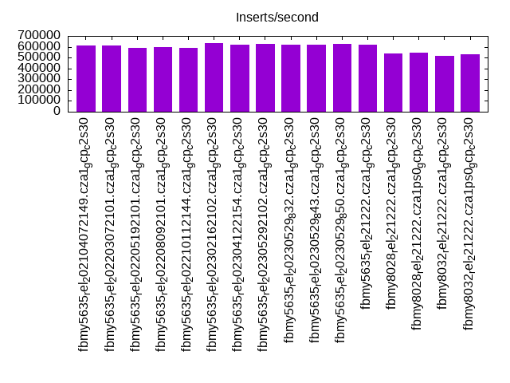
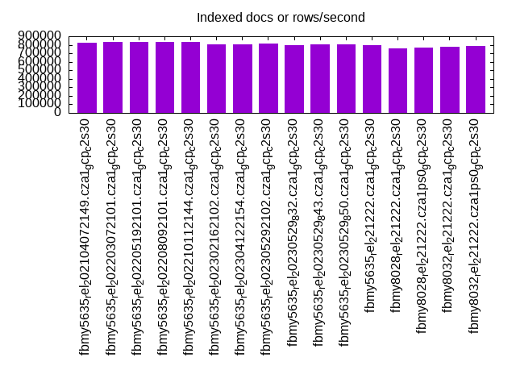
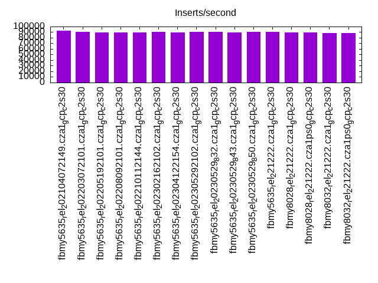
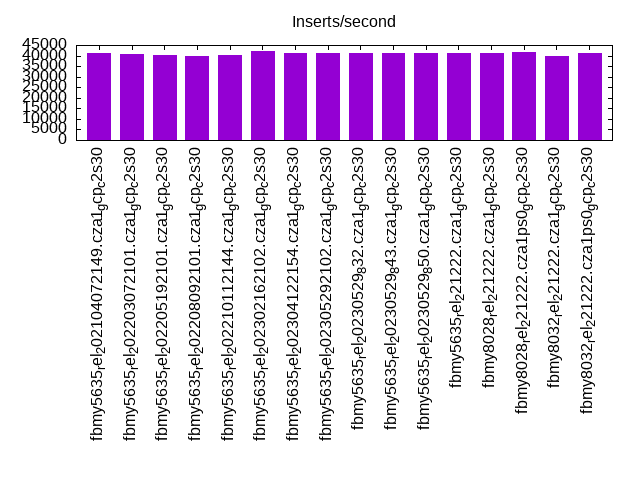
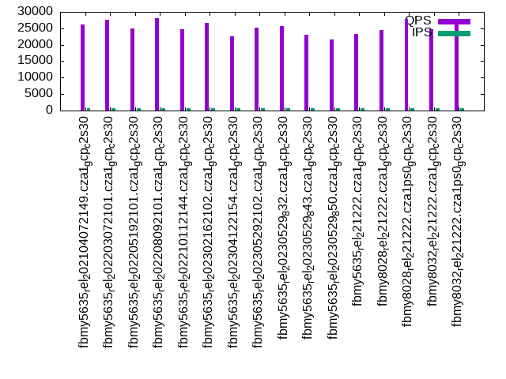
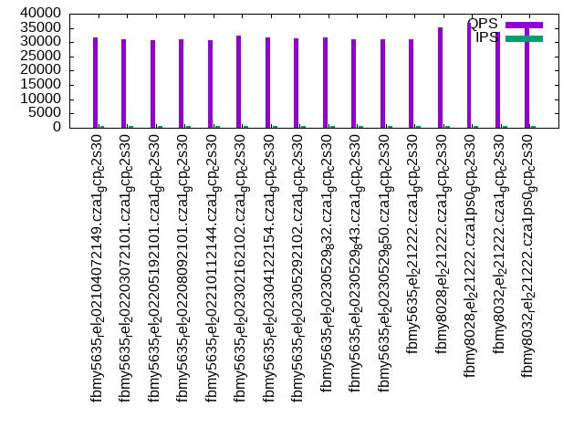
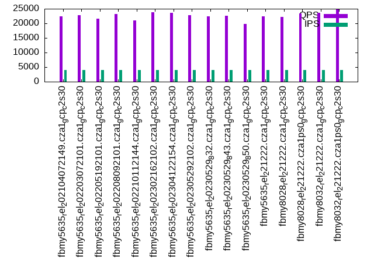
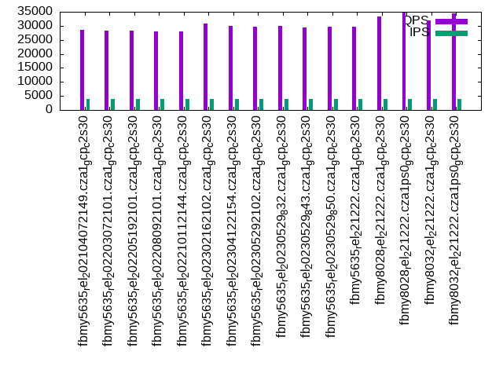
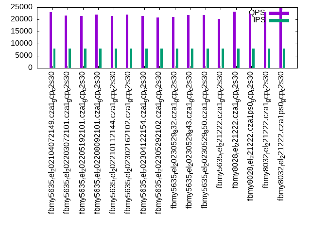
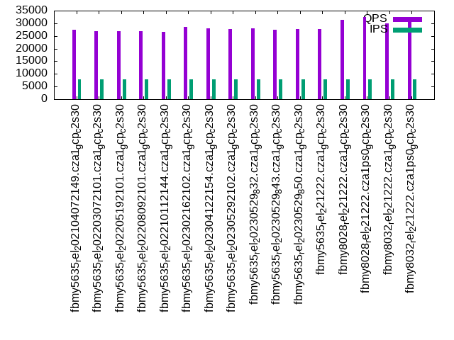

This is a report for the insert benchmark with 160M docs and 8 client(s). It is generated by scripts (bash, awk, sed) and Tufte might not be impressed. An overview of the insert benchmark is here and a short update is here. Below, by DBMS, I mean DBMS+version.config. An example is my8020.c10b40 where my means MySQL, 8020 is version 8.0.20 and c10b40 is the name for the configuration file.
The test server is a c2-standard-30 from GCP with 15 cores, hyperthreads disabled, Ubuntu 22.04 and XFS using SW RAID 0 over 4 local SSDs. The benchmark was run with 8 clients and there were 1, 2 or 3 connections per client. It uses 8 tables with a client per table. It loads 20M rows per table without secondary indexes, creates 3 secondary indexes per table, then inserts 50m+50m rows per table with a delete per insert to avoid growing the table. It then does 6 read+write tests for 1200s each that do queries as fast as possible with 100,100,500,500,1000,1000 inserts/s and the same for deletes/s per client concurrent with the queries. The database is cached in memory. Clients and the DBMS share one server. The per-database configs are in the per-database subdirectories here.
The tested DBMS are:
The numbers are inserts/s for l.i0, l.i1 and l.i2, indexed docs (or rows) /s for l.x and queries/s for qr100, qp100 thru qr1000, qp1000" The values are the average rate over the entire test for inserts (IPS) and queries (QPS). The range of values for IPS and QPS is split into 3 parts: bottom 25%, middle 50%, top 25%. Values in the bottom 25% have a red background, values in the top 25% have a green background and values in the middle have no color. A gray background is used for values that can be ignored because the DBMS did not sustain the target insert rate. Red backgrounds are not used when the minimum value is within 80% of the max value.
| dbms | l.i0 | l.x | l.i1 | l.i2 | qr100 | qp100 | qr500 | qp500 | qr1000 | qp1000 |
|---|---|---|---|---|---|---|---|---|---|---|
| fbmy5635_rel_202104072149.cza1_gcp_c2s30 | 613027 | 824743 | 92727 | 40984 | 26131 | 31821 | 22371 | 28655 | 22958 | 27352 |
| fbmy5635_rel_202203072101.cza1_gcp_c2s30 | 610687 | 833334 | 90729 | 40630 | 27589 | 31119 | 22833 | 28150 | 21545 | 26903 |
| fbmy5635_rel_202205192101.cza1_gcp_c2s30 | 592592 | 833334 | 89736 | 40120 | 25012 | 30841 | 21651 | 28269 | 21353 | 26799 |
| fbmy5635_rel_202208092101.cza1_gcp_c2s30 | 599251 | 837697 | 89236 | 39742 | 28022 | 30969 | 23124 | 28013 | 22083 | 26884 |
| fbmy5635_rel_202210112144.cza1_gcp_c2s30 | 592592 | 829016 | 89360 | 40241 | 24682 | 30692 | 21024 | 28021 | 21472 | 26578 |
| fbmy5635_rel_202302162102.cza1_gcp_c2s30 | 634921 | 808081 | 90909 | 42105 | 26615 | 32294 | 23746 | 30703 | 21957 | 28549 |
| fbmy5635_rel_202304122154.cza1_gcp_c2s30 | 622568 | 804021 | 89963 | 41237 | 22538 | 31568 | 23515 | 30058 | 21351 | 27974 |
| fbmy5635_rel_202305292102.cza1_gcp_c2s30 | 625000 | 812183 | 90090 | 41089 | 25205 | 31438 | 22802 | 29792 | 20747 | 27848 |
| fbmy5635_rel_20230529_832.cza1_gcp_c2s30 | 620155 | 800000 | 90319 | 41131 | 25656 | 31680 | 22364 | 29966 | 21072 | 27990 |
| fbmy5635_rel_20230529_843.cza1_gcp_c2s30 | 617761 | 804021 | 89812 | 40984 | 23029 | 31014 | 22616 | 29429 | 21702 | 27535 |
| fbmy5635_rel_20230529_850.cza1_gcp_c2s30 | 627451 | 804021 | 90293 | 41322 | 21616 | 31151 | 19782 | 29704 | 21741 | 27677 |
| fbmy5635_rel_221222.cza1_gcp_c2s30 | 622568 | 800000 | 90370 | 41216 | 23293 | 31148 | 22313 | 29668 | 20198 | 27849 |
| fbmy8028_rel_221222.cza1_gcp_c2s30 | 536913 | 758294 | 89536 | 41195 | 24414 | 35102 | 22244 | 33340 | 23151 | 31341 |
| fbmy8028_rel_221222.cza1ps0_gcp_c2s30 | 547945 | 769231 | 89661 | 41841 | 27729 | 36801 | 23478 | 34899 | 22420 | 32535 |
| fbmy8032_rel_221222.cza1_gcp_c2s30 | 514469 | 776700 | 88033 | 39960 | 24778 | 33476 | 23576 | 31868 | 23008 | 29824 |
| fbmy8032_rel_221222.cza1ps0_gcp_c2s30 | 531561 | 784314 | 88766 | 41110 | 27605 | 35981 | 24829 | 34367 | 24778 | 32212 |
This table has relative throughput, throughput for the DBMS relative to the DBMS in the first line, using the absolute throughput from the previous table. Values less than 0.95 have a yellow background. Values greater than 1.05 have a blue background.
| dbms | l.i0 | l.x | l.i1 | l.i2 | qr100 | qp100 | qr500 | qp500 | qr1000 | qp1000 |
|---|---|---|---|---|---|---|---|---|---|---|
| fbmy5635_rel_202104072149.cza1_gcp_c2s30 | 1.00 | 1.00 | 1.00 | 1.00 | 1.00 | 1.00 | 1.00 | 1.00 | 1.00 | 1.00 |
| fbmy5635_rel_202203072101.cza1_gcp_c2s30 | 1.00 | 1.01 | 0.98 | 0.99 | 1.06 | 0.98 | 1.02 | 0.98 | 0.94 | 0.98 |
| fbmy5635_rel_202205192101.cza1_gcp_c2s30 | 0.97 | 1.01 | 0.97 | 0.98 | 0.96 | 0.97 | 0.97 | 0.99 | 0.93 | 0.98 |
| fbmy5635_rel_202208092101.cza1_gcp_c2s30 | 0.98 | 1.02 | 0.96 | 0.97 | 1.07 | 0.97 | 1.03 | 0.98 | 0.96 | 0.98 |
| fbmy5635_rel_202210112144.cza1_gcp_c2s30 | 0.97 | 1.01 | 0.96 | 0.98 | 0.94 | 0.96 | 0.94 | 0.98 | 0.94 | 0.97 |
| fbmy5635_rel_202302162102.cza1_gcp_c2s30 | 1.04 | 0.98 | 0.98 | 1.03 | 1.02 | 1.01 | 1.06 | 1.07 | 0.96 | 1.04 |
| fbmy5635_rel_202304122154.cza1_gcp_c2s30 | 1.02 | 0.97 | 0.97 | 1.01 | 0.86 | 0.99 | 1.05 | 1.05 | 0.93 | 1.02 |
| fbmy5635_rel_202305292102.cza1_gcp_c2s30 | 1.02 | 0.98 | 0.97 | 1.00 | 0.96 | 0.99 | 1.02 | 1.04 | 0.90 | 1.02 |
| fbmy5635_rel_20230529_832.cza1_gcp_c2s30 | 1.01 | 0.97 | 0.97 | 1.00 | 0.98 | 1.00 | 1.00 | 1.05 | 0.92 | 1.02 |
| fbmy5635_rel_20230529_843.cza1_gcp_c2s30 | 1.01 | 0.97 | 0.97 | 1.00 | 0.88 | 0.97 | 1.01 | 1.03 | 0.95 | 1.01 |
| fbmy5635_rel_20230529_850.cza1_gcp_c2s30 | 1.02 | 0.97 | 0.97 | 1.01 | 0.83 | 0.98 | 0.88 | 1.04 | 0.95 | 1.01 |
| fbmy5635_rel_221222.cza1_gcp_c2s30 | 1.02 | 0.97 | 0.97 | 1.01 | 0.89 | 0.98 | 1.00 | 1.04 | 0.88 | 1.02 |
| fbmy8028_rel_221222.cza1_gcp_c2s30 | 0.88 | 0.92 | 0.97 | 1.01 | 0.93 | 1.10 | 0.99 | 1.16 | 1.01 | 1.15 |
| fbmy8028_rel_221222.cza1ps0_gcp_c2s30 | 0.89 | 0.93 | 0.97 | 1.02 | 1.06 | 1.16 | 1.05 | 1.22 | 0.98 | 1.19 |
| fbmy8032_rel_221222.cza1_gcp_c2s30 | 0.84 | 0.94 | 0.95 | 0.98 | 0.95 | 1.05 | 1.05 | 1.11 | 1.00 | 1.09 |
| fbmy8032_rel_221222.cza1ps0_gcp_c2s30 | 0.87 | 0.95 | 0.96 | 1.00 | 1.06 | 1.13 | 1.11 | 1.20 | 1.08 | 1.18 |
This lists the average rate of inserts/s for the tests that do inserts concurrent with queries. For such tests the query rate is listed in the table above. The read+write tests are setup so that the insert rate should match the target rate every second. Cells that are not at least 95% of the target have a red background to indicate a failure to satisfy the target.
| dbms | qr100.L1 | qp100.L2 | qr500.L3 | qp500.L4 | qr1000.L5 | qp1000.L6 |
|---|---|---|---|---|---|---|
| fbmy5635_rel_202104072149.cza1_gcp_c2s30 | 794 | 793 | 3967 | 3970 | 7947 | 7947 |
| fbmy5635_rel_202203072101.cza1_gcp_c2s30 | 794 | 794 | 3970 | 3967 | 7940 | 7940 |
| fbmy5635_rel_202205192101.cza1_gcp_c2s30 | 794 | 793 | 3970 | 3970 | 7947 | 7947 |
| fbmy5635_rel_202208092101.cza1_gcp_c2s30 | 794 | 793 | 3967 | 3970 | 7947 | 7940 |
| fbmy5635_rel_202210112144.cza1_gcp_c2s30 | 794 | 793 | 3970 | 3970 | 7947 | 7947 |
| fbmy5635_rel_202302162102.cza1_gcp_c2s30 | 794 | 794 | 3970 | 3967 | 7940 | 7940 |
| fbmy5635_rel_202304122154.cza1_gcp_c2s30 | 794 | 794 | 3970 | 3970 | 7940 | 7940 |
| fbmy5635_rel_202305292102.cza1_gcp_c2s30 | 793 | 794 | 3970 | 3970 | 7947 | 7947 |
| fbmy5635_rel_20230529_832.cza1_gcp_c2s30 | 793 | 794 | 3970 | 3970 | 7947 | 7947 |
| fbmy5635_rel_20230529_843.cza1_gcp_c2s30 | 794 | 794 | 3970 | 3967 | 7940 | 7947 |
| fbmy5635_rel_20230529_850.cza1_gcp_c2s30 | 794 | 794 | 3967 | 3967 | 7947 | 7947 |
| fbmy5635_rel_221222.cza1_gcp_c2s30 | 794 | 793 | 3970 | 3970 | 7947 | 7947 |
| fbmy8028_rel_221222.cza1_gcp_c2s30 | 794 | 794 | 3970 | 3970 | 7947 | 7947 |
| fbmy8028_rel_221222.cza1ps0_gcp_c2s30 | 793 | 794 | 3970 | 3970 | 7947 | 7947 |
| fbmy8032_rel_221222.cza1_gcp_c2s30 | 794 | 794 | 3967 | 3967 | 7940 | 7940 |
| fbmy8032_rel_221222.cza1ps0_gcp_c2s30 | 793 | 793 | 3970 | 3970 | 7947 | 7947 |
| target | 800 | 800 | 4000 | 4000 | 8000 | 8000 |
l.i0: load without secondary indexes. Graphs for performance per 1-second interval are here.
Average throughput:
Insert response time histogram: each cell has the percentage of responses that take <= the time in the header and max is the max response time in seconds. For the max column values in the top 25% of the range have a red background and in the bottom 25% of the range have a green background. The red background is not used when the min value is within 80% of the max value.
| dbms | 256us | 1ms | 4ms | 16ms | 64ms | 256ms | 1s | 4s | 16s | gt | max |
|---|---|---|---|---|---|---|---|---|---|---|---|
| fbmy5635_rel_202104072149.cza1_gcp_c2s30 | 28.113 | 71.859 | 0.013 | 0.002 | 0.010 | 0.003 | 0.335 | ||||
| fbmy5635_rel_202203072101.cza1_gcp_c2s30 | 24.871 | 75.101 | 0.013 | 0.001 | 0.009 | 0.004 | 0.355 | ||||
| fbmy5635_rel_202205192101.cza1_gcp_c2s30 | 18.807 | 81.161 | 0.016 | 0.002 | 0.008 | 0.006 | 0.383 | ||||
| fbmy5635_rel_202208092101.cza1_gcp_c2s30 | 21.732 | 78.236 | 0.015 | 0.002 | 0.009 | 0.005 | 0.391 | ||||
| fbmy5635_rel_202210112144.cza1_gcp_c2s30 | 18.633 | 81.332 | 0.019 | 0.001 | 0.011 | 0.003 | 0.344 | ||||
| fbmy5635_rel_202302162102.cza1_gcp_c2s30 | 44.735 | 55.237 | 0.013 | 0.001 | 0.009 | 0.005 | 0.324 | ||||
| fbmy5635_rel_202304122154.cza1_gcp_c2s30 | 40.788 | 59.180 | 0.017 | 0.001 | 0.009 | 0.004 | 0.397 | ||||
| fbmy5635_rel_202305292102.cza1_gcp_c2s30 | 33.378 | 66.593 | 0.014 | 0.001 | 0.010 | 0.004 | 0.294 | ||||
| fbmy5635_rel_20230529_832.cza1_gcp_c2s30 | 38.958 | 61.014 | 0.014 | 0.001 | 0.009 | 0.005 | 0.357 | ||||
| fbmy5635_rel_20230529_843.cza1_gcp_c2s30 | 32.557 | 67.412 | 0.017 | nonzero | 0.007 | 0.006 | 0.343 | ||||
| fbmy5635_rel_20230529_850.cza1_gcp_c2s30 | 34.954 | 65.007 | 0.022 | 0.003 | 0.012 | 0.002 | 0.310 | ||||
| fbmy5635_rel_221222.cza1_gcp_c2s30 | 37.038 | 62.935 | 0.012 | 0.001 | 0.008 | 0.006 | 0.391 | ||||
| fbmy8028_rel_221222.cza1_gcp_c2s30 | 7.254 | 92.607 | 0.116 | 0.007 | 0.012 | 0.004 | 0.333 | ||||
| fbmy8028_rel_221222.cza1ps0_gcp_c2s30 | 10.193 | 89.652 | 0.132 | 0.007 | 0.011 | 0.006 | 0.333 | ||||
| fbmy8032_rel_221222.cza1_gcp_c2s30 | 2.937 | 96.917 | 0.122 | 0.007 | 0.015 | 0.003 | 0.337 | ||||
| fbmy8032_rel_221222.cza1ps0_gcp_c2s30 | 7.803 | 92.052 | 0.122 | 0.006 | 0.015 | 0.002 | 0.371 |
Performance metrics for the DBMS listed above. Some are normalized by throughput, others are not. Legend for results is here.
ips qps rps rmbps wps wmbps rpq rkbpq wpi wkbpi csps cpups cspq cpupq dbgb1 dbgb2 rss maxop p50 p99 tag 613027 0 0 0.0 625.7 174.0 0.000 0.000 0.001 0.291 72221 73.7 0.118 18 4.9 6.5 1.4 0.335 83310 51063 fbmy5635_rel_202104072149.cza1_gcp_c2s30 610687 0 0 0.0 617.1 178.0 0.000 0.000 0.001 0.298 73282 74.1 0.120 18 5.0 6.5 1.4 0.355 80808 52259 fbmy5635_rel_202203072101.cza1_gcp_c2s30 592592 0 0 0.0 596.9 170.1 0.000 0.000 0.001 0.294 72057 74.0 0.122 19 5.0 6.5 1.5 0.383 79813 51943 fbmy5635_rel_202205192101.cza1_gcp_c2s30 599251 0 0 0.0 604.7 172.6 0.000 0.000 0.001 0.295 72185 73.5 0.120 18 4.8 6.3 1.6 0.391 80213 49845 fbmy5635_rel_202208092101.cza1_gcp_c2s30 592592 0 0 0.0 612.2 176.3 0.000 0.000 0.001 0.305 71035 73.5 0.120 19 4.9 6.4 1.6 0.344 80113 52561 fbmy5635_rel_202210112144.cza1_gcp_c2s30 634921 0 0 0.0 521.1 144.6 0.000 0.000 0.001 0.233 72640 72.8 0.114 17 4.7 6.1 1.2 0.324 85707 49962 fbmy5635_rel_202302162102.cza1_gcp_c2s30 622568 0 0 0.0 524.1 145.7 0.000 0.000 0.001 0.240 71744 72.2 0.115 17 4.7 6.2 1.3 0.397 86000 50644 fbmy5635_rel_202304122154.cza1_gcp_c2s30 625000 0 0 0.0 517.5 143.5 0.000 0.000 0.001 0.235 71507 73.1 0.114 18 4.7 6.1 1.2 0.294 84136 59036 fbmy5635_rel_202305292102.cza1_gcp_c2s30 620155 0 0 0.0 516.1 142.4 0.000 0.000 0.001 0.235 71452 72.4 0.115 18 4.7 6.2 1.3 0.357 84740 56838 fbmy5635_rel_20230529_832.cza1_gcp_c2s30 617761 0 0 0.0 515.4 141.4 0.000 0.000 0.001 0.234 70909 73.4 0.115 18 4.7 6.1 1.2 0.343 84608 50545 fbmy5635_rel_20230529_843.cza1_gcp_c2s30 627451 0 0 0.0 522.2 144.2 0.000 0.000 0.001 0.235 71602 73.0 0.114 17 4.6 6.1 1.2 0.310 83342 52243 fbmy5635_rel_20230529_850.cza1_gcp_c2s30 622568 0 0 0.0 519.1 142.7 0.000 0.000 0.001 0.235 71944 72.4 0.116 17 4.7 6.2 1.3 0.391 85036 55140 fbmy5635_rel_221222.cza1_gcp_c2s30 536913 0 0 0.0 458.8 123.4 0.000 0.000 0.001 0.235 61941 73.2 0.115 20 4.7 6.4 1.7 0.333 72321 50345 fbmy8028_rel_221222.cza1_gcp_c2s30 547945 0 0 0.0 471.9 126.0 0.000 0.000 0.001 0.235 63150 73.1 0.115 20 4.7 6.3 1.4 0.333 74219 46749 fbmy8028_rel_221222.cza1ps0_gcp_c2s30 514469 0 0 0.0 442.3 119.0 0.000 0.000 0.001 0.237 59687 72.3 0.116 21 4.6 6.4 1.7 0.337 70622 46949 fbmy8032_rel_221222.cza1_gcp_c2s30 531561 0 0 0.0 458.5 121.9 0.000 0.000 0.001 0.235 61755 72.4 0.116 20 4.6 6.3 1.5 0.371 72022 48348 fbmy8032_rel_221222.cza1ps0_gcp_c2s30
l.x: create secondary indexes.
Average throughput:
Performance metrics for the DBMS listed above. Some are normalized by throughput, others are not. Legend for results is here.
ips qps rps rmbps wps wmbps rpq rkbpq wpi wkbpi csps cpups cspq cpupq dbgb1 dbgb2 rss maxop p50 p99 tag 824743 0 1 0.1 339.1 121.2 0.000 0.000 0.000 0.151 1294 51.0 0.002 9 10.5 12.1 13.7 0.002 NA NA fbmy5635_rel_202104072149.cza1_gcp_c2s30 833334 0 1 0.1 340.1 118.1 0.000 0.000 0.000 0.145 1208 50.0 0.001 9 10.5 12.0 13.0 0.002 NA NA fbmy5635_rel_202203072101.cza1_gcp_c2s30 833334 0 1 0.1 338.2 118.1 0.000 0.000 0.000 0.145 1208 50.1 0.001 9 10.5 12.0 13.3 0.002 NA NA fbmy5635_rel_202205192101.cza1_gcp_c2s30 837697 0 1 0.1 343.0 119.0 0.000 0.000 0.000 0.145 1162 50.3 0.001 9 10.5 12.0 12.7 0.002 NA NA fbmy5635_rel_202208092101.cza1_gcp_c2s30 829016 0 1 0.1 348.4 119.4 0.000 0.000 0.000 0.148 1301 50.5 0.002 9 10.5 12.0 13.5 0.002 NA NA fbmy5635_rel_202210112144.cza1_gcp_c2s30 808081 0 1 0.1 308.9 110.7 0.000 0.000 0.000 0.140 1064 49.9 0.001 9 10.5 12.0 11.0 0.002 NA NA fbmy5635_rel_202302162102.cza1_gcp_c2s30 804021 0 1 0.1 309.6 108.3 0.000 0.000 0.000 0.138 1095 50.0 0.001 9 10.5 12.0 11.0 0.002 NA NA fbmy5635_rel_202304122154.cza1_gcp_c2s30 812183 0 1 0.1 311.1 109.9 0.000 0.000 0.000 0.139 1141 49.8 0.001 9 10.5 12.0 11.1 0.002 NA NA fbmy5635_rel_202305292102.cza1_gcp_c2s30 800000 0 1 0.1 303.1 107.5 0.000 0.000 0.000 0.138 1064 49.4 0.001 9 10.5 12.0 11.0 0.002 NA NA fbmy5635_rel_20230529_832.cza1_gcp_c2s30 804021 0 1 0.1 307.1 109.3 0.000 0.000 0.000 0.139 1022 50.0 0.001 9 10.5 12.0 11.0 0.002 NA NA fbmy5635_rel_20230529_843.cza1_gcp_c2s30 804021 0 1 0.1 310.1 108.6 0.000 0.000 0.000 0.138 1116 50.1 0.001 9 10.4 11.9 11.0 0.002 NA NA fbmy5635_rel_20230529_850.cza1_gcp_c2s30 800000 0 1 0.1 304.2 108.2 0.000 0.000 0.000 0.139 1341 49.2 0.002 9 10.5 12.0 11.0 0.002 NA NA fbmy5635_rel_221222.cza1_gcp_c2s30 758294 0 1 0.1 291.1 106.3 0.000 0.000 0.000 0.144 1428 48.6 0.002 10 10.4 12.0 13.2 0.003 NA NA fbmy8028_rel_221222.cza1_gcp_c2s30 769231 0 1 0.1 299.4 107.2 0.000 0.000 0.000 0.143 1576 49.8 0.002 10 10.5 12.1 12.8 0.002 NA NA fbmy8028_rel_221222.cza1ps0_gcp_c2s30 776700 0 1 0.1 292.9 108.0 0.000 0.000 0.000 0.142 1776 50.0 0.002 10 10.4 12.2 13.1 0.003 NA NA fbmy8032_rel_221222.cza1_gcp_c2s30 784314 0 1 0.1 297.7 110.5 0.000 0.000 0.000 0.144 1920 50.2 0.002 10 10.4 12.1 12.8 0.003 NA NA fbmy8032_rel_221222.cza1ps0_gcp_c2s30
l.i1: continue load after secondary indexes created with 50 inserts per transaction. Graphs for performance per 1-second interval are here.
Average throughput:
Insert response time histogram: each cell has the percentage of responses that take <= the time in the header and max is the max response time in seconds. For the max column values in the top 25% of the range have a red background and in the bottom 25% of the range have a green background. The red background is not used when the min value is within 80% of the max value.
| dbms | 256us | 1ms | 4ms | 16ms | 64ms | 256ms | 1s | 4s | 16s | gt | max |
|---|---|---|---|---|---|---|---|---|---|---|---|
| fbmy5635_rel_202104072149.cza1_gcp_c2s30 | 0.047 | 42.354 | 57.478 | 0.105 | 0.008 | 0.007 | 0.469 | ||||
| fbmy5635_rel_202203072101.cza1_gcp_c2s30 | 0.036 | 36.017 | 63.826 | 0.106 | 0.008 | 0.008 | 0.451 | ||||
| fbmy5635_rel_202205192101.cza1_gcp_c2s30 | 0.037 | 34.076 | 65.761 | 0.111 | 0.010 | 0.006 | 0.449 | ||||
| fbmy5635_rel_202208092101.cza1_gcp_c2s30 | 0.065 | 33.569 | 66.238 | 0.113 | 0.009 | 0.006 | 0.417 | ||||
| fbmy5635_rel_202210112144.cza1_gcp_c2s30 | 0.026 | 33.444 | 66.404 | 0.112 | 0.008 | 0.007 | 0.483 | ||||
| fbmy5635_rel_202302162102.cza1_gcp_c2s30 | 0.034 | 38.058 | 61.786 | 0.107 | 0.009 | 0.006 | 0.386 | ||||
| fbmy5635_rel_202304122154.cza1_gcp_c2s30 | 0.032 | 35.547 | 64.294 | 0.112 | 0.011 | 0.004 | 0.458 | ||||
| fbmy5635_rel_202305292102.cza1_gcp_c2s30 | 0.050 | 35.604 | 64.223 | 0.108 | 0.012 | 0.004 | 0.392 | ||||
| fbmy5635_rel_20230529_832.cza1_gcp_c2s30 | 0.050 | 37.398 | 62.432 | 0.106 | 0.010 | 0.005 | 0.403 | ||||
| fbmy5635_rel_20230529_843.cza1_gcp_c2s30 | 0.030 | 36.589 | 63.258 | 0.108 | 0.009 | 0.007 | 0.397 | ||||
| fbmy5635_rel_20230529_850.cza1_gcp_c2s30 | 0.041 | 36.833 | 63.006 | 0.105 | 0.009 | 0.006 | 0.440 | ||||
| fbmy5635_rel_221222.cza1_gcp_c2s30 | 0.044 | 36.867 | 62.973 | 0.100 | 0.010 | 0.006 | 0.443 | ||||
| fbmy8028_rel_221222.cza1_gcp_c2s30 | 0.015 | 35.087 | 64.776 | 0.103 | 0.014 | 0.004 | 0.467 | ||||
| fbmy8028_rel_221222.cza1ps0_gcp_c2s30 | 0.015 | 35.607 | 64.256 | 0.104 | 0.012 | 0.006 | 0.700 | ||||
| fbmy8032_rel_221222.cza1_gcp_c2s30 | 0.003 | 33.124 | 66.755 | 0.098 | 0.014 | 0.005 | nonzero | 1.012 | |||
| fbmy8032_rel_221222.cza1ps0_gcp_c2s30 | 0.009 | 33.943 | 65.927 | 0.102 | 0.014 | 0.005 | 0.388 |
Delete response time histogram: each cell has the percentage of responses that take <= the time in the header and max is the max response time in seconds. For the max column values in the top 25% of the range have a red background and in the bottom 25% of the range have a green background. The red background is not used when the min value is within 80% of the max value.
| dbms | 256us | 1ms | 4ms | 16ms | 64ms | 256ms | 1s | 4s | 16s | gt | max |
|---|---|---|---|---|---|---|---|---|---|---|---|
| fbmy5635_rel_202104072149.cza1_gcp_c2s30 | 0.044 | 39.825 | 60.006 | 0.109 | 0.008 | 0.008 | 0.469 | ||||
| fbmy5635_rel_202203072101.cza1_gcp_c2s30 | 0.038 | 37.439 | 62.402 | 0.106 | 0.008 | 0.008 | 0.453 | ||||
| fbmy5635_rel_202205192101.cza1_gcp_c2s30 | 0.037 | 35.568 | 64.270 | 0.110 | 0.009 | 0.006 | 0.450 | ||||
| fbmy5635_rel_202208092101.cza1_gcp_c2s30 | 0.063 | 34.199 | 65.609 | 0.113 | 0.009 | 0.006 | 0.418 | ||||
| fbmy5635_rel_202210112144.cza1_gcp_c2s30 | 0.026 | 35.087 | 64.762 | 0.110 | 0.008 | 0.007 | 0.484 | ||||
| fbmy5635_rel_202302162102.cza1_gcp_c2s30 | 0.033 | 38.531 | 61.314 | 0.107 | 0.009 | 0.006 | 0.386 | ||||
| fbmy5635_rel_202304122154.cza1_gcp_c2s30 | 0.033 | 37.505 | 62.336 | 0.111 | 0.011 | 0.004 | 0.457 | ||||
| fbmy5635_rel_202305292102.cza1_gcp_c2s30 | 0.052 | 38.221 | 61.603 | 0.109 | 0.011 | 0.004 | 0.395 | ||||
| fbmy5635_rel_20230529_832.cza1_gcp_c2s30 | 0.052 | 37.086 | 62.738 | 0.108 | 0.010 | 0.005 | 0.404 | ||||
| fbmy5635_rel_20230529_843.cza1_gcp_c2s30 | 0.029 | 36.581 | 63.266 | 0.108 | 0.009 | 0.007 | 0.395 | ||||
| fbmy5635_rel_20230529_850.cza1_gcp_c2s30 | 0.042 | 38.138 | 61.699 | 0.106 | 0.009 | 0.006 | 0.441 | ||||
| fbmy5635_rel_221222.cza1_gcp_c2s30 | 0.044 | 37.774 | 62.068 | 0.099 | 0.010 | 0.005 | 0.445 | ||||
| fbmy8028_rel_221222.cza1_gcp_c2s30 | 0.019 | 38.363 | 61.502 | 0.098 | 0.014 | 0.004 | 0.477 | ||||
| fbmy8028_rel_221222.cza1ps0_gcp_c2s30 | 0.022 | 38.865 | 60.995 | 0.099 | 0.012 | 0.006 | 0.701 | ||||
| fbmy8032_rel_221222.cza1_gcp_c2s30 | 0.005 | 35.495 | 64.387 | 0.094 | 0.014 | 0.005 | nonzero | 1.011 | |||
| fbmy8032_rel_221222.cza1ps0_gcp_c2s30 | 0.011 | 36.682 | 63.191 | 0.097 | 0.014 | 0.005 | 0.386 |
Performance metrics for the DBMS listed above. Some are normalized by throughput, others are not. Legend for results is here.
ips qps rps rmbps wps wmbps rpq rkbpq wpi wkbpi csps cpups cspq cpupq dbgb1 dbgb2 rss maxop p50 p99 tag 92727 0 4 1.6 709.9 203.3 0.000 0.018 0.008 2.245 65523 61.0 0.707 99 17.5 18.1 55.3 0.469 11737 8341 fbmy5635_rel_202104072149.cza1_gcp_c2s30 90729 0 4 1.6 689.7 207.4 0.000 0.018 0.008 2.341 65295 60.0 0.720 99 18.1 18.5 54.2 0.451 11487 8042 fbmy5635_rel_202203072101.cza1_gcp_c2s30 89736 0 4 1.6 678.8 203.1 0.000 0.018 0.008 2.318 63679 60.6 0.710 101 16.3 16.6 54.5 0.449 11338 8091 fbmy5635_rel_202205192101.cza1_gcp_c2s30 89236 0 4 1.6 675.4 201.0 0.000 0.018 0.008 2.306 63194 60.0 0.708 101 16.4 16.9 53.7 0.417 11288 8291 fbmy5635_rel_202208092101.cza1_gcp_c2s30 89360 0 4 1.6 681.0 202.9 0.000 0.018 0.008 2.326 63199 60.3 0.707 101 15.6 16.0 54.5 0.483 11288 8045 fbmy5635_rel_202210112144.cza1_gcp_c2s30 90909 0 4 1.6 553.5 162.3 0.000 0.018 0.006 1.828 60947 59.0 0.670 97 16.5 16.9 50.0 0.386 11641 8394 fbmy5635_rel_202302162102.cza1_gcp_c2s30 89963 0 4 1.6 557.5 163.4 0.000 0.018 0.006 1.860 60608 59.3 0.674 99 13.6 14.0 50.2 0.458 11488 8591 fbmy5635_rel_202304122154.cza1_gcp_c2s30 90090 0 4 1.6 545.7 159.0 0.000 0.018 0.006 1.807 60047 59.7 0.667 99 12.0 12.5 50.0 0.392 11492 8391 fbmy5635_rel_202305292102.cza1_gcp_c2s30 90319 0 4 1.6 551.4 161.5 0.000 0.018 0.006 1.831 60227 60.2 0.667 100 12.3 12.6 50.0 0.403 11537 8144 fbmy5635_rel_20230529_832.cza1_gcp_c2s30 89812 0 4 1.6 544.2 159.9 0.000 0.018 0.006 1.824 59322 61.2 0.661 102 16.9 17.3 49.7 0.397 11438 8294 fbmy5635_rel_20230529_843.cza1_gcp_c2s30 90293 0 359 1.6 564.6 163.8 0.004 0.018 0.006 1.857 60461 60.5 0.670 101 12.2 12.6 50.3 0.440 11537 8340 fbmy5635_rel_20230529_850.cza1_gcp_c2s30 90370 0 4 0.4 553.0 161.6 0.000 0.004 0.006 1.831 60246 59.6 0.667 99 12.2 12.6 50.3 0.443 11587 8444 fbmy5635_rel_221222.cza1_gcp_c2s30 89536 0 4 0.4 565.2 159.5 0.000 0.004 0.006 1.824 54886 63.3 0.613 106 13.1 13.6 51.7 0.467 11437 7941 fbmy8028_rel_221222.cza1_gcp_c2s30 89661 0 4 0.4 578.1 163.8 0.000 0.004 0.006 1.870 55123 63.5 0.615 106 12.1 12.7 50.4 0.700 11437 8090 fbmy8028_rel_221222.cza1ps0_gcp_c2s30 88033 0 4 0.4 568.6 161.6 0.000 0.004 0.006 1.880 53274 64.5 0.605 110 14.8 15.5 51.7 1.012 11192 7792 fbmy8032_rel_221222.cza1_gcp_c2s30 88766 0 4 0.4 581.8 164.8 0.000 0.004 0.007 1.901 54416 63.8 0.613 108 13.3 13.9 51.1 0.388 11288 8091 fbmy8032_rel_221222.cza1ps0_gcp_c2s30
l.i2: continue load after secondary indexes created with 5 inserts per transaction. Graphs for performance per 1-second interval are here.
Average throughput:
Insert response time histogram: each cell has the percentage of responses that take <= the time in the header and max is the max response time in seconds. For the max column values in the top 25% of the range have a red background and in the bottom 25% of the range have a green background. The red background is not used when the min value is within 80% of the max value.
| dbms | 256us | 1ms | 4ms | 16ms | 64ms | 256ms | 1s | 4s | 16s | gt | max |
|---|---|---|---|---|---|---|---|---|---|---|---|
| fbmy5635_rel_202104072149.cza1_gcp_c2s30 | 0.147 | 83.393 | 16.393 | 0.061 | 0.006 | nonzero | 0.109 | ||||
| fbmy5635_rel_202203072101.cza1_gcp_c2s30 | 0.094 | 82.143 | 17.694 | 0.064 | 0.006 | nonzero | 0.209 | ||||
| fbmy5635_rel_202205192101.cza1_gcp_c2s30 | 0.165 | 80.633 | 19.134 | 0.063 | 0.005 | nonzero | 0.218 | ||||
| fbmy5635_rel_202208092101.cza1_gcp_c2s30 | 0.147 | 79.376 | 20.405 | 0.066 | 0.007 | nonzero | 0.150 | ||||
| fbmy5635_rel_202210112144.cza1_gcp_c2s30 | 0.106 | 81.188 | 18.636 | 0.064 | 0.006 | nonzero | 0.121 | ||||
| fbmy5635_rel_202302162102.cza1_gcp_c2s30 | 0.099 | 86.464 | 13.396 | 0.036 | 0.005 | nonzero | 0.079 | ||||
| fbmy5635_rel_202304122154.cza1_gcp_c2s30 | 0.175 | 84.180 | 15.604 | 0.035 | 0.005 | nonzero | 0.083 | ||||
| fbmy5635_rel_202305292102.cza1_gcp_c2s30 | 0.138 | 83.893 | 15.927 | 0.036 | 0.006 | nonzero | 0.067 | ||||
| fbmy5635_rel_20230529_832.cza1_gcp_c2s30 | 0.148 | 83.644 | 16.166 | 0.037 | 0.005 | nonzero | 0.097 | ||||
| fbmy5635_rel_20230529_843.cza1_gcp_c2s30 | 0.091 | 83.385 | 16.483 | 0.037 | 0.004 | nonzero | 0.152 | ||||
| fbmy5635_rel_20230529_850.cza1_gcp_c2s30 | 0.147 | 84.839 | 14.975 | 0.034 | 0.005 | 0.056 | |||||
| fbmy5635_rel_221222.cza1_gcp_c2s30 | 0.068 | 84.539 | 15.354 | 0.035 | 0.005 | 0.050 | |||||
| fbmy8028_rel_221222.cza1_gcp_c2s30 | 0.003 | 79.350 | 20.536 | 0.106 | 0.003 | 0.002 | 0.001 | 0.311 | |||
| fbmy8028_rel_221222.cza1ps0_gcp_c2s30 | 0.011 | 80.828 | 19.054 | 0.102 | 0.003 | 0.002 | 0.001 | 0.334 | |||
| fbmy8032_rel_221222.cza1_gcp_c2s30 | 0.001 | 75.378 | 24.499 | 0.118 | 0.003 | 0.001 | nonzero | 0.315 | |||
| fbmy8032_rel_221222.cza1ps0_gcp_c2s30 | 0.005 | 78.815 | 21.063 | 0.112 | 0.003 | 0.002 | nonzero | 0.302 |
Delete response time histogram: each cell has the percentage of responses that take <= the time in the header and max is the max response time in seconds. For the max column values in the top 25% of the range have a red background and in the bottom 25% of the range have a green background. The red background is not used when the min value is within 80% of the max value.
| dbms | 256us | 1ms | 4ms | 16ms | 64ms | 256ms | 1s | 4s | 16s | gt | max |
|---|---|---|---|---|---|---|---|---|---|---|---|
| fbmy5635_rel_202104072149.cza1_gcp_c2s30 | nonzero | 67.273 | 32.654 | 0.067 | 0.006 | nonzero | 0.114 | ||||
| fbmy5635_rel_202203072101.cza1_gcp_c2s30 | 64.386 | 35.537 | 0.070 | 0.007 | nonzero | 0.209 | |||||
| fbmy5635_rel_202205192101.cza1_gcp_c2s30 | 61.824 | 38.103 | 0.068 | 0.005 | nonzero | 0.218 | |||||
| fbmy5635_rel_202208092101.cza1_gcp_c2s30 | 60.059 | 39.862 | 0.072 | 0.007 | nonzero | 0.150 | |||||
| fbmy5635_rel_202210112144.cza1_gcp_c2s30 | nonzero | 62.645 | 37.278 | 0.070 | 0.006 | nonzero | 0.121 | ||||
| fbmy5635_rel_202302162102.cza1_gcp_c2s30 | 0.005 | 69.429 | 30.521 | 0.040 | 0.005 | nonzero | 0.079 | ||||
| fbmy5635_rel_202304122154.cza1_gcp_c2s30 | nonzero | 65.762 | 34.194 | 0.039 | 0.006 | nonzero | 0.083 | ||||
| fbmy5635_rel_202305292102.cza1_gcp_c2s30 | nonzero | 65.458 | 34.495 | 0.040 | 0.007 | nonzero | 0.067 | ||||
| fbmy5635_rel_20230529_832.cza1_gcp_c2s30 | 0.004 | 65.333 | 34.617 | 0.041 | 0.006 | nonzero | 0.096 | ||||
| fbmy5635_rel_20230529_843.cza1_gcp_c2s30 | 64.983 | 34.971 | 0.041 | 0.005 | nonzero | 0.152 | |||||
| fbmy5635_rel_20230529_850.cza1_gcp_c2s30 | 66.585 | 33.371 | 0.038 | 0.005 | 0.056 | ||||||
| fbmy5635_rel_221222.cza1_gcp_c2s30 | 0.002 | 65.324 | 34.630 | 0.038 | 0.006 | 0.050 | |||||
| fbmy8028_rel_221222.cza1_gcp_c2s30 | 71.213 | 28.671 | 0.110 | 0.003 | 0.002 | 0.001 | 0.312 | ||||
| fbmy8028_rel_221222.cza1ps0_gcp_c2s30 | 73.275 | 26.614 | 0.106 | 0.003 | 0.002 | 0.001 | 0.333 | ||||
| fbmy8032_rel_221222.cza1_gcp_c2s30 | 66.447 | 33.428 | 0.120 | 0.003 | 0.001 | nonzero | 0.286 | ||||
| fbmy8032_rel_221222.cza1ps0_gcp_c2s30 | 70.821 | 29.060 | 0.113 | 0.003 | 0.002 | nonzero | 0.300 |
Performance metrics for the DBMS listed above. Some are normalized by throughput, others are not. Legend for results is here.
ips qps rps rmbps wps wmbps rpq rkbpq wpi wkbpi csps cpups cspq cpupq dbgb1 dbgb2 rss maxop p50 p99 tag 40984 0 0 0.0 462.7 107.9 0.000 0.000 0.011 2.697 234921 67.8 5.732 248 12.3 12.3 66.8 0.109 5329 3502 fbmy5635_rel_202104072149.cza1_gcp_c2s30 40630 0 0 0.0 447.4 103.5 0.000 0.000 0.011 2.609 235776 67.2 5.803 248 12.2 12.3 65.7 0.209 5229 3466 fbmy5635_rel_202203072101.cza1_gcp_c2s30 40120 0 0 0.0 436.9 101.5 0.000 0.000 0.011 2.592 233501 67.2 5.820 251 15.2 15.3 66.3 0.218 5174 3411 fbmy5635_rel_202205192101.cza1_gcp_c2s30 39742 0 0 0.0 445.6 104.4 0.000 0.000 0.011 2.691 230827 67.1 5.808 253 12.3 12.3 65.5 0.150 5139 3406 fbmy5635_rel_202208092101.cza1_gcp_c2s30 40241 0 0 0.0 441.8 102.8 0.000 0.000 0.011 2.616 234843 67.3 5.836 251 14.5 14.5 66.0 0.121 5209 3433 fbmy5635_rel_202210112144.cza1_gcp_c2s30 42105 0 0 0.0 316.3 69.3 0.000 0.000 0.008 1.685 251643 64.3 5.977 229 11.9 11.9 61.4 0.079 5409 3336 fbmy5635_rel_202302162102.cza1_gcp_c2s30 41237 0 0 0.0 305.5 67.4 0.000 0.000 0.007 1.673 248498 64.2 6.026 234 12.2 12.3 61.6 0.083 5349 3217 fbmy5635_rel_202304122154.cza1_gcp_c2s30 41089 0 0 0.0 306.3 67.7 0.000 0.000 0.007 1.687 246725 64.6 6.005 236 11.8 11.9 61.2 0.067 5329 3236 fbmy5635_rel_202305292102.cza1_gcp_c2s30 41131 0 0 0.0 308.3 67.4 0.000 0.000 0.007 1.678 246003 64.7 5.981 236 12.2 12.3 61.1 0.097 5344 3241 fbmy5635_rel_20230529_832.cza1_gcp_c2s30 40984 0 0 0.0 308.2 66.0 0.000 0.000 0.008 1.650 243926 65.3 5.952 239 14.1 14.1 61.4 0.152 5314 3177 fbmy5635_rel_20230529_843.cza1_gcp_c2s30 41322 0 0 0.0 308.9 67.4 0.000 0.000 0.007 1.671 248486 64.5 6.013 234 12.0 12.1 61.5 0.056 5339 3181 fbmy5635_rel_20230529_850.cza1_gcp_c2s30 41216 0 0 0.0 302.9 66.7 0.000 0.000 0.007 1.657 249372 64.3 6.050 234 11.8 11.9 61.3 0.050 5281 3218 fbmy5635_rel_221222.cza1_gcp_c2s30 41195 0 0 0.0 318.3 71.8 0.000 0.000 0.008 1.785 224513 68.3 5.450 249 12.0 12.3 62.3 0.311 5394 3082 fbmy8028_rel_221222.cza1_gcp_c2s30 41841 0 0 0.0 325.2 75.0 0.000 0.000 0.008 1.835 229800 67.6 5.492 242 11.9 12.1 62.1 0.334 5476 3172 fbmy8028_rel_221222.cza1ps0_gcp_c2s30 39960 0 0 0.0 308.4 70.3 0.000 0.000 0.008 1.802 217218 68.4 5.436 257 12.0 12.3 62.4 0.315 5241 3061 fbmy8032_rel_221222.cza1_gcp_c2s30 41110 0 0 0.0 320.4 70.1 0.000 0.000 0.008 1.747 226774 67.6 5.516 247 12.2 12.5 62.4 0.302 5369 3117 fbmy8032_rel_221222.cza1ps0_gcp_c2s30
qr100.L1: range queries with 100 insert/s per client. Graphs for performance per 1-second interval are here.
Average throughput:
Query response time histogram: each cell has the percentage of responses that take <= the time in the header and max is the max response time in seconds. For max values in the top 25% of the range have a red background and in the bottom 25% of the range have a green background. The red background is not used when the min value is within 80% of the max value.
| dbms | 256us | 1ms | 4ms | 16ms | 64ms | 256ms | 1s | 4s | 16s | gt | max |
|---|---|---|---|---|---|---|---|---|---|---|---|
| fbmy5635_rel_202104072149.cza1_gcp_c2s30 | 71.473 | 26.946 | 1.581 | nonzero | nonzero | nonzero | 0.131 | ||||
| fbmy5635_rel_202203072101.cza1_gcp_c2s30 | 71.966 | 27.774 | 0.260 | nonzero | nonzero | nonzero | 0.130 | ||||
| fbmy5635_rel_202205192101.cza1_gcp_c2s30 | 69.422 | 29.224 | 1.353 | nonzero | nonzero | nonzero | 0.133 | ||||
| fbmy5635_rel_202208092101.cza1_gcp_c2s30 | 74.587 | 23.168 | 2.245 | nonzero | nonzero | nonzero | 0.134 | ||||
| fbmy5635_rel_202210112144.cza1_gcp_c2s30 | 66.995 | 31.032 | 1.973 | nonzero | nonzero | nonzero | 0.131 | ||||
| fbmy5635_rel_202302162102.cza1_gcp_c2s30 | 70.127 | 29.050 | 0.823 | nonzero | nonzero | 0.055 | |||||
| fbmy5635_rel_202304122154.cza1_gcp_c2s30 | 65.763 | 29.923 | 4.313 | nonzero | nonzero | 0.047 | |||||
| fbmy5635_rel_202305292102.cza1_gcp_c2s30 | 68.062 | 27.824 | 4.114 | nonzero | nonzero | 0.055 | |||||
| fbmy5635_rel_20230529_832.cza1_gcp_c2s30 | 74.301 | 24.676 | 1.023 | nonzero | nonzero | 0.050 | |||||
| fbmy5635_rel_20230529_843.cza1_gcp_c2s30 | 65.731 | 30.039 | 4.230 | nonzero | nonzero | 0.052 | |||||
| fbmy5635_rel_20230529_850.cza1_gcp_c2s30 | 66.752 | 30.003 | 3.245 | nonzero | nonzero | 0.047 | |||||
| fbmy5635_rel_221222.cza1_gcp_c2s30 | 66.840 | 29.441 | 3.719 | nonzero | nonzero | 0.055 | |||||
| fbmy8028_rel_221222.cza1_gcp_c2s30 | 68.634 | 29.315 | 2.051 | nonzero | nonzero | 0.040 | |||||
| fbmy8028_rel_221222.cza1ps0_gcp_c2s30 | 67.027 | 32.090 | 0.883 | nonzero | nonzero | 0.055 | |||||
| fbmy8032_rel_221222.cza1_gcp_c2s30 | 67.401 | 30.173 | 2.426 | nonzero | nonzero | 0.029 | |||||
| fbmy8032_rel_221222.cza1ps0_gcp_c2s30 | 69.470 | 26.344 | 4.186 | nonzero | nonzero | 0.044 |
Insert response time histogram: each cell has the percentage of responses that take <= the time in the header and max is the max response time in seconds. For max values in the top 25% of the range have a red background and in the bottom 25% of the range have a green background. The red background is not used when the min value is within 80% of the max value.
| dbms | 256us | 1ms | 4ms | 16ms | 64ms | 256ms | 1s | 4s | 16s | gt | max |
|---|---|---|---|---|---|---|---|---|---|---|---|
| fbmy5635_rel_202104072149.cza1_gcp_c2s30 | 5.359 | 90.380 | 4.260 | 0.013 | |||||||
| fbmy5635_rel_202203072101.cza1_gcp_c2s30 | 3.109 | 88.130 | 8.755 | 0.005 | 0.018 | ||||||
| fbmy5635_rel_202205192101.cza1_gcp_c2s30 | 2.469 | 91.661 | 5.854 | 0.016 | 0.017 | ||||||
| fbmy5635_rel_202208092101.cza1_gcp_c2s30 | 2.625 | 91.901 | 5.469 | 0.005 | 0.017 | ||||||
| fbmy5635_rel_202210112144.cza1_gcp_c2s30 | 1.724 | 84.203 | 14.073 | 0.013 | |||||||
| fbmy5635_rel_202302162102.cza1_gcp_c2s30 | 5.656 | 93.953 | 0.391 | 0.013 | |||||||
| fbmy5635_rel_202304122154.cza1_gcp_c2s30 | 4.432 | 93.120 | 2.448 | 0.010 | |||||||
| fbmy5635_rel_202305292102.cza1_gcp_c2s30 | 1.427 | 83.870 | 14.703 | 0.013 | |||||||
| fbmy5635_rel_20230529_832.cza1_gcp_c2s30 | 1.656 | 89.500 | 8.844 | 0.013 | |||||||
| fbmy5635_rel_20230529_843.cza1_gcp_c2s30 | 3.833 | 92.427 | 3.724 | 0.016 | 0.018 | ||||||
| fbmy5635_rel_20230529_850.cza1_gcp_c2s30 | 5.135 | 94.474 | 0.391 | 0.006 | |||||||
| fbmy5635_rel_221222.cza1_gcp_c2s30 | 2.474 | 93.229 | 4.276 | 0.021 | 0.042 | ||||||
| fbmy8028_rel_221222.cza1_gcp_c2s30 | 0.370 | 98.875 | 0.755 | 0.009 | |||||||
| fbmy8028_rel_221222.cza1ps0_gcp_c2s30 | 1.495 | 96.078 | 2.422 | 0.005 | 0.020 | ||||||
| fbmy8032_rel_221222.cza1_gcp_c2s30 | 0.453 | 99.219 | 0.328 | 0.005 | |||||||
| fbmy8032_rel_221222.cza1ps0_gcp_c2s30 | 1.953 | 98.026 | 0.021 | 0.008 |
Delete response time histogram: each cell has the percentage of responses that take <= the time in the header and max is the max response time in seconds. For max values in the top 25% of the range have a red background and in the bottom 25% of the range have a green background. The red background is not used when the min value is within 80% of the max value.
| dbms | 256us | 1ms | 4ms | 16ms | 64ms | 256ms | 1s | 4s | 16s | gt | max |
|---|---|---|---|---|---|---|---|---|---|---|---|
| fbmy5635_rel_202104072149.cza1_gcp_c2s30 | 5.104 | 90.417 | 4.479 | 0.009 | |||||||
| fbmy5635_rel_202203072101.cza1_gcp_c2s30 | 4.427 | 86.969 | 8.604 | 0.009 | |||||||
| fbmy5635_rel_202205192101.cza1_gcp_c2s30 | 4.052 | 90.604 | 5.323 | 0.021 | 0.022 | ||||||
| fbmy5635_rel_202208092101.cza1_gcp_c2s30 | 4.089 | 90.443 | 5.469 | 0.007 | |||||||
| fbmy5635_rel_202210112144.cza1_gcp_c2s30 | 2.536 | 83.672 | 13.792 | 0.013 | |||||||
| fbmy5635_rel_202302162102.cza1_gcp_c2s30 | 5.870 | 93.693 | 0.438 | 0.006 | |||||||
| fbmy5635_rel_202304122154.cza1_gcp_c2s30 | 4.953 | 92.521 | 2.526 | 0.008 | |||||||
| fbmy5635_rel_202305292102.cza1_gcp_c2s30 | 2.901 | 82.271 | 14.828 | 0.013 | |||||||
| fbmy5635_rel_20230529_832.cza1_gcp_c2s30 | 2.172 | 88.562 | 9.255 | 0.010 | 0.016 | ||||||
| fbmy5635_rel_20230529_843.cza1_gcp_c2s30 | 4.240 | 91.724 | 4.026 | 0.010 | 0.017 | ||||||
| fbmy5635_rel_20230529_850.cza1_gcp_c2s30 | 6.417 | 93.167 | 0.417 | 0.006 | |||||||
| fbmy5635_rel_221222.cza1_gcp_c2s30 | 2.708 | 93.016 | 4.255 | 0.021 | 0.042 | ||||||
| fbmy8028_rel_221222.cza1_gcp_c2s30 | 4.224 | 95.260 | 0.510 | 0.005 | 0.019 | ||||||
| fbmy8028_rel_221222.cza1ps0_gcp_c2s30 | 6.328 | 91.833 | 1.839 | 0.008 | |||||||
| fbmy8032_rel_221222.cza1_gcp_c2s30 | 2.599 | 97.130 | 0.271 | 0.015 | |||||||
| fbmy8032_rel_221222.cza1ps0_gcp_c2s30 | 7.193 | 92.771 | 0.031 | 0.005 | 0.017 |
Performance metrics for the DBMS listed above. Some are normalized by throughput, others are not. Legend for results is here.
ips qps rps rmbps wps wmbps rpq rkbpq wpi wkbpi csps cpups cspq cpupq dbgb1 dbgb2 rss maxop p50 p99 tag 794 26131 0 0.0 38.2 10.6 0.000 0.000 0.048 13.724 101979 53.6 3.903 308 12.6 12.8 68.2 0.131 2845 2637 fbmy5635_rel_202104072149.cza1_gcp_c2s30 794 27589 0 0.0 33.2 8.6 0.000 0.000 0.042 11.052 107703 53.5 3.904 291 12.4 12.6 67.0 0.130 3564 3292 fbmy5635_rel_202203072101.cza1_gcp_c2s30 794 25012 0 0.0 32.9 7.9 0.000 0.000 0.041 10.219 97576 53.3 3.901 320 12.4 12.6 67.5 0.133 3276 3021 fbmy5635_rel_202205192101.cza1_gcp_c2s30 794 28022 0 0.0 35.4 8.4 0.000 0.000 0.045 10.800 109246 53.6 3.899 287 12.1 12.3 66.6 0.134 4573 4219 fbmy5635_rel_202208092101.cza1_gcp_c2s30 794 24682 0 0.0 35.9 8.7 0.000 0.000 0.045 11.165 96436 53.3 3.907 324 11.7 11.9 67.4 0.131 3228 3020 fbmy5635_rel_202210112144.cza1_gcp_c2s30 794 26615 0 0.0 15.2 3.1 0.000 0.000 0.019 3.935 103355 52.9 3.883 298 11.4 11.6 62.8 0.055 2813 2573 fbmy5635_rel_202302162102.cza1_gcp_c2s30 794 22538 0 0.0 14.3 3.0 0.000 0.000 0.018 3.898 87596 52.7 3.887 351 11.5 11.7 63.0 0.047 3484 3228 fbmy5635_rel_202304122154.cza1_gcp_c2s30 793 25205 0 0.0 13.4 2.5 0.000 0.000 0.017 3.282 97913 52.7 3.885 314 11.4 11.7 62.7 0.055 3933 3614 fbmy5635_rel_202305292102.cza1_gcp_c2s30 793 25656 0 0.0 12.6 2.6 0.000 0.000 0.016 3.393 99699 52.7 3.886 308 11.4 11.6 62.4 0.050 3388 3117 fbmy5635_rel_20230529_832.cza1_gcp_c2s30 794 23029 0 0.0 13.2 2.6 0.000 0.000 0.017 3.340 89484 52.7 3.886 343 11.4 11.6 62.7 0.052 2718 2493 fbmy5635_rel_20230529_843.cza1_gcp_c2s30 794 21616 0 0.0 13.3 2.8 0.000 0.000 0.017 3.579 84043 52.5 3.888 364 11.4 11.6 62.9 0.047 2493 2285 fbmy5635_rel_20230529_850.cza1_gcp_c2s30 794 23293 0 0.0 14.0 3.0 0.000 0.000 0.018 3.888 90555 52.8 3.888 340 11.4 11.6 62.7 0.055 3101 2814 fbmy5635_rel_221222.cza1_gcp_c2s30 794 24414 0 0.0 15.1 3.3 0.000 0.000 0.019 4.258 94704 53.2 3.879 327 11.4 11.8 63.5 0.040 3676 3388 fbmy8028_rel_221222.cza1_gcp_c2s30 793 27729 0 0.0 14.3 3.0 0.000 0.000 0.018 3.881 107594 52.8 3.880 286 11.4 11.8 63.2 0.055 2701 2461 fbmy8028_rel_221222.cza1ps0_gcp_c2s30 794 24778 0 0.0 12.1 2.5 0.000 0.000 0.015 3.192 96044 53.0 3.876 321 11.4 11.8 63.6 0.029 3021 2765 fbmy8032_rel_221222.cza1_gcp_c2s30 793 27605 0 0.0 15.9 3.5 0.000 0.000 0.020 4.570 107111 52.9 3.880 287 11.4 11.8 63.9 0.044 4091 3693 fbmy8032_rel_221222.cza1ps0_gcp_c2s30
qp100.L2: point queries with 100 insert/s per client. Graphs for performance per 1-second interval are here.
Average throughput:
Query response time histogram: each cell has the percentage of responses that take <= the time in the header and max is the max response time in seconds. For max values in the top 25% of the range have a red background and in the bottom 25% of the range have a green background. The red background is not used when the min value is within 80% of the max value.
| dbms | 256us | 1ms | 4ms | 16ms | 64ms | 256ms | 1s | 4s | 16s | gt | max |
|---|---|---|---|---|---|---|---|---|---|---|---|
| fbmy5635_rel_202104072149.cza1_gcp_c2s30 | 86.289 | 13.710 | 0.001 | nonzero | nonzero | 0.018 | |||||
| fbmy5635_rel_202203072101.cza1_gcp_c2s30 | 79.954 | 20.045 | 0.001 | 0.001 | nonzero | 0.018 | |||||
| fbmy5635_rel_202205192101.cza1_gcp_c2s30 | 77.391 | 22.608 | 0.001 | nonzero | nonzero | 0.019 | |||||
| fbmy5635_rel_202208092101.cza1_gcp_c2s30 | 78.789 | 21.210 | 0.001 | 0.001 | nonzero | 0.019 | |||||
| fbmy5635_rel_202210112144.cza1_gcp_c2s30 | 75.621 | 24.377 | 0.001 | nonzero | nonzero | 0.019 | |||||
| fbmy5635_rel_202302162102.cza1_gcp_c2s30 | 88.929 | 11.069 | 0.001 | 0.001 | nonzero | 0.030 | |||||
| fbmy5635_rel_202304122154.cza1_gcp_c2s30 | 85.176 | 14.822 | 0.001 | 0.001 | nonzero | 0.019 | |||||
| fbmy5635_rel_202305292102.cza1_gcp_c2s30 | 83.474 | 16.524 | 0.001 | 0.001 | nonzero | 0.024 | |||||
| fbmy5635_rel_20230529_832.cza1_gcp_c2s30 | 85.499 | 14.499 | 0.001 | nonzero | 0.001 | 0.035 | |||||
| fbmy5635_rel_20230529_843.cza1_gcp_c2s30 | 79.256 | 20.742 | 0.001 | nonzero | 0.001 | 0.020 | |||||
| fbmy5635_rel_20230529_850.cza1_gcp_c2s30 | 81.142 | 18.856 | 0.001 | nonzero | 0.001 | 0.032 | |||||
| fbmy5635_rel_221222.cza1_gcp_c2s30 | 81.240 | 18.758 | 0.001 | nonzero | 0.001 | 0.033 | |||||
| fbmy8028_rel_221222.cza1_gcp_c2s30 | 95.841 | 4.157 | 0.001 | nonzero | 0.001 | 0.020 | |||||
| fbmy8028_rel_221222.cza1ps0_gcp_c2s30 | 97.001 | 2.997 | 0.001 | nonzero | 0.001 | 0.039 | |||||
| fbmy8032_rel_221222.cza1_gcp_c2s30 | 93.339 | 6.659 | 0.001 | nonzero | 0.001 | 0.021 | |||||
| fbmy8032_rel_221222.cza1ps0_gcp_c2s30 | 96.377 | 3.621 | 0.001 | nonzero | 0.001 | 0.034 |
Insert response time histogram: each cell has the percentage of responses that take <= the time in the header and max is the max response time in seconds. For max values in the top 25% of the range have a red background and in the bottom 25% of the range have a green background. The red background is not used when the min value is within 80% of the max value.
| dbms | 256us | 1ms | 4ms | 16ms | 64ms | 256ms | 1s | 4s | 16s | gt | max |
|---|---|---|---|---|---|---|---|---|---|---|---|
| fbmy5635_rel_202104072149.cza1_gcp_c2s30 | 2.292 | 82.479 | 15.224 | 0.005 | 0.017 | ||||||
| fbmy5635_rel_202203072101.cza1_gcp_c2s30 | 3.375 | 96.151 | 0.458 | 0.016 | 0.018 | ||||||
| fbmy5635_rel_202205192101.cza1_gcp_c2s30 | 3.042 | 96.078 | 0.786 | 0.094 | 0.024 | ||||||
| fbmy5635_rel_202208092101.cza1_gcp_c2s30 | 1.318 | 96.370 | 2.240 | 0.073 | 0.026 | ||||||
| fbmy5635_rel_202210112144.cza1_gcp_c2s30 | 0.391 | 61.172 | 38.401 | 0.036 | 0.019 | ||||||
| fbmy5635_rel_202302162102.cza1_gcp_c2s30 | 0.865 | 89.906 | 9.224 | 0.005 | 0.017 | ||||||
| fbmy5635_rel_202304122154.cza1_gcp_c2s30 | 1.349 | 89.333 | 9.312 | 0.005 | 0.017 | ||||||
| fbmy5635_rel_202305292102.cza1_gcp_c2s30 | 1.891 | 91.469 | 6.641 | 0.011 | |||||||
| fbmy5635_rel_20230529_832.cza1_gcp_c2s30 | 0.833 | 71.812 | 27.354 | 0.014 | |||||||
| fbmy5635_rel_20230529_843.cza1_gcp_c2s30 | 0.839 | 82.542 | 16.620 | 0.009 | |||||||
| fbmy5635_rel_20230529_850.cza1_gcp_c2s30 | 1.297 | 86.828 | 11.849 | 0.026 | 0.018 | ||||||
| fbmy5635_rel_221222.cza1_gcp_c2s30 | 1.396 | 84.245 | 14.359 | 0.014 | |||||||
| fbmy8028_rel_221222.cza1_gcp_c2s30 | 0.531 | 99.318 | 0.151 | 0.006 | |||||||
| fbmy8028_rel_221222.cza1ps0_gcp_c2s30 | 0.901 | 98.552 | 0.547 | 0.006 | |||||||
| fbmy8032_rel_221222.cza1_gcp_c2s30 | 0.302 | 99.208 | 0.490 | 0.008 | |||||||
| fbmy8032_rel_221222.cza1ps0_gcp_c2s30 | 0.344 | 98.510 | 1.146 | 0.007 |
Delete response time histogram: each cell has the percentage of responses that take <= the time in the header and max is the max response time in seconds. For max values in the top 25% of the range have a red background and in the bottom 25% of the range have a green background. The red background is not used when the min value is within 80% of the max value.
| dbms | 256us | 1ms | 4ms | 16ms | 64ms | 256ms | 1s | 4s | 16s | gt | max |
|---|---|---|---|---|---|---|---|---|---|---|---|
| fbmy5635_rel_202104072149.cza1_gcp_c2s30 | 2.490 | 82.229 | 15.255 | 0.021 | 0.005 | 0.114 | |||||
| fbmy5635_rel_202203072101.cza1_gcp_c2s30 | 4.974 | 94.542 | 0.469 | 0.016 | 0.018 | ||||||
| fbmy5635_rel_202205192101.cza1_gcp_c2s30 | 4.870 | 94.188 | 0.844 | 0.094 | 0.005 | 0.139 | |||||
| fbmy5635_rel_202208092101.cza1_gcp_c2s30 | 2.099 | 95.542 | 2.281 | 0.078 | 0.025 | ||||||
| fbmy5635_rel_202210112144.cza1_gcp_c2s30 | 0.714 | 61.745 | 37.510 | 0.031 | 0.020 | ||||||
| fbmy5635_rel_202302162102.cza1_gcp_c2s30 | 2.062 | 89.328 | 8.609 | 0.014 | |||||||
| fbmy5635_rel_202304122154.cza1_gcp_c2s30 | 2.594 | 89.422 | 7.984 | 0.008 | |||||||
| fbmy5635_rel_202305292102.cza1_gcp_c2s30 | 4.328 | 89.396 | 6.276 | 0.009 | |||||||
| fbmy5635_rel_20230529_832.cza1_gcp_c2s30 | 1.266 | 71.901 | 26.828 | 0.005 | 0.016 | ||||||
| fbmy5635_rel_20230529_843.cza1_gcp_c2s30 | 1.281 | 83.073 | 15.646 | 0.011 | |||||||
| fbmy5635_rel_20230529_850.cza1_gcp_c2s30 | 2.750 | 86.156 | 11.073 | 0.021 | 0.018 | ||||||
| fbmy5635_rel_221222.cza1_gcp_c2s30 | 2.573 | 82.979 | 14.448 | 0.014 | |||||||
| fbmy8028_rel_221222.cza1_gcp_c2s30 | 6.396 | 93.438 | 0.167 | 0.006 | |||||||
| fbmy8028_rel_221222.cza1ps0_gcp_c2s30 | 8.328 | 91.292 | 0.380 | 0.014 | |||||||
| fbmy8032_rel_221222.cza1_gcp_c2s30 | 3.057 | 96.479 | 0.464 | 0.008 | |||||||
| fbmy8032_rel_221222.cza1ps0_gcp_c2s30 | 4.391 | 94.755 | 0.854 | 0.012 |
Performance metrics for the DBMS listed above. Some are normalized by throughput, others are not. Legend for results is here.
ips qps rps rmbps wps wmbps rpq rkbpq wpi wkbpi csps cpups cspq cpupq dbgb1 dbgb2 rss maxop p50 p99 tag 793 31821 0 0.0 35.8 10.7 0.000 0.000 0.045 13.777 136096 54.1 4.277 255 11.4 11.8 81.4 0.018 4028 3372 fbmy5635_rel_202104072149.cza1_gcp_c2s30 794 31119 0 0.0 35.6 11.1 0.000 0.000 0.045 14.296 133229 54.2 4.281 261 11.4 11.8 81.4 0.018 3949 3196 fbmy5635_rel_202203072101.cza1_gcp_c2s30 793 30841 0 0.0 35.5 11.0 0.000 0.000 0.045 14.248 132138 54.2 4.285 264 12.5 13.0 80.9 0.019 3900 3212 fbmy5635_rel_202205192101.cza1_gcp_c2s30 793 30969 0 0.0 40.0 11.6 0.000 0.000 0.050 14.933 133127 54.3 4.299 263 11.4 11.8 81.3 0.019 3916 3228 fbmy5635_rel_202208092101.cza1_gcp_c2s30 793 30692 0 0.0 39.4 11.4 0.000 0.000 0.050 14.761 132125 54.2 4.305 265 12.2 12.7 81.2 0.019 3884 3085 fbmy5635_rel_202210112144.cza1_gcp_c2s30 794 32294 0 0.0 13.0 3.2 0.000 0.000 0.016 4.074 134316 53.2 4.159 247 11.4 11.9 73.3 0.030 4091 3484 fbmy5635_rel_202302162102.cza1_gcp_c2s30 794 31568 0 0.0 11.6 2.7 0.000 0.000 0.015 3.491 130905 53.2 4.147 253 11.5 11.9 74.4 0.019 4012 3276 fbmy5635_rel_202304122154.cza1_gcp_c2s30 794 31438 0 0.0 13.2 3.3 0.000 0.000 0.017 4.220 130740 53.3 4.159 254 11.5 11.9 73.5 0.024 4012 3438 fbmy5635_rel_202305292102.cza1_gcp_c2s30 794 31680 0 0.0 12.5 3.0 0.000 0.000 0.016 3.863 132481 53.2 4.182 252 11.4 11.8 73.0 0.035 4012 3452 fbmy5635_rel_20230529_832.cza1_gcp_c2s30 794 31014 0 0.0 13.1 3.2 0.000 0.000 0.016 4.171 129672 53.3 4.181 258 11.6 12.0 73.2 0.020 3916 3340 fbmy5635_rel_20230529_843.cza1_gcp_c2s30 794 31151 0 0.0 12.2 3.0 0.000 0.000 0.015 3.825 130391 53.2 4.186 256 11.4 11.8 73.3 0.032 3948 3534 fbmy5635_rel_20230529_850.cza1_gcp_c2s30 793 31148 0 0.0 12.8 3.1 0.000 0.000 0.016 3.970 130140 53.3 4.178 257 11.4 11.8 73.1 0.033 3948 3468 fbmy5635_rel_221222.cza1_gcp_c2s30 794 35102 0 0.0 12.5 3.3 0.000 0.000 0.016 4.265 145619 54.0 4.148 231 11.4 12.0 74.5 0.020 4443 3757 fbmy8028_rel_221222.cza1_gcp_c2s30 794 36801 0 0.0 12.8 3.4 0.000 0.000 0.016 4.410 153033 53.2 4.158 217 11.4 12.0 73.7 0.039 4651 4028 fbmy8028_rel_221222.cza1ps0_gcp_c2s30 794 33476 0 0.0 11.5 2.8 0.000 0.000 0.015 3.658 138206 53.9 4.128 242 11.5 12.1 73.8 0.021 4205 3596 fbmy8032_rel_221222.cza1_gcp_c2s30 793 35981 0 0.0 13.8 3.8 0.000 0.000 0.017 4.855 149559 53.2 4.157 222 11.4 12.0 74.9 0.034 4587 3932 fbmy8032_rel_221222.cza1ps0_gcp_c2s30
qr500.L3: range queries with 500 insert/s per client. Graphs for performance per 1-second interval are here.
Average throughput:
Query response time histogram: each cell has the percentage of responses that take <= the time in the header and max is the max response time in seconds. For max values in the top 25% of the range have a red background and in the bottom 25% of the range have a green background. The red background is not used when the min value is within 80% of the max value.
| dbms | 256us | 1ms | 4ms | 16ms | 64ms | 256ms | 1s | 4s | 16s | gt | max |
|---|---|---|---|---|---|---|---|---|---|---|---|
| fbmy5635_rel_202104072149.cza1_gcp_c2s30 | 64.742 | 32.427 | 2.830 | nonzero | nonzero | nonzero | 0.133 | ||||
| fbmy5635_rel_202203072101.cza1_gcp_c2s30 | 63.974 | 33.409 | 2.616 | nonzero | nonzero | nonzero | 0.133 | ||||
| fbmy5635_rel_202205192101.cza1_gcp_c2s30 | 64.296 | 32.593 | 3.110 | nonzero | nonzero | nonzero | 0.114 | ||||
| fbmy5635_rel_202208092101.cza1_gcp_c2s30 | 63.702 | 33.654 | 2.643 | nonzero | nonzero | nonzero | 0.135 | ||||
| fbmy5635_rel_202210112144.cza1_gcp_c2s30 | 64.479 | 32.000 | 3.520 | nonzero | nonzero | nonzero | 0.123 | ||||
| fbmy5635_rel_202302162102.cza1_gcp_c2s30 | 66.027 | 31.449 | 2.524 | 0.001 | nonzero | nonzero | 0.075 | ||||
| fbmy5635_rel_202304122154.cza1_gcp_c2s30 | 65.418 | 32.133 | 2.449 | 0.001 | nonzero | 0.026 | |||||
| fbmy5635_rel_202305292102.cza1_gcp_c2s30 | 65.251 | 31.920 | 2.828 | 0.001 | nonzero | nonzero | 0.066 | ||||
| fbmy5635_rel_20230529_832.cza1_gcp_c2s30 | 65.402 | 32.460 | 2.137 | 0.001 | nonzero | nonzero | 0.074 | ||||
| fbmy5635_rel_20230529_843.cza1_gcp_c2s30 | 65.750 | 30.242 | 4.008 | 0.001 | nonzero | nonzero | 0.071 | ||||
| fbmy5635_rel_20230529_850.cza1_gcp_c2s30 | 65.827 | 28.720 | 5.452 | 0.001 | nonzero | 0.060 | |||||
| fbmy5635_rel_221222.cza1_gcp_c2s30 | 64.927 | 31.473 | 3.599 | 0.001 | nonzero | nonzero | 0.070 | ||||
| fbmy8028_rel_221222.cza1_gcp_c2s30 | 68.845 | 26.909 | 4.246 | 0.001 | nonzero | 0.060 | |||||
| fbmy8028_rel_221222.cza1ps0_gcp_c2s30 | 67.997 | 29.131 | 2.872 | 0.001 | nonzero | nonzero | 0.072 | ||||
| fbmy8032_rel_221222.cza1_gcp_c2s30 | 70.732 | 25.381 | 3.886 | 0.001 | nonzero | 0.061 | |||||
| fbmy8032_rel_221222.cza1ps0_gcp_c2s30 | 67.381 | 29.972 | 2.647 | 0.001 | nonzero | 0.061 |
Insert response time histogram: each cell has the percentage of responses that take <= the time in the header and max is the max response time in seconds. For max values in the top 25% of the range have a red background and in the bottom 25% of the range have a green background. The red background is not used when the min value is within 80% of the max value.
| dbms | 256us | 1ms | 4ms | 16ms | 64ms | 256ms | 1s | 4s | 16s | gt | max |
|---|---|---|---|---|---|---|---|---|---|---|---|
| fbmy5635_rel_202104072149.cza1_gcp_c2s30 | 2.618 | 57.758 | 39.551 | 0.073 | 0.022 | ||||||
| fbmy5635_rel_202203072101.cza1_gcp_c2s30 | 1.927 | 52.789 | 45.238 | 0.047 | 0.024 | ||||||
| fbmy5635_rel_202205192101.cza1_gcp_c2s30 | 1.182 | 52.126 | 46.640 | 0.052 | 0.023 | ||||||
| fbmy5635_rel_202208092101.cza1_gcp_c2s30 | 0.741 | 47.740 | 51.447 | 0.073 | 0.025 | ||||||
| fbmy5635_rel_202210112144.cza1_gcp_c2s30 | 1.266 | 52.264 | 46.427 | 0.044 | 0.024 | ||||||
| fbmy5635_rel_202302162102.cza1_gcp_c2s30 | 2.618 | 52.150 | 45.197 | 0.035 | 0.020 | ||||||
| fbmy5635_rel_202304122154.cza1_gcp_c2s30 | 1.380 | 52.194 | 46.402 | 0.024 | 0.021 | ||||||
| fbmy5635_rel_202305292102.cza1_gcp_c2s30 | 2.110 | 54.319 | 43.526 | 0.045 | 0.026 | ||||||
| fbmy5635_rel_20230529_832.cza1_gcp_c2s30 | 0.678 | 48.846 | 50.446 | 0.030 | 0.021 | ||||||
| fbmy5635_rel_20230529_843.cza1_gcp_c2s30 | 2.704 | 57.936 | 39.329 | 0.030 | 0.022 | ||||||
| fbmy5635_rel_20230529_850.cza1_gcp_c2s30 | 2.908 | 58.251 | 38.783 | 0.057 | 0.020 | ||||||
| fbmy5635_rel_221222.cza1_gcp_c2s30 | 2.191 | 58.028 | 39.740 | 0.042 | 0.021 | ||||||
| fbmy8028_rel_221222.cza1_gcp_c2s30 | 0.721 | 75.793 | 23.472 | 0.015 | 0.022 | ||||||
| fbmy8028_rel_221222.cza1ps0_gcp_c2s30 | 0.973 | 72.482 | 26.522 | 0.023 | 0.022 | ||||||
| fbmy8032_rel_221222.cza1_gcp_c2s30 | 0.342 | 74.067 | 25.552 | 0.040 | 0.020 | ||||||
| fbmy8032_rel_221222.cza1ps0_gcp_c2s30 | 0.572 | 77.045 | 22.360 | 0.023 | 0.021 |
Delete response time histogram: each cell has the percentage of responses that take <= the time in the header and max is the max response time in seconds. For max values in the top 25% of the range have a red background and in the bottom 25% of the range have a green background. The red background is not used when the min value is within 80% of the max value.
| dbms | 256us | 1ms | 4ms | 16ms | 64ms | 256ms | 1s | 4s | 16s | gt | max |
|---|---|---|---|---|---|---|---|---|---|---|---|
| fbmy5635_rel_202104072149.cza1_gcp_c2s30 | 2.735 | 57.768 | 39.434 | 0.062 | 0.021 | ||||||
| fbmy5635_rel_202203072101.cza1_gcp_c2s30 | 2.330 | 53.211 | 44.407 | 0.051 | 0.026 | ||||||
| fbmy5635_rel_202205192101.cza1_gcp_c2s30 | 1.565 | 52.357 | 46.021 | 0.056 | 0.001 | 0.082 | |||||
| fbmy5635_rel_202208092101.cza1_gcp_c2s30 | 0.965 | 48.470 | 50.506 | 0.059 | 0.028 | ||||||
| fbmy5635_rel_202210112144.cza1_gcp_c2s30 | 2.273 | 52.658 | 45.024 | 0.045 | 0.022 | ||||||
| fbmy5635_rel_202302162102.cza1_gcp_c2s30 | 2.573 | 52.278 | 45.121 | 0.028 | 0.028 | ||||||
| fbmy5635_rel_202304122154.cza1_gcp_c2s30 | 1.692 | 52.649 | 45.635 | 0.024 | 0.023 | ||||||
| fbmy5635_rel_202305292102.cza1_gcp_c2s30 | 2.404 | 54.977 | 42.582 | 0.036 | 0.027 | ||||||
| fbmy5635_rel_20230529_832.cza1_gcp_c2s30 | 0.833 | 49.055 | 50.080 | 0.031 | 0.022 | ||||||
| fbmy5635_rel_20230529_843.cza1_gcp_c2s30 | 2.995 | 57.913 | 39.068 | 0.025 | 0.020 | ||||||
| fbmy5635_rel_20230529_850.cza1_gcp_c2s30 | 3.358 | 58.791 | 37.797 | 0.054 | 0.021 | ||||||
| fbmy5635_rel_221222.cza1_gcp_c2s30 | 2.323 | 58.329 | 39.307 | 0.041 | 0.020 | ||||||
| fbmy8028_rel_221222.cza1_gcp_c2s30 | 2.649 | 75.254 | 22.082 | 0.015 | 0.023 | ||||||
| fbmy8028_rel_221222.cza1ps0_gcp_c2s30 | 3.765 | 71.089 | 25.130 | 0.017 | 0.023 | ||||||
| fbmy8032_rel_221222.cza1_gcp_c2s30 | 1.418 | 74.323 | 24.216 | 0.044 | 0.030 | ||||||
| fbmy8032_rel_221222.cza1ps0_gcp_c2s30 | 2.048 | 76.842 | 21.089 | 0.022 | 0.026 |
Performance metrics for the DBMS listed above. Some are normalized by throughput, others are not. Legend for results is here.
ips qps rps rmbps wps wmbps rpq rkbpq wpi wkbpi csps cpups cspq cpupq dbgb1 dbgb2 rss maxop p50 p99 tag 3967 22371 0 0.0 136.3 44.4 0.000 0.000 0.034 11.459 89211 59.4 3.988 398 11.5 12.9 81.3 0.133 3133 2430 fbmy5635_rel_202104072149.cza1_gcp_c2s30 3970 22833 0 0.0 138.9 44.0 0.000 0.000 0.035 11.339 90952 59.4 3.983 390 11.7 13.2 81.2 0.133 3133 2685 fbmy5635_rel_202203072101.cza1_gcp_c2s30 3970 21651 0 0.0 131.4 43.8 0.000 0.000 0.033 11.309 86220 59.5 3.982 412 11.8 13.3 80.7 0.114 2670 2301 fbmy5635_rel_202205192101.cza1_gcp_c2s30 3967 23124 0 0.0 135.7 44.9 0.000 0.000 0.034 11.588 91948 59.6 3.976 387 11.5 13.0 81.2 0.135 3436 2973 fbmy5635_rel_202208092101.cza1_gcp_c2s30 3970 21024 0 0.0 138.3 43.3 0.000 0.000 0.035 11.172 84013 59.3 3.996 423 12.6 14.0 81.4 0.123 2894 2493 fbmy5635_rel_202210112144.cza1_gcp_c2s30 3970 23746 0 0.0 55.2 17.9 0.000 0.000 0.014 4.627 93142 56.2 3.922 355 11.4 12.8 78.2 0.075 3037 2254 fbmy5635_rel_202302162102.cza1_gcp_c2s30 3970 23515 0 0.0 36.7 10.2 0.000 0.000 0.009 2.632 91923 55.1 3.909 351 11.5 13.0 78.0 0.026 3101 2622 fbmy5635_rel_202304122154.cza1_gcp_c2s30 3970 22802 0 0.0 59.1 19.6 0.000 0.000 0.015 5.059 89416 56.4 3.921 371 11.4 12.9 78.6 0.066 3069 2589 fbmy5635_rel_202305292102.cza1_gcp_c2s30 3970 22364 0 0.0 55.4 17.8 0.000 0.000 0.014 4.590 87819 56.2 3.927 377 11.4 12.9 78.2 0.074 2749 2349 fbmy5635_rel_20230529_832.cza1_gcp_c2s30 3970 22616 0 0.0 54.7 17.8 0.000 0.000 0.014 4.598 88734 56.3 3.923 373 11.4 12.9 78.4 0.071 3677 2334 fbmy5635_rel_20230529_843.cza1_gcp_c2s30 3967 19782 0 0.0 55.5 17.2 0.000 0.000 0.014 4.428 77969 56.0 3.941 425 11.5 12.9 78.5 0.060 3149 2142 fbmy5635_rel_20230529_850.cza1_gcp_c2s30 3970 22313 0 0.0 54.4 17.3 0.000 0.000 0.014 4.471 87683 56.0 3.930 376 11.5 12.9 78.7 0.070 2605 2190 fbmy5635_rel_221222.cza1_gcp_c2s30 3970 22244 0 0.0 53.8 17.8 0.000 0.000 0.014 4.598 87081 56.7 3.915 382 11.4 13.1 79.4 0.060 3069 2606 fbmy8028_rel_221222.cza1_gcp_c2s30 3970 23478 0 0.0 59.0 19.4 0.000 0.000 0.015 4.994 92048 56.2 3.921 359 11.4 13.1 79.1 0.072 3037 2269 fbmy8028_rel_221222.cza1ps0_gcp_c2s30 3967 23576 0 0.0 55.2 18.2 0.000 0.000 0.014 4.708 92281 56.8 3.914 361 11.5 13.2 78.7 0.061 3932 2493 fbmy8032_rel_221222.cza1_gcp_c2s30 3970 24829 0 0.0 58.0 18.7 0.000 0.000 0.015 4.823 97213 56.2 3.915 340 11.5 13.2 79.5 0.061 3788 3196 fbmy8032_rel_221222.cza1ps0_gcp_c2s30
qp500.L4: point queries with 500 insert/s per client. Graphs for performance per 1-second interval are here.
Average throughput:
Query response time histogram: each cell has the percentage of responses that take <= the time in the header and max is the max response time in seconds. For max values in the top 25% of the range have a red background and in the bottom 25% of the range have a green background. The red background is not used when the min value is within 80% of the max value.
| dbms | 256us | 1ms | 4ms | 16ms | 64ms | 256ms | 1s | 4s | 16s | gt | max |
|---|---|---|---|---|---|---|---|---|---|---|---|
| fbmy5635_rel_202104072149.cza1_gcp_c2s30 | 47.934 | 52.039 | 0.025 | 0.001 | 0.001 | 0.040 | |||||
| fbmy5635_rel_202203072101.cza1_gcp_c2s30 | 38.319 | 61.652 | 0.027 | 0.001 | 0.001 | 0.049 | |||||
| fbmy5635_rel_202205192101.cza1_gcp_c2s30 | 39.220 | 60.755 | 0.022 | 0.001 | 0.002 | 0.040 | |||||
| fbmy5635_rel_202208092101.cza1_gcp_c2s30 | 36.130 | 63.840 | 0.028 | 0.001 | 0.002 | 0.050 | |||||
| fbmy5635_rel_202210112144.cza1_gcp_c2s30 | 35.596 | 64.373 | 0.028 | 0.001 | 0.002 | 0.064 | |||||
| fbmy5635_rel_202302162102.cza1_gcp_c2s30 | 74.117 | 25.871 | 0.011 | nonzero | nonzero | 0.025 | |||||
| fbmy5635_rel_202304122154.cza1_gcp_c2s30 | 66.917 | 33.072 | 0.011 | nonzero | 0.015 | ||||||
| fbmy5635_rel_202305292102.cza1_gcp_c2s30 | 63.037 | 36.950 | 0.013 | nonzero | nonzero | 0.026 | |||||
| fbmy5635_rel_20230529_832.cza1_gcp_c2s30 | 65.261 | 34.726 | 0.013 | nonzero | 0.012 | ||||||
| fbmy5635_rel_20230529_843.cza1_gcp_c2s30 | 57.261 | 42.724 | 0.014 | nonzero | nonzero | 0.024 | |||||
| fbmy5635_rel_20230529_850.cza1_gcp_c2s30 | 61.957 | 38.029 | 0.014 | nonzero | 0.015 | ||||||
| fbmy5635_rel_221222.cza1_gcp_c2s30 | 61.325 | 38.661 | 0.014 | nonzero | nonzero | 0.027 | |||||
| fbmy8028_rel_221222.cza1_gcp_c2s30 | 89.777 | 10.211 | 0.011 | nonzero | nonzero | 0.024 | |||||
| fbmy8028_rel_221222.cza1ps0_gcp_c2s30 | 92.283 | 7.708 | 0.010 | nonzero | 0.012 | ||||||
| fbmy8032_rel_221222.cza1_gcp_c2s30 | 83.841 | 16.145 | 0.013 | nonzero | 0.015 | ||||||
| fbmy8032_rel_221222.cza1ps0_gcp_c2s30 | 91.515 | 8.474 | 0.011 | nonzero | 0.009 |
Insert response time histogram: each cell has the percentage of responses that take <= the time in the header and max is the max response time in seconds. For max values in the top 25% of the range have a red background and in the bottom 25% of the range have a green background. The red background is not used when the min value is within 80% of the max value.
| dbms | 256us | 1ms | 4ms | 16ms | 64ms | 256ms | 1s | 4s | 16s | gt | max |
|---|---|---|---|---|---|---|---|---|---|---|---|
| fbmy5635_rel_202104072149.cza1_gcp_c2s30 | 0.964 | 57.503 | 41.242 | 0.283 | 0.008 | 0.091 | |||||
| fbmy5635_rel_202203072101.cza1_gcp_c2s30 | 0.314 | 43.705 | 55.668 | 0.306 | 0.007 | 0.080 | |||||
| fbmy5635_rel_202205192101.cza1_gcp_c2s30 | 0.299 | 48.924 | 50.485 | 0.292 | 0.025 | ||||||
| fbmy5635_rel_202208092101.cza1_gcp_c2s30 | 0.147 | 40.763 | 58.513 | 0.578 | 0.048 | ||||||
| fbmy5635_rel_202210112144.cza1_gcp_c2s30 | 0.253 | 48.830 | 50.634 | 0.282 | 0.046 | ||||||
| fbmy5635_rel_202302162102.cza1_gcp_c2s30 | 0.578 | 50.408 | 48.950 | 0.064 | 0.026 | ||||||
| fbmy5635_rel_202304122154.cza1_gcp_c2s30 | 0.689 | 47.246 | 51.953 | 0.112 | 0.041 | ||||||
| fbmy5635_rel_202305292102.cza1_gcp_c2s30 | 0.634 | 48.036 | 51.258 | 0.071 | 0.025 | ||||||
| fbmy5635_rel_20230529_832.cza1_gcp_c2s30 | 0.647 | 51.594 | 47.696 | 0.064 | 0.021 | ||||||
| fbmy5635_rel_20230529_843.cza1_gcp_c2s30 | 0.535 | 44.654 | 54.712 | 0.098 | 0.036 | ||||||
| fbmy5635_rel_20230529_850.cza1_gcp_c2s30 | 0.545 | 47.367 | 52.007 | 0.081 | 0.025 | ||||||
| fbmy5635_rel_221222.cza1_gcp_c2s30 | 0.449 | 43.562 | 55.925 | 0.064 | 0.024 | ||||||
| fbmy8028_rel_221222.cza1_gcp_c2s30 | 0.263 | 70.123 | 29.599 | 0.016 | 0.020 | ||||||
| fbmy8028_rel_221222.cza1ps0_gcp_c2s30 | 0.516 | 72.100 | 27.381 | 0.003 | 0.018 | ||||||
| fbmy8032_rel_221222.cza1_gcp_c2s30 | 0.027 | 64.300 | 35.653 | 0.020 | 0.022 | ||||||
| fbmy8032_rel_221222.cza1ps0_gcp_c2s30 | 0.221 | 71.620 | 28.139 | 0.021 | 0.033 |
Delete response time histogram: each cell has the percentage of responses that take <= the time in the header and max is the max response time in seconds. For max values in the top 25% of the range have a red background and in the bottom 25% of the range have a green background. The red background is not used when the min value is within 80% of the max value.
| dbms | 256us | 1ms | 4ms | 16ms | 64ms | 256ms | 1s | 4s | 16s | gt | max |
|---|---|---|---|---|---|---|---|---|---|---|---|
| fbmy5635_rel_202104072149.cza1_gcp_c2s30 | 1.269 | 57.716 | 40.728 | 0.277 | 0.010 | 0.101 | |||||
| fbmy5635_rel_202203072101.cza1_gcp_c2s30 | 0.487 | 44.585 | 54.605 | 0.314 | 0.008 | 0.079 | |||||
| fbmy5635_rel_202205192101.cza1_gcp_c2s30 | 0.579 | 49.728 | 49.416 | 0.276 | 0.001 | 0.065 | |||||
| fbmy5635_rel_202208092101.cza1_gcp_c2s30 | 0.302 | 41.427 | 57.733 | 0.535 | 0.002 | 0.115 | |||||
| fbmy5635_rel_202210112144.cza1_gcp_c2s30 | 0.505 | 49.779 | 49.426 | 0.287 | 0.002 | 0.122 | |||||
| fbmy5635_rel_202302162102.cza1_gcp_c2s30 | 0.758 | 51.126 | 48.041 | 0.075 | 0.027 | ||||||
| fbmy5635_rel_202304122154.cza1_gcp_c2s30 | 0.992 | 48.268 | 50.632 | 0.107 | 0.001 | 0.068 | |||||
| fbmy5635_rel_202305292102.cza1_gcp_c2s30 | 1.001 | 49.367 | 49.553 | 0.079 | 0.025 | ||||||
| fbmy5635_rel_20230529_832.cza1_gcp_c2s30 | 0.941 | 52.575 | 46.420 | 0.065 | 0.022 | ||||||
| fbmy5635_rel_20230529_843.cza1_gcp_c2s30 | 0.751 | 45.579 | 53.579 | 0.091 | 0.039 | ||||||
| fbmy5635_rel_20230529_850.cza1_gcp_c2s30 | 0.931 | 48.432 | 50.566 | 0.071 | 0.025 | ||||||
| fbmy5635_rel_221222.cza1_gcp_c2s30 | 0.694 | 44.695 | 54.538 | 0.074 | 0.025 | ||||||
| fbmy8028_rel_221222.cza1_gcp_c2s30 | 2.032 | 69.915 | 28.030 | 0.022 | 0.001 | 0.069 | |||||
| fbmy8028_rel_221222.cza1ps0_gcp_c2s30 | 2.449 | 71.898 | 25.649 | 0.004 | 0.019 | ||||||
| fbmy8032_rel_221222.cza1_gcp_c2s30 | 0.596 | 65.174 | 34.216 | 0.015 | 0.024 | ||||||
| fbmy8032_rel_221222.cza1ps0_gcp_c2s30 | 1.661 | 71.959 | 26.363 | 0.017 | 0.026 |
Performance metrics for the DBMS listed above. Some are normalized by throughput, others are not. Legend for results is here.
ips qps rps rmbps wps wmbps rpq rkbpq wpi wkbpi csps cpups cspq cpupq dbgb1 dbgb2 rss maxop p50 p99 tag 3970 28655 0 0.0 152.0 39.3 0.000 0.000 0.038 10.148 133364 59.9 4.654 314 13.1 13.7 86.4 0.040 3644 2733 fbmy5635_rel_202104072149.cza1_gcp_c2s30 3967 28150 0 0.0 155.9 39.2 0.000 0.000 0.039 10.122 129271 60.0 4.592 320 11.7 12.3 86.6 0.049 3580 2606 fbmy5635_rel_202203072101.cza1_gcp_c2s30 3970 28269 0 0.0 146.6 37.6 0.000 0.000 0.037 9.694 127499 60.0 4.510 318 12.8 13.3 85.9 0.040 3596 2717 fbmy5635_rel_202205192101.cza1_gcp_c2s30 3970 28013 0 0.0 150.2 40.2 0.000 0.000 0.038 10.380 128568 60.0 4.590 321 11.6 12.2 85.0 0.050 3548 2654 fbmy5635_rel_202208092101.cza1_gcp_c2s30 3970 28021 0 0.0 153.4 38.2 0.000 0.000 0.039 9.852 128354 60.0 4.581 321 11.7 12.2 86.9 0.064 3548 2637 fbmy5635_rel_202210112144.cza1_gcp_c2s30 3967 30703 0 0.0 59.7 17.3 0.000 0.000 0.015 4.474 132154 56.8 4.304 277 11.5 12.1 80.2 0.025 3933 3404 fbmy5635_rel_202302162102.cza1_gcp_c2s30 3970 30058 0 0.0 54.9 13.7 0.000 0.000 0.014 3.538 128258 56.4 4.267 281 11.6 12.1 80.0 0.015 3853 3404 fbmy5635_rel_202304122154.cza1_gcp_c2s30 3970 29792 0 0.0 61.5 18.0 0.000 0.000 0.015 4.654 127991 56.9 4.296 286 12.0 12.6 80.5 0.026 3820 3388 fbmy5635_rel_202305292102.cza1_gcp_c2s30 3970 29966 0 0.0 62.4 17.8 0.000 0.000 0.016 4.600 130046 57.0 4.340 285 12.4 13.0 80.1 0.012 3820 3484 fbmy5635_rel_20230529_832.cza1_gcp_c2s30 3967 29429 0 0.0 60.8 17.9 0.000 0.000 0.015 4.610 127679 57.0 4.339 291 12.4 12.9 80.1 0.024 3789 3436 fbmy5635_rel_20230529_843.cza1_gcp_c2s30 3967 29704 0 0.0 61.0 17.5 0.000 0.000 0.015 4.514 128059 56.8 4.311 287 11.5 12.0 80.2 0.015 3773 3276 fbmy5635_rel_20230529_850.cza1_gcp_c2s30 3970 29668 0 0.0 62.0 17.9 0.000 0.000 0.016 4.619 127702 56.8 4.304 287 11.6 12.1 80.1 0.027 3804 3356 fbmy5635_rel_221222.cza1_gcp_c2s30 3970 33340 0 0.0 58.6 17.9 0.000 0.000 0.015 4.613 141677 57.4 4.249 258 11.6 12.3 81.2 0.024 4251 3708 fbmy8028_rel_221222.cza1_gcp_c2s30 3970 34899 0 0.0 62.2 19.1 0.000 0.000 0.016 4.932 148721 56.7 4.261 244 11.5 12.3 81.5 0.012 4475 3852 fbmy8028_rel_221222.cza1ps0_gcp_c2s30 3967 31868 0 0.0 63.4 18.6 0.000 0.000 0.016 4.798 134512 57.7 4.221 272 11.6 12.3 81.4 0.015 4044 3484 fbmy8032_rel_221222.cza1_gcp_c2s30 3970 34367 0 0.0 61.1 17.7 0.000 0.000 0.015 4.573 145842 56.7 4.244 247 11.6 12.3 81.0 0.009 4428 3852 fbmy8032_rel_221222.cza1ps0_gcp_c2s30
qr1000.L5: range queries with 1000 insert/s per client. Graphs for performance per 1-second interval are here.
Average throughput:
Query response time histogram: each cell has the percentage of responses that take <= the time in the header and max is the max response time in seconds. For max values in the top 25% of the range have a red background and in the bottom 25% of the range have a green background. The red background is not used when the min value is within 80% of the max value.
| dbms | 256us | 1ms | 4ms | 16ms | 64ms | 256ms | 1s | 4s | 16s | gt | max |
|---|---|---|---|---|---|---|---|---|---|---|---|
| fbmy5635_rel_202104072149.cza1_gcp_c2s30 | 61.692 | 35.774 | 2.533 | 0.001 | nonzero | nonzero | 0.129 | ||||
| fbmy5635_rel_202203072101.cza1_gcp_c2s30 | 60.735 | 34.691 | 4.573 | 0.001 | nonzero | nonzero | 0.133 | ||||
| fbmy5635_rel_202205192101.cza1_gcp_c2s30 | 60.049 | 35.755 | 4.195 | 0.001 | nonzero | nonzero | 0.136 | ||||
| fbmy5635_rel_202208092101.cza1_gcp_c2s30 | 59.756 | 37.968 | 2.275 | 0.001 | nonzero | nonzero | 0.135 | ||||
| fbmy5635_rel_202210112144.cza1_gcp_c2s30 | 59.677 | 36.896 | 3.425 | 0.001 | nonzero | nonzero | 0.119 | ||||
| fbmy5635_rel_202302162102.cza1_gcp_c2s30 | 63.554 | 30.476 | 5.969 | 0.001 | nonzero | nonzero | 0.081 | ||||
| fbmy5635_rel_202304122154.cza1_gcp_c2s30 | 61.450 | 34.041 | 4.507 | 0.001 | nonzero | nonzero | 0.075 | ||||
| fbmy5635_rel_202305292102.cza1_gcp_c2s30 | 61.080 | 31.919 | 6.999 | 0.001 | nonzero | nonzero | 0.076 | ||||
| fbmy5635_rel_20230529_832.cza1_gcp_c2s30 | 60.892 | 34.436 | 4.670 | 0.001 | nonzero | nonzero | 0.078 | ||||
| fbmy5635_rel_20230529_843.cza1_gcp_c2s30 | 60.706 | 35.202 | 4.090 | 0.001 | nonzero | nonzero | 0.078 | ||||
| fbmy5635_rel_20230529_850.cza1_gcp_c2s30 | 61.632 | 33.902 | 4.465 | 0.001 | nonzero | nonzero | 0.083 | ||||
| fbmy5635_rel_221222.cza1_gcp_c2s30 | 60.789 | 31.946 | 7.263 | 0.002 | nonzero | nonzero | 0.075 | ||||
| fbmy8028_rel_221222.cza1_gcp_c2s30 | 66.289 | 29.076 | 4.634 | 0.001 | nonzero | nonzero | 0.080 | ||||
| fbmy8028_rel_221222.cza1ps0_gcp_c2s30 | 67.715 | 25.896 | 6.388 | 0.001 | nonzero | nonzero | 0.071 | ||||
| fbmy8032_rel_221222.cza1_gcp_c2s30 | 67.675 | 26.876 | 5.448 | 0.001 | nonzero | nonzero | 0.074 | ||||
| fbmy8032_rel_221222.cza1ps0_gcp_c2s30 | 69.336 | 24.813 | 5.850 | 0.001 | nonzero | nonzero | 0.068 |
Insert response time histogram: each cell has the percentage of responses that take <= the time in the header and max is the max response time in seconds. For max values in the top 25% of the range have a red background and in the bottom 25% of the range have a green background. The red background is not used when the min value is within 80% of the max value.
| dbms | 256us | 1ms | 4ms | 16ms | 64ms | 256ms | 1s | 4s | 16s | gt | max |
|---|---|---|---|---|---|---|---|---|---|---|---|
| fbmy5635_rel_202104072149.cza1_gcp_c2s30 | 1.233 | 41.579 | 57.089 | 0.099 | 0.032 | ||||||
| fbmy5635_rel_202203072101.cza1_gcp_c2s30 | 0.663 | 42.891 | 56.304 | 0.142 | 0.034 | ||||||
| fbmy5635_rel_202205192101.cza1_gcp_c2s30 | 0.449 | 40.472 | 58.870 | 0.208 | 0.035 | ||||||
| fbmy5635_rel_202208092101.cza1_gcp_c2s30 | 0.389 | 38.742 | 60.695 | 0.175 | 0.024 | ||||||
| fbmy5635_rel_202210112144.cza1_gcp_c2s30 | 0.405 | 41.673 | 57.652 | 0.269 | 0.034 | ||||||
| fbmy5635_rel_202302162102.cza1_gcp_c2s30 | 1.230 | 42.084 | 56.608 | 0.078 | 0.034 | ||||||
| fbmy5635_rel_202304122154.cza1_gcp_c2s30 | 0.950 | 41.653 | 57.316 | 0.082 | 0.026 | ||||||
| fbmy5635_rel_202305292102.cza1_gcp_c2s30 | 0.938 | 40.104 | 58.893 | 0.065 | 0.025 | ||||||
| fbmy5635_rel_20230529_832.cza1_gcp_c2s30 | 0.818 | 42.033 | 57.091 | 0.058 | 0.031 | ||||||
| fbmy5635_rel_20230529_843.cza1_gcp_c2s30 | 1.030 | 44.033 | 54.849 | 0.088 | 0.026 | ||||||
| fbmy5635_rel_20230529_850.cza1_gcp_c2s30 | 0.965 | 41.735 | 57.173 | 0.127 | 0.028 | ||||||
| fbmy5635_rel_221222.cza1_gcp_c2s30 | 1.091 | 44.479 | 54.348 | 0.082 | 0.030 | ||||||
| fbmy8028_rel_221222.cza1_gcp_c2s30 | 0.144 | 53.642 | 46.157 | 0.057 | 0.030 | ||||||
| fbmy8028_rel_221222.cza1ps0_gcp_c2s30 | 0.464 | 57.193 | 42.312 | 0.031 | 0.027 | ||||||
| fbmy8032_rel_221222.cza1_gcp_c2s30 | 0.052 | 56.131 | 43.785 | 0.032 | 0.028 | ||||||
| fbmy8032_rel_221222.cza1ps0_gcp_c2s30 | 0.136 | 53.779 | 46.043 | 0.041 | 0.046 |
Delete response time histogram: each cell has the percentage of responses that take <= the time in the header and max is the max response time in seconds. For max values in the top 25% of the range have a red background and in the bottom 25% of the range have a green background. The red background is not used when the min value is within 80% of the max value.
| dbms | 256us | 1ms | 4ms | 16ms | 64ms | 256ms | 1s | 4s | 16s | gt | max |
|---|---|---|---|---|---|---|---|---|---|---|---|
| fbmy5635_rel_202104072149.cza1_gcp_c2s30 | 1.304 | 41.880 | 56.715 | 0.101 | 0.001 | 0.102 | |||||
| fbmy5635_rel_202203072101.cza1_gcp_c2s30 | 0.862 | 43.565 | 55.433 | 0.140 | 0.001 | 0.095 | |||||
| fbmy5635_rel_202205192101.cza1_gcp_c2s30 | 0.642 | 41.190 | 57.957 | 0.210 | 0.002 | 0.091 | |||||
| fbmy5635_rel_202208092101.cza1_gcp_c2s30 | 0.668 | 39.483 | 59.666 | 0.182 | 0.002 | 0.097 | |||||
| fbmy5635_rel_202210112144.cza1_gcp_c2s30 | 0.615 | 42.492 | 56.625 | 0.267 | 0.001 | 0.128 | |||||
| fbmy5635_rel_202302162102.cza1_gcp_c2s30 | 1.360 | 42.607 | 55.961 | 0.071 | 0.061 | ||||||
| fbmy5635_rel_202304122154.cza1_gcp_c2s30 | 1.082 | 42.356 | 56.481 | 0.081 | 0.028 | ||||||
| fbmy5635_rel_202305292102.cza1_gcp_c2s30 | 1.213 | 40.779 | 57.938 | 0.070 | 0.027 | ||||||
| fbmy5635_rel_20230529_832.cza1_gcp_c2s30 | 0.953 | 42.256 | 56.722 | 0.068 | 0.001 | 0.072 | |||||
| fbmy5635_rel_20230529_843.cza1_gcp_c2s30 | 1.075 | 44.658 | 54.174 | 0.091 | 0.001 | 0.073 | |||||
| fbmy5635_rel_20230529_850.cza1_gcp_c2s30 | 1.216 | 42.455 | 56.198 | 0.131 | 0.028 | ||||||
| fbmy5635_rel_221222.cza1_gcp_c2s30 | 1.169 | 45.075 | 53.674 | 0.082 | 0.001 | 0.068 | |||||
| fbmy8028_rel_221222.cza1_gcp_c2s30 | 1.042 | 54.515 | 44.383 | 0.061 | 0.030 | ||||||
| fbmy8028_rel_221222.cza1ps0_gcp_c2s30 | 1.739 | 57.497 | 40.747 | 0.017 | 0.001 | 0.065 | |||||
| fbmy8032_rel_221222.cza1_gcp_c2s30 | 0.449 | 57.255 | 42.270 | 0.026 | 0.031 | ||||||
| fbmy8032_rel_221222.cza1ps0_gcp_c2s30 | 0.819 | 54.664 | 44.482 | 0.035 | 0.001 | 0.067 |
Performance metrics for the DBMS listed above. Some are normalized by throughput, others are not. Legend for results is here.
ips qps rps rmbps wps wmbps rpq rkbpq wpi wkbpi csps cpups cspq cpupq dbgb1 dbgb2 rss maxop p50 p99 tag 7947 22958 0 0.0 168.0 35.6 0.000 0.000 0.021 4.584 92179 61.4 4.015 401 12.9 13.6 84.6 0.129 2717 2302 fbmy5635_rel_202104072149.cza1_gcp_c2s30 7940 21545 0 0.0 166.2 38.1 0.000 0.000 0.021 4.918 86872 61.4 4.032 427 11.8 12.5 83.4 0.133 2349 1935 fbmy5635_rel_202203072101.cza1_gcp_c2s30 7947 21353 0 0.0 162.0 38.5 0.000 0.000 0.020 4.964 86144 61.4 4.034 431 11.6 12.2 82.7 0.136 3038 2237 fbmy5635_rel_202205192101.cza1_gcp_c2s30 7947 22083 0 0.0 161.5 38.6 0.000 0.000 0.020 4.979 88637 61.4 4.014 417 11.8 12.5 82.8 0.135 2845 2125 fbmy5635_rel_202208092101.cza1_gcp_c2s30 7947 21472 0 0.0 169.1 38.7 0.000 0.000 0.021 4.984 86703 61.4 4.038 429 12.3 13.0 83.5 0.119 2429 1982 fbmy5635_rel_202210112144.cza1_gcp_c2s30 7940 21957 0 0.0 118.1 32.5 0.000 0.000 0.015 4.192 87319 60.5 3.977 413 12.1 12.8 80.7 0.081 3101 2605 fbmy5635_rel_202302162102.cza1_gcp_c2s30 7940 21351 0 0.0 122.1 33.1 0.000 0.000 0.015 4.265 84912 60.6 3.977 426 12.2 12.8 80.7 0.075 2925 2238 fbmy5635_rel_202304122154.cza1_gcp_c2s30 7947 20747 0 0.0 122.0 33.6 0.000 0.000 0.015 4.325 82542 60.8 3.978 440 12.1 12.8 80.8 0.076 2942 2254 fbmy5635_rel_202305292102.cza1_gcp_c2s30 7947 21072 0 0.0 124.6 34.7 0.000 0.000 0.016 4.466 83786 61.1 3.976 435 12.1 12.7 81.0 0.078 3037 2317 fbmy5635_rel_20230529_832.cza1_gcp_c2s30 7940 21702 0 0.0 118.9 33.0 0.000 0.000 0.015 4.259 86116 61.1 3.968 422 12.1 12.7 80.5 0.078 3053 2238 fbmy5635_rel_20230529_843.cza1_gcp_c2s30 7947 21741 0 0.0 116.2 33.1 0.000 0.000 0.015 4.264 86399 60.5 3.974 417 12.1 12.8 81.1 0.083 2605 2174 fbmy5635_rel_20230529_850.cza1_gcp_c2s30 7947 20198 0 0.0 120.3 33.6 0.000 0.000 0.015 4.335 80559 60.5 3.989 449 12.1 12.8 80.7 0.075 2830 2286 fbmy5635_rel_221222.cza1_gcp_c2s30 7947 23151 0 0.0 124.1 36.2 0.000 0.000 0.016 4.667 91296 61.3 3.943 397 12.2 13.1 81.9 0.080 3294 2270 fbmy8028_rel_221222.cza1_gcp_c2s30 7947 22420 0 0.0 119.5 33.5 0.000 0.000 0.015 4.315 88856 60.3 3.963 403 12.2 13.0 81.2 0.071 3292 2541 fbmy8028_rel_221222.cza1ps0_gcp_c2s30 7940 23008 0 0.0 120.0 34.2 0.000 0.000 0.015 4.405 90647 61.2 3.940 399 12.1 13.0 81.7 0.074 3037 2365 fbmy8032_rel_221222.cza1_gcp_c2s30 7947 24778 0 0.0 118.6 33.8 0.000 0.000 0.015 4.359 97497 60.4 3.935 366 12.1 13.0 81.8 0.068 3468 2685 fbmy8032_rel_221222.cza1ps0_gcp_c2s30
qp1000.L6: point queries with 1000 insert/s per client. Graphs for performance per 1-second interval are here.
Average throughput:
Query response time histogram: each cell has the percentage of responses that take <= the time in the header and max is the max response time in seconds. For max values in the top 25% of the range have a red background and in the bottom 25% of the range have a green background. The red background is not used when the min value is within 80% of the max value.
| dbms | 256us | 1ms | 4ms | 16ms | 64ms | 256ms | 1s | 4s | 16s | gt | max |
|---|---|---|---|---|---|---|---|---|---|---|---|
| fbmy5635_rel_202104072149.cza1_gcp_c2s30 | 29.579 | 70.322 | 0.096 | 0.002 | nonzero | 0.025 | |||||
| fbmy5635_rel_202203072101.cza1_gcp_c2s30 | 21.877 | 78.016 | 0.104 | 0.003 | nonzero | 0.037 | |||||
| fbmy5635_rel_202205192101.cza1_gcp_c2s30 | 19.742 | 80.152 | 0.103 | 0.003 | nonzero | 0.050 | |||||
| fbmy5635_rel_202208092101.cza1_gcp_c2s30 | 21.800 | 78.136 | 0.062 | 0.001 | nonzero | 0.025 | |||||
| fbmy5635_rel_202210112144.cza1_gcp_c2s30 | 17.833 | 82.050 | 0.114 | 0.003 | nonzero | 0.026 | |||||
| fbmy5635_rel_202302162102.cza1_gcp_c2s30 | 48.889 | 51.057 | 0.052 | 0.001 | 0.001 | 0.042 | |||||
| fbmy5635_rel_202304122154.cza1_gcp_c2s30 | 39.094 | 60.855 | 0.049 | 0.001 | 0.001 | 0.040 | |||||
| fbmy5635_rel_202305292102.cza1_gcp_c2s30 | 36.892 | 63.055 | 0.051 | 0.001 | 0.002 | 0.041 | |||||
| fbmy5635_rel_20230529_832.cza1_gcp_c2s30 | 39.947 | 59.999 | 0.051 | 0.001 | 0.002 | 0.043 | |||||
| fbmy5635_rel_20230529_843.cza1_gcp_c2s30 | 30.142 | 69.808 | 0.048 | 0.001 | 0.001 | 0.042 | |||||
| fbmy5635_rel_20230529_850.cza1_gcp_c2s30 | 33.883 | 66.063 | 0.051 | 0.001 | 0.002 | 0.042 | |||||
| fbmy5635_rel_221222.cza1_gcp_c2s30 | 36.933 | 63.014 | 0.051 | 0.001 | 0.002 | 0.042 | |||||
| fbmy8028_rel_221222.cza1_gcp_c2s30 | 77.968 | 21.993 | 0.038 | 0.001 | 0.001 | 0.042 | |||||
| fbmy8028_rel_221222.cza1ps0_gcp_c2s30 | 82.152 | 17.810 | 0.036 | nonzero | 0.001 | 0.042 | |||||
| fbmy8032_rel_221222.cza1_gcp_c2s30 | 66.708 | 33.248 | 0.042 | 0.001 | 0.001 | 0.042 | |||||
| fbmy8032_rel_221222.cza1ps0_gcp_c2s30 | 81.525 | 18.437 | 0.036 | nonzero | 0.001 | 0.042 |
Insert response time histogram: each cell has the percentage of responses that take <= the time in the header and max is the max response time in seconds. For max values in the top 25% of the range have a red background and in the bottom 25% of the range have a green background. The red background is not used when the min value is within 80% of the max value.
| dbms | 256us | 1ms | 4ms | 16ms | 64ms | 256ms | 1s | 4s | 16s | gt | max |
|---|---|---|---|---|---|---|---|---|---|---|---|
| fbmy5635_rel_202104072149.cza1_gcp_c2s30 | 0.538 | 46.343 | 52.699 | 0.420 | 0.037 | ||||||
| fbmy5635_rel_202203072101.cza1_gcp_c2s30 | 0.261 | 43.196 | 56.145 | 0.398 | 0.038 | ||||||
| fbmy5635_rel_202205192101.cza1_gcp_c2s30 | 0.156 | 39.347 | 60.018 | 0.479 | 0.043 | ||||||
| fbmy5635_rel_202208092101.cza1_gcp_c2s30 | 0.332 | 73.802 | 25.783 | 0.083 | 0.049 | ||||||
| fbmy5635_rel_202210112144.cza1_gcp_c2s30 | 0.105 | 44.586 | 54.962 | 0.347 | 0.041 | ||||||
| fbmy5635_rel_202302162102.cza1_gcp_c2s30 | 0.469 | 39.526 | 59.901 | 0.104 | 0.043 | ||||||
| fbmy5635_rel_202304122154.cza1_gcp_c2s30 | 0.408 | 41.986 | 57.571 | 0.035 | 0.038 | ||||||
| fbmy5635_rel_202305292102.cza1_gcp_c2s30 | 0.264 | 40.731 | 58.944 | 0.062 | 0.045 | ||||||
| fbmy5635_rel_20230529_832.cza1_gcp_c2s30 | 0.320 | 41.716 | 57.872 | 0.092 | 0.040 | ||||||
| fbmy5635_rel_20230529_843.cza1_gcp_c2s30 | 0.320 | 43.453 | 56.170 | 0.058 | 0.041 | ||||||
| fbmy5635_rel_20230529_850.cza1_gcp_c2s30 | 0.361 | 43.169 | 56.397 | 0.072 | 0.041 | ||||||
| fbmy5635_rel_221222.cza1_gcp_c2s30 | 0.452 | 41.249 | 58.217 | 0.081 | 0.040 | ||||||
| fbmy8028_rel_221222.cza1_gcp_c2s30 | 0.067 | 52.315 | 47.586 | 0.032 | 0.042 | ||||||
| fbmy8028_rel_221222.cza1ps0_gcp_c2s30 | 0.131 | 54.203 | 45.624 | 0.042 | 0.041 | ||||||
| fbmy8032_rel_221222.cza1_gcp_c2s30 | 0.011 | 50.972 | 48.965 | 0.052 | 0.041 | ||||||
| fbmy8032_rel_221222.cza1ps0_gcp_c2s30 | 0.047 | 53.372 | 46.543 | 0.038 | 0.029 |
Delete response time histogram: each cell has the percentage of responses that take <= the time in the header and max is the max response time in seconds. For max values in the top 25% of the range have a red background and in the bottom 25% of the range have a green background. The red background is not used when the min value is within 80% of the max value.
| dbms | 256us | 1ms | 4ms | 16ms | 64ms | 256ms | 1s | 4s | 16s | gt | max |
|---|---|---|---|---|---|---|---|---|---|---|---|
| fbmy5635_rel_202104072149.cza1_gcp_c2s30 | 0.576 | 47.043 | 51.958 | 0.422 | 0.001 | 0.158 | |||||
| fbmy5635_rel_202203072101.cza1_gcp_c2s30 | 0.430 | 44.342 | 54.833 | 0.393 | 0.002 | 0.123 | |||||
| fbmy5635_rel_202205192101.cza1_gcp_c2s30 | 0.332 | 40.447 | 58.762 | 0.456 | 0.002 | 0.111 | |||||
| fbmy5635_rel_202208092101.cza1_gcp_c2s30 | 0.645 | 74.535 | 24.735 | 0.084 | 0.001 | 0.119 | |||||
| fbmy5635_rel_202210112144.cza1_gcp_c2s30 | 0.246 | 46.045 | 53.367 | 0.339 | 0.004 | 0.152 | |||||
| fbmy5635_rel_202302162102.cza1_gcp_c2s30 | 0.752 | 40.122 | 59.032 | 0.093 | 0.001 | 0.077 | |||||
| fbmy5635_rel_202304122154.cza1_gcp_c2s30 | 0.847 | 43.260 | 55.847 | 0.045 | 0.041 | ||||||
| fbmy5635_rel_202305292102.cza1_gcp_c2s30 | 0.652 | 42.130 | 57.158 | 0.060 | 0.001 | 0.076 | |||||
| fbmy5635_rel_20230529_832.cza1_gcp_c2s30 | 0.540 | 42.573 | 56.784 | 0.102 | 0.001 | 0.073 | |||||
| fbmy5635_rel_20230529_843.cza1_gcp_c2s30 | 0.609 | 44.609 | 54.719 | 0.062 | 0.001 | 0.068 | |||||
| fbmy5635_rel_20230529_850.cza1_gcp_c2s30 | 0.601 | 44.285 | 55.037 | 0.077 | 0.001 | 0.067 | |||||
| fbmy5635_rel_221222.cza1_gcp_c2s30 | 0.683 | 42.282 | 56.954 | 0.081 | 0.044 | ||||||
| fbmy8028_rel_221222.cza1_gcp_c2s30 | 0.857 | 53.685 | 45.424 | 0.033 | 0.001 | 0.074 | |||||
| fbmy8028_rel_221222.cza1ps0_gcp_c2s30 | 1.185 | 55.067 | 43.698 | 0.049 | 0.042 | ||||||
| fbmy8032_rel_221222.cza1_gcp_c2s30 | 0.231 | 52.488 | 47.219 | 0.061 | 0.001 | 0.065 | |||||
| fbmy8032_rel_221222.cza1ps0_gcp_c2s30 | 0.716 | 54.799 | 44.441 | 0.043 | 0.001 | 0.070 |
Performance metrics for the DBMS listed above. Some are normalized by throughput, others are not. Legend for results is here.
ips qps rps rmbps wps wmbps rpq rkbpq wpi wkbpi csps cpups cspq cpupq dbgb1 dbgb2 rss maxop p50 p99 tag 7947 27352 0 0.0 160.9 38.9 0.000 0.000 0.020 5.009 134869 61.3 4.931 336 11.9 12.7 83.3 0.025 3420 2733 fbmy5635_rel_202104072149.cza1_gcp_c2s30 7940 26903 0 0.0 163.7 41.3 0.000 0.000 0.021 5.324 130398 61.3 4.847 342 12.7 13.5 83.4 0.037 3372 2653 fbmy5635_rel_202203072101.cza1_gcp_c2s30 7947 26799 0 0.0 157.8 41.4 0.000 0.000 0.020 5.332 129951 61.5 4.849 344 11.6 12.4 83.4 0.050 3358 2637 fbmy5635_rel_202205192101.cza1_gcp_c2s30 7940 26884 0 0.0 167.2 39.9 0.000 0.000 0.021 5.140 129560 61.5 4.819 343 11.7 12.5 83.3 0.025 3372 2653 fbmy5635_rel_202208092101.cza1_gcp_c2s30 7947 26578 0 0.0 164.6 39.9 0.000 0.000 0.021 5.135 129249 61.4 4.863 347 12.2 13.0 83.2 0.026 3356 2573 fbmy5635_rel_202210112144.cza1_gcp_c2s30 7940 28549 0 0.0 120.6 33.4 0.000 0.000 0.015 4.305 128650 61.0 4.506 321 12.1 12.9 82.0 0.042 3628 3069 fbmy5635_rel_202302162102.cza1_gcp_c2s30 7940 27974 0 0.0 118.7 32.8 0.000 0.000 0.015 4.230 125231 60.8 4.477 326 12.2 13.0 81.7 0.040 3547 3069 fbmy5635_rel_202304122154.cza1_gcp_c2s30 7947 27848 0 0.0 122.6 33.7 0.000 0.000 0.015 4.340 124129 61.2 4.457 330 12.2 13.0 82.0 0.041 3534 3037 fbmy5635_rel_202305292102.cza1_gcp_c2s30 7947 27990 0 0.0 121.9 33.0 0.000 0.000 0.015 4.252 125306 61.2 4.477 328 12.2 13.0 82.5 0.043 3532 3022 fbmy5635_rel_20230529_832.cza1_gcp_c2s30 7947 27535 0 0.0 116.9 31.7 0.000 0.000 0.015 4.085 123102 61.2 4.471 333 12.2 12.9 81.7 0.042 3499 3034 fbmy5635_rel_20230529_843.cza1_gcp_c2s30 7947 27677 0 0.0 123.1 33.5 0.000 0.000 0.015 4.315 124261 61.0 4.490 331 12.2 13.0 82.2 0.042 3485 2925 fbmy5635_rel_20230529_850.cza1_gcp_c2s30 7947 27849 0 0.0 117.0 32.8 0.000 0.000 0.015 4.230 123892 60.7 4.449 327 12.3 13.1 81.9 0.042 3533 3021 fbmy5635_rel_221222.cza1_gcp_c2s30 7947 31341 0 0.0 118.5 34.8 0.000 0.000 0.015 4.480 135937 61.6 4.337 295 12.3 13.3 83.3 0.042 3948 3390 fbmy8028_rel_221222.cza1_gcp_c2s30 7947 32535 0 0.0 126.3 35.7 0.000 0.000 0.016 4.596 141789 61.1 4.358 282 12.2 13.2 83.7 0.042 4123 3388 fbmy8028_rel_221222.cza1ps0_gcp_c2s30 7940 29824 0 0.0 124.9 35.0 0.000 0.000 0.016 4.517 128712 62.0 4.316 312 12.3 13.2 83.7 0.042 3756 3101 fbmy8032_rel_221222.cza1_gcp_c2s30 7947 32212 0 0.0 119.0 34.5 0.000 0.000 0.015 4.441 139819 60.8 4.341 283 12.2 13.2 83.7 0.042 4091 3532 fbmy8032_rel_221222.cza1ps0_gcp_c2s30
l.i0: load without secondary indexes
Performance metrics for all DBMS, not just the ones listed above. Some are normalized by throughput, others are not. Legend for results is here.
ips qps rps rmbps wps wmbps rpq rkbpq wpi wkbpi csps cpups cspq cpupq dbgb1 dbgb2 rss maxop p50 p99 tag 613027 0 0 0.0 625.7 174.0 0.000 0.000 0.001 0.291 72221 73.7 0.118 18 4.9 6.5 1.4 0.335 83310 51063 fbmy5635_rel_202104072149.cza1_gcp_c2s30 610687 0 0 0.0 617.1 178.0 0.000 0.000 0.001 0.298 73282 74.1 0.120 18 5.0 6.5 1.4 0.355 80808 52259 fbmy5635_rel_202203072101.cza1_gcp_c2s30 592592 0 0 0.0 596.9 170.1 0.000 0.000 0.001 0.294 72057 74.0 0.122 19 5.0 6.5 1.5 0.383 79813 51943 fbmy5635_rel_202205192101.cza1_gcp_c2s30 599251 0 0 0.0 604.7 172.6 0.000 0.000 0.001 0.295 72185 73.5 0.120 18 4.8 6.3 1.6 0.391 80213 49845 fbmy5635_rel_202208092101.cza1_gcp_c2s30 592592 0 0 0.0 612.2 176.3 0.000 0.000 0.001 0.305 71035 73.5 0.120 19 4.9 6.4 1.6 0.344 80113 52561 fbmy5635_rel_202210112144.cza1_gcp_c2s30 634921 0 0 0.0 521.1 144.6 0.000 0.000 0.001 0.233 72640 72.8 0.114 17 4.7 6.1 1.2 0.324 85707 49962 fbmy5635_rel_202302162102.cza1_gcp_c2s30 622568 0 0 0.0 524.1 145.7 0.000 0.000 0.001 0.240 71744 72.2 0.115 17 4.7 6.2 1.3 0.397 86000 50644 fbmy5635_rel_202304122154.cza1_gcp_c2s30 625000 0 0 0.0 517.5 143.5 0.000 0.000 0.001 0.235 71507 73.1 0.114 18 4.7 6.1 1.2 0.294 84136 59036 fbmy5635_rel_202305292102.cza1_gcp_c2s30 620155 0 0 0.0 516.1 142.4 0.000 0.000 0.001 0.235 71452 72.4 0.115 18 4.7 6.2 1.3 0.357 84740 56838 fbmy5635_rel_20230529_832.cza1_gcp_c2s30 617761 0 0 0.0 515.4 141.4 0.000 0.000 0.001 0.234 70909 73.4 0.115 18 4.7 6.1 1.2 0.343 84608 50545 fbmy5635_rel_20230529_843.cza1_gcp_c2s30 627451 0 0 0.0 522.2 144.2 0.000 0.000 0.001 0.235 71602 73.0 0.114 17 4.6 6.1 1.2 0.310 83342 52243 fbmy5635_rel_20230529_850.cza1_gcp_c2s30 622568 0 0 0.0 519.1 142.7 0.000 0.000 0.001 0.235 71944 72.4 0.116 17 4.7 6.2 1.3 0.391 85036 55140 fbmy5635_rel_221222.cza1_gcp_c2s30 536913 0 0 0.0 458.8 123.4 0.000 0.000 0.001 0.235 61941 73.2 0.115 20 4.7 6.4 1.7 0.333 72321 50345 fbmy8028_rel_221222.cza1_gcp_c2s30 547945 0 0 0.0 471.9 126.0 0.000 0.000 0.001 0.235 63150 73.1 0.115 20 4.7 6.3 1.4 0.333 74219 46749 fbmy8028_rel_221222.cza1ps0_gcp_c2s30 514469 0 0 0.0 442.3 119.0 0.000 0.000 0.001 0.237 59687 72.3 0.116 21 4.6 6.4 1.7 0.337 70622 46949 fbmy8032_rel_221222.cza1_gcp_c2s30 531561 0 0 0.0 458.5 121.9 0.000 0.000 0.001 0.235 61755 72.4 0.116 20 4.6 6.3 1.5 0.371 72022 48348 fbmy8032_rel_221222.cza1ps0_gcp_c2s30
l.x: create secondary indexes
Performance metrics for all DBMS, not just the ones listed above. Some are normalized by throughput, others are not. Legend for results is here.
ips qps rps rmbps wps wmbps rpq rkbpq wpi wkbpi csps cpups cspq cpupq dbgb1 dbgb2 rss maxop p50 p99 tag 824743 0 1 0.1 339.1 121.2 0.000 0.000 0.000 0.151 1294 51.0 0.002 9 10.5 12.1 13.7 0.002 NA NA fbmy5635_rel_202104072149.cza1_gcp_c2s30 833334 0 1 0.1 340.1 118.1 0.000 0.000 0.000 0.145 1208 50.0 0.001 9 10.5 12.0 13.0 0.002 NA NA fbmy5635_rel_202203072101.cza1_gcp_c2s30 833334 0 1 0.1 338.2 118.1 0.000 0.000 0.000 0.145 1208 50.1 0.001 9 10.5 12.0 13.3 0.002 NA NA fbmy5635_rel_202205192101.cza1_gcp_c2s30 837697 0 1 0.1 343.0 119.0 0.000 0.000 0.000 0.145 1162 50.3 0.001 9 10.5 12.0 12.7 0.002 NA NA fbmy5635_rel_202208092101.cza1_gcp_c2s30 829016 0 1 0.1 348.4 119.4 0.000 0.000 0.000 0.148 1301 50.5 0.002 9 10.5 12.0 13.5 0.002 NA NA fbmy5635_rel_202210112144.cza1_gcp_c2s30 808081 0 1 0.1 308.9 110.7 0.000 0.000 0.000 0.140 1064 49.9 0.001 9 10.5 12.0 11.0 0.002 NA NA fbmy5635_rel_202302162102.cza1_gcp_c2s30 804021 0 1 0.1 309.6 108.3 0.000 0.000 0.000 0.138 1095 50.0 0.001 9 10.5 12.0 11.0 0.002 NA NA fbmy5635_rel_202304122154.cza1_gcp_c2s30 812183 0 1 0.1 311.1 109.9 0.000 0.000 0.000 0.139 1141 49.8 0.001 9 10.5 12.0 11.1 0.002 NA NA fbmy5635_rel_202305292102.cza1_gcp_c2s30 800000 0 1 0.1 303.1 107.5 0.000 0.000 0.000 0.138 1064 49.4 0.001 9 10.5 12.0 11.0 0.002 NA NA fbmy5635_rel_20230529_832.cza1_gcp_c2s30 804021 0 1 0.1 307.1 109.3 0.000 0.000 0.000 0.139 1022 50.0 0.001 9 10.5 12.0 11.0 0.002 NA NA fbmy5635_rel_20230529_843.cza1_gcp_c2s30 804021 0 1 0.1 310.1 108.6 0.000 0.000 0.000 0.138 1116 50.1 0.001 9 10.4 11.9 11.0 0.002 NA NA fbmy5635_rel_20230529_850.cza1_gcp_c2s30 800000 0 1 0.1 304.2 108.2 0.000 0.000 0.000 0.139 1341 49.2 0.002 9 10.5 12.0 11.0 0.002 NA NA fbmy5635_rel_221222.cza1_gcp_c2s30 758294 0 1 0.1 291.1 106.3 0.000 0.000 0.000 0.144 1428 48.6 0.002 10 10.4 12.0 13.2 0.003 NA NA fbmy8028_rel_221222.cza1_gcp_c2s30 769231 0 1 0.1 299.4 107.2 0.000 0.000 0.000 0.143 1576 49.8 0.002 10 10.5 12.1 12.8 0.002 NA NA fbmy8028_rel_221222.cza1ps0_gcp_c2s30 776700 0 1 0.1 292.9 108.0 0.000 0.000 0.000 0.142 1776 50.0 0.002 10 10.4 12.2 13.1 0.003 NA NA fbmy8032_rel_221222.cza1_gcp_c2s30 784314 0 1 0.1 297.7 110.5 0.000 0.000 0.000 0.144 1920 50.2 0.002 10 10.4 12.1 12.8 0.003 NA NA fbmy8032_rel_221222.cza1ps0_gcp_c2s30
l.i1: continue load after secondary indexes created with 50 inserts per transaction
Performance metrics for all DBMS, not just the ones listed above. Some are normalized by throughput, others are not. Legend for results is here.
ips qps rps rmbps wps wmbps rpq rkbpq wpi wkbpi csps cpups cspq cpupq dbgb1 dbgb2 rss maxop p50 p99 tag 92727 0 4 1.6 709.9 203.3 0.000 0.018 0.008 2.245 65523 61.0 0.707 99 17.5 18.1 55.3 0.469 11737 8341 fbmy5635_rel_202104072149.cza1_gcp_c2s30 90729 0 4 1.6 689.7 207.4 0.000 0.018 0.008 2.341 65295 60.0 0.720 99 18.1 18.5 54.2 0.451 11487 8042 fbmy5635_rel_202203072101.cza1_gcp_c2s30 89736 0 4 1.6 678.8 203.1 0.000 0.018 0.008 2.318 63679 60.6 0.710 101 16.3 16.6 54.5 0.449 11338 8091 fbmy5635_rel_202205192101.cza1_gcp_c2s30 89236 0 4 1.6 675.4 201.0 0.000 0.018 0.008 2.306 63194 60.0 0.708 101 16.4 16.9 53.7 0.417 11288 8291 fbmy5635_rel_202208092101.cza1_gcp_c2s30 89360 0 4 1.6 681.0 202.9 0.000 0.018 0.008 2.326 63199 60.3 0.707 101 15.6 16.0 54.5 0.483 11288 8045 fbmy5635_rel_202210112144.cza1_gcp_c2s30 90909 0 4 1.6 553.5 162.3 0.000 0.018 0.006 1.828 60947 59.0 0.670 97 16.5 16.9 50.0 0.386 11641 8394 fbmy5635_rel_202302162102.cza1_gcp_c2s30 89963 0 4 1.6 557.5 163.4 0.000 0.018 0.006 1.860 60608 59.3 0.674 99 13.6 14.0 50.2 0.458 11488 8591 fbmy5635_rel_202304122154.cza1_gcp_c2s30 90090 0 4 1.6 545.7 159.0 0.000 0.018 0.006 1.807 60047 59.7 0.667 99 12.0 12.5 50.0 0.392 11492 8391 fbmy5635_rel_202305292102.cza1_gcp_c2s30 90319 0 4 1.6 551.4 161.5 0.000 0.018 0.006 1.831 60227 60.2 0.667 100 12.3 12.6 50.0 0.403 11537 8144 fbmy5635_rel_20230529_832.cza1_gcp_c2s30 89812 0 4 1.6 544.2 159.9 0.000 0.018 0.006 1.824 59322 61.2 0.661 102 16.9 17.3 49.7 0.397 11438 8294 fbmy5635_rel_20230529_843.cza1_gcp_c2s30 90293 0 359 1.6 564.6 163.8 0.004 0.018 0.006 1.857 60461 60.5 0.670 101 12.2 12.6 50.3 0.440 11537 8340 fbmy5635_rel_20230529_850.cza1_gcp_c2s30 90370 0 4 0.4 553.0 161.6 0.000 0.004 0.006 1.831 60246 59.6 0.667 99 12.2 12.6 50.3 0.443 11587 8444 fbmy5635_rel_221222.cza1_gcp_c2s30 89536 0 4 0.4 565.2 159.5 0.000 0.004 0.006 1.824 54886 63.3 0.613 106 13.1 13.6 51.7 0.467 11437 7941 fbmy8028_rel_221222.cza1_gcp_c2s30 89661 0 4 0.4 578.1 163.8 0.000 0.004 0.006 1.870 55123 63.5 0.615 106 12.1 12.7 50.4 0.700 11437 8090 fbmy8028_rel_221222.cza1ps0_gcp_c2s30 88033 0 4 0.4 568.6 161.6 0.000 0.004 0.006 1.880 53274 64.5 0.605 110 14.8 15.5 51.7 1.012 11192 7792 fbmy8032_rel_221222.cza1_gcp_c2s30 88766 0 4 0.4 581.8 164.8 0.000 0.004 0.007 1.901 54416 63.8 0.613 108 13.3 13.9 51.1 0.388 11288 8091 fbmy8032_rel_221222.cza1ps0_gcp_c2s30
l.i2: continue load after secondary indexes created with 5 inserts per transaction
Performance metrics for all DBMS, not just the ones listed above. Some are normalized by throughput, others are not. Legend for results is here.
ips qps rps rmbps wps wmbps rpq rkbpq wpi wkbpi csps cpups cspq cpupq dbgb1 dbgb2 rss maxop p50 p99 tag 40984 0 0 0.0 462.7 107.9 0.000 0.000 0.011 2.697 234921 67.8 5.732 248 12.3 12.3 66.8 0.109 5329 3502 fbmy5635_rel_202104072149.cza1_gcp_c2s30 40630 0 0 0.0 447.4 103.5 0.000 0.000 0.011 2.609 235776 67.2 5.803 248 12.2 12.3 65.7 0.209 5229 3466 fbmy5635_rel_202203072101.cza1_gcp_c2s30 40120 0 0 0.0 436.9 101.5 0.000 0.000 0.011 2.592 233501 67.2 5.820 251 15.2 15.3 66.3 0.218 5174 3411 fbmy5635_rel_202205192101.cza1_gcp_c2s30 39742 0 0 0.0 445.6 104.4 0.000 0.000 0.011 2.691 230827 67.1 5.808 253 12.3 12.3 65.5 0.150 5139 3406 fbmy5635_rel_202208092101.cza1_gcp_c2s30 40241 0 0 0.0 441.8 102.8 0.000 0.000 0.011 2.616 234843 67.3 5.836 251 14.5 14.5 66.0 0.121 5209 3433 fbmy5635_rel_202210112144.cza1_gcp_c2s30 42105 0 0 0.0 316.3 69.3 0.000 0.000 0.008 1.685 251643 64.3 5.977 229 11.9 11.9 61.4 0.079 5409 3336 fbmy5635_rel_202302162102.cza1_gcp_c2s30 41237 0 0 0.0 305.5 67.4 0.000 0.000 0.007 1.673 248498 64.2 6.026 234 12.2 12.3 61.6 0.083 5349 3217 fbmy5635_rel_202304122154.cza1_gcp_c2s30 41089 0 0 0.0 306.3 67.7 0.000 0.000 0.007 1.687 246725 64.6 6.005 236 11.8 11.9 61.2 0.067 5329 3236 fbmy5635_rel_202305292102.cza1_gcp_c2s30 41131 0 0 0.0 308.3 67.4 0.000 0.000 0.007 1.678 246003 64.7 5.981 236 12.2 12.3 61.1 0.097 5344 3241 fbmy5635_rel_20230529_832.cza1_gcp_c2s30 40984 0 0 0.0 308.2 66.0 0.000 0.000 0.008 1.650 243926 65.3 5.952 239 14.1 14.1 61.4 0.152 5314 3177 fbmy5635_rel_20230529_843.cza1_gcp_c2s30 41322 0 0 0.0 308.9 67.4 0.000 0.000 0.007 1.671 248486 64.5 6.013 234 12.0 12.1 61.5 0.056 5339 3181 fbmy5635_rel_20230529_850.cza1_gcp_c2s30 41216 0 0 0.0 302.9 66.7 0.000 0.000 0.007 1.657 249372 64.3 6.050 234 11.8 11.9 61.3 0.050 5281 3218 fbmy5635_rel_221222.cza1_gcp_c2s30 41195 0 0 0.0 318.3 71.8 0.000 0.000 0.008 1.785 224513 68.3 5.450 249 12.0 12.3 62.3 0.311 5394 3082 fbmy8028_rel_221222.cza1_gcp_c2s30 41841 0 0 0.0 325.2 75.0 0.000 0.000 0.008 1.835 229800 67.6 5.492 242 11.9 12.1 62.1 0.334 5476 3172 fbmy8028_rel_221222.cza1ps0_gcp_c2s30 39960 0 0 0.0 308.4 70.3 0.000 0.000 0.008 1.802 217218 68.4 5.436 257 12.0 12.3 62.4 0.315 5241 3061 fbmy8032_rel_221222.cza1_gcp_c2s30 41110 0 0 0.0 320.4 70.1 0.000 0.000 0.008 1.747 226774 67.6 5.516 247 12.2 12.5 62.4 0.302 5369 3117 fbmy8032_rel_221222.cza1ps0_gcp_c2s30
qr100.L1: range queries with 100 insert/s per client
Performance metrics for all DBMS, not just the ones listed above. Some are normalized by throughput, others are not. Legend for results is here.
ips qps rps rmbps wps wmbps rpq rkbpq wpi wkbpi csps cpups cspq cpupq dbgb1 dbgb2 rss maxop p50 p99 tag 794 26131 0 0.0 38.2 10.6 0.000 0.000 0.048 13.724 101979 53.6 3.903 308 12.6 12.8 68.2 0.131 2845 2637 fbmy5635_rel_202104072149.cza1_gcp_c2s30 794 27589 0 0.0 33.2 8.6 0.000 0.000 0.042 11.052 107703 53.5 3.904 291 12.4 12.6 67.0 0.130 3564 3292 fbmy5635_rel_202203072101.cza1_gcp_c2s30 794 25012 0 0.0 32.9 7.9 0.000 0.000 0.041 10.219 97576 53.3 3.901 320 12.4 12.6 67.5 0.133 3276 3021 fbmy5635_rel_202205192101.cza1_gcp_c2s30 794 28022 0 0.0 35.4 8.4 0.000 0.000 0.045 10.800 109246 53.6 3.899 287 12.1 12.3 66.6 0.134 4573 4219 fbmy5635_rel_202208092101.cza1_gcp_c2s30 794 24682 0 0.0 35.9 8.7 0.000 0.000 0.045 11.165 96436 53.3 3.907 324 11.7 11.9 67.4 0.131 3228 3020 fbmy5635_rel_202210112144.cza1_gcp_c2s30 794 26615 0 0.0 15.2 3.1 0.000 0.000 0.019 3.935 103355 52.9 3.883 298 11.4 11.6 62.8 0.055 2813 2573 fbmy5635_rel_202302162102.cza1_gcp_c2s30 794 22538 0 0.0 14.3 3.0 0.000 0.000 0.018 3.898 87596 52.7 3.887 351 11.5 11.7 63.0 0.047 3484 3228 fbmy5635_rel_202304122154.cza1_gcp_c2s30 793 25205 0 0.0 13.4 2.5 0.000 0.000 0.017 3.282 97913 52.7 3.885 314 11.4 11.7 62.7 0.055 3933 3614 fbmy5635_rel_202305292102.cza1_gcp_c2s30 793 25656 0 0.0 12.6 2.6 0.000 0.000 0.016 3.393 99699 52.7 3.886 308 11.4 11.6 62.4 0.050 3388 3117 fbmy5635_rel_20230529_832.cza1_gcp_c2s30 794 23029 0 0.0 13.2 2.6 0.000 0.000 0.017 3.340 89484 52.7 3.886 343 11.4 11.6 62.7 0.052 2718 2493 fbmy5635_rel_20230529_843.cza1_gcp_c2s30 794 21616 0 0.0 13.3 2.8 0.000 0.000 0.017 3.579 84043 52.5 3.888 364 11.4 11.6 62.9 0.047 2493 2285 fbmy5635_rel_20230529_850.cza1_gcp_c2s30 794 23293 0 0.0 14.0 3.0 0.000 0.000 0.018 3.888 90555 52.8 3.888 340 11.4 11.6 62.7 0.055 3101 2814 fbmy5635_rel_221222.cza1_gcp_c2s30 794 24414 0 0.0 15.1 3.3 0.000 0.000 0.019 4.258 94704 53.2 3.879 327 11.4 11.8 63.5 0.040 3676 3388 fbmy8028_rel_221222.cza1_gcp_c2s30 793 27729 0 0.0 14.3 3.0 0.000 0.000 0.018 3.881 107594 52.8 3.880 286 11.4 11.8 63.2 0.055 2701 2461 fbmy8028_rel_221222.cza1ps0_gcp_c2s30 794 24778 0 0.0 12.1 2.5 0.000 0.000 0.015 3.192 96044 53.0 3.876 321 11.4 11.8 63.6 0.029 3021 2765 fbmy8032_rel_221222.cza1_gcp_c2s30 793 27605 0 0.0 15.9 3.5 0.000 0.000 0.020 4.570 107111 52.9 3.880 287 11.4 11.8 63.9 0.044 4091 3693 fbmy8032_rel_221222.cza1ps0_gcp_c2s30
qp100.L2: point queries with 100 insert/s per client
Performance metrics for all DBMS, not just the ones listed above. Some are normalized by throughput, others are not. Legend for results is here.
ips qps rps rmbps wps wmbps rpq rkbpq wpi wkbpi csps cpups cspq cpupq dbgb1 dbgb2 rss maxop p50 p99 tag 793 31821 0 0.0 35.8 10.7 0.000 0.000 0.045 13.777 136096 54.1 4.277 255 11.4 11.8 81.4 0.018 4028 3372 fbmy5635_rel_202104072149.cza1_gcp_c2s30 794 31119 0 0.0 35.6 11.1 0.000 0.000 0.045 14.296 133229 54.2 4.281 261 11.4 11.8 81.4 0.018 3949 3196 fbmy5635_rel_202203072101.cza1_gcp_c2s30 793 30841 0 0.0 35.5 11.0 0.000 0.000 0.045 14.248 132138 54.2 4.285 264 12.5 13.0 80.9 0.019 3900 3212 fbmy5635_rel_202205192101.cza1_gcp_c2s30 793 30969 0 0.0 40.0 11.6 0.000 0.000 0.050 14.933 133127 54.3 4.299 263 11.4 11.8 81.3 0.019 3916 3228 fbmy5635_rel_202208092101.cza1_gcp_c2s30 793 30692 0 0.0 39.4 11.4 0.000 0.000 0.050 14.761 132125 54.2 4.305 265 12.2 12.7 81.2 0.019 3884 3085 fbmy5635_rel_202210112144.cza1_gcp_c2s30 794 32294 0 0.0 13.0 3.2 0.000 0.000 0.016 4.074 134316 53.2 4.159 247 11.4 11.9 73.3 0.030 4091 3484 fbmy5635_rel_202302162102.cza1_gcp_c2s30 794 31568 0 0.0 11.6 2.7 0.000 0.000 0.015 3.491 130905 53.2 4.147 253 11.5 11.9 74.4 0.019 4012 3276 fbmy5635_rel_202304122154.cza1_gcp_c2s30 794 31438 0 0.0 13.2 3.3 0.000 0.000 0.017 4.220 130740 53.3 4.159 254 11.5 11.9 73.5 0.024 4012 3438 fbmy5635_rel_202305292102.cza1_gcp_c2s30 794 31680 0 0.0 12.5 3.0 0.000 0.000 0.016 3.863 132481 53.2 4.182 252 11.4 11.8 73.0 0.035 4012 3452 fbmy5635_rel_20230529_832.cza1_gcp_c2s30 794 31014 0 0.0 13.1 3.2 0.000 0.000 0.016 4.171 129672 53.3 4.181 258 11.6 12.0 73.2 0.020 3916 3340 fbmy5635_rel_20230529_843.cza1_gcp_c2s30 794 31151 0 0.0 12.2 3.0 0.000 0.000 0.015 3.825 130391 53.2 4.186 256 11.4 11.8 73.3 0.032 3948 3534 fbmy5635_rel_20230529_850.cza1_gcp_c2s30 793 31148 0 0.0 12.8 3.1 0.000 0.000 0.016 3.970 130140 53.3 4.178 257 11.4 11.8 73.1 0.033 3948 3468 fbmy5635_rel_221222.cza1_gcp_c2s30 794 35102 0 0.0 12.5 3.3 0.000 0.000 0.016 4.265 145619 54.0 4.148 231 11.4 12.0 74.5 0.020 4443 3757 fbmy8028_rel_221222.cza1_gcp_c2s30 794 36801 0 0.0 12.8 3.4 0.000 0.000 0.016 4.410 153033 53.2 4.158 217 11.4 12.0 73.7 0.039 4651 4028 fbmy8028_rel_221222.cza1ps0_gcp_c2s30 794 33476 0 0.0 11.5 2.8 0.000 0.000 0.015 3.658 138206 53.9 4.128 242 11.5 12.1 73.8 0.021 4205 3596 fbmy8032_rel_221222.cza1_gcp_c2s30 793 35981 0 0.0 13.8 3.8 0.000 0.000 0.017 4.855 149559 53.2 4.157 222 11.4 12.0 74.9 0.034 4587 3932 fbmy8032_rel_221222.cza1ps0_gcp_c2s30
qr500.L3: range queries with 500 insert/s per client
Performance metrics for all DBMS, not just the ones listed above. Some are normalized by throughput, others are not. Legend for results is here.
ips qps rps rmbps wps wmbps rpq rkbpq wpi wkbpi csps cpups cspq cpupq dbgb1 dbgb2 rss maxop p50 p99 tag 3967 22371 0 0.0 136.3 44.4 0.000 0.000 0.034 11.459 89211 59.4 3.988 398 11.5 12.9 81.3 0.133 3133 2430 fbmy5635_rel_202104072149.cza1_gcp_c2s30 3970 22833 0 0.0 138.9 44.0 0.000 0.000 0.035 11.339 90952 59.4 3.983 390 11.7 13.2 81.2 0.133 3133 2685 fbmy5635_rel_202203072101.cza1_gcp_c2s30 3970 21651 0 0.0 131.4 43.8 0.000 0.000 0.033 11.309 86220 59.5 3.982 412 11.8 13.3 80.7 0.114 2670 2301 fbmy5635_rel_202205192101.cza1_gcp_c2s30 3967 23124 0 0.0 135.7 44.9 0.000 0.000 0.034 11.588 91948 59.6 3.976 387 11.5 13.0 81.2 0.135 3436 2973 fbmy5635_rel_202208092101.cza1_gcp_c2s30 3970 21024 0 0.0 138.3 43.3 0.000 0.000 0.035 11.172 84013 59.3 3.996 423 12.6 14.0 81.4 0.123 2894 2493 fbmy5635_rel_202210112144.cza1_gcp_c2s30 3970 23746 0 0.0 55.2 17.9 0.000 0.000 0.014 4.627 93142 56.2 3.922 355 11.4 12.8 78.2 0.075 3037 2254 fbmy5635_rel_202302162102.cza1_gcp_c2s30 3970 23515 0 0.0 36.7 10.2 0.000 0.000 0.009 2.632 91923 55.1 3.909 351 11.5 13.0 78.0 0.026 3101 2622 fbmy5635_rel_202304122154.cza1_gcp_c2s30 3970 22802 0 0.0 59.1 19.6 0.000 0.000 0.015 5.059 89416 56.4 3.921 371 11.4 12.9 78.6 0.066 3069 2589 fbmy5635_rel_202305292102.cza1_gcp_c2s30 3970 22364 0 0.0 55.4 17.8 0.000 0.000 0.014 4.590 87819 56.2 3.927 377 11.4 12.9 78.2 0.074 2749 2349 fbmy5635_rel_20230529_832.cza1_gcp_c2s30 3970 22616 0 0.0 54.7 17.8 0.000 0.000 0.014 4.598 88734 56.3 3.923 373 11.4 12.9 78.4 0.071 3677 2334 fbmy5635_rel_20230529_843.cza1_gcp_c2s30 3967 19782 0 0.0 55.5 17.2 0.000 0.000 0.014 4.428 77969 56.0 3.941 425 11.5 12.9 78.5 0.060 3149 2142 fbmy5635_rel_20230529_850.cza1_gcp_c2s30 3970 22313 0 0.0 54.4 17.3 0.000 0.000 0.014 4.471 87683 56.0 3.930 376 11.5 12.9 78.7 0.070 2605 2190 fbmy5635_rel_221222.cza1_gcp_c2s30 3970 22244 0 0.0 53.8 17.8 0.000 0.000 0.014 4.598 87081 56.7 3.915 382 11.4 13.1 79.4 0.060 3069 2606 fbmy8028_rel_221222.cza1_gcp_c2s30 3970 23478 0 0.0 59.0 19.4 0.000 0.000 0.015 4.994 92048 56.2 3.921 359 11.4 13.1 79.1 0.072 3037 2269 fbmy8028_rel_221222.cza1ps0_gcp_c2s30 3967 23576 0 0.0 55.2 18.2 0.000 0.000 0.014 4.708 92281 56.8 3.914 361 11.5 13.2 78.7 0.061 3932 2493 fbmy8032_rel_221222.cza1_gcp_c2s30 3970 24829 0 0.0 58.0 18.7 0.000 0.000 0.015 4.823 97213 56.2 3.915 340 11.5 13.2 79.5 0.061 3788 3196 fbmy8032_rel_221222.cza1ps0_gcp_c2s30
qp500.L4: point queries with 500 insert/s per client
Performance metrics for all DBMS, not just the ones listed above. Some are normalized by throughput, others are not. Legend for results is here.
ips qps rps rmbps wps wmbps rpq rkbpq wpi wkbpi csps cpups cspq cpupq dbgb1 dbgb2 rss maxop p50 p99 tag 3970 28655 0 0.0 152.0 39.3 0.000 0.000 0.038 10.148 133364 59.9 4.654 314 13.1 13.7 86.4 0.040 3644 2733 fbmy5635_rel_202104072149.cza1_gcp_c2s30 3967 28150 0 0.0 155.9 39.2 0.000 0.000 0.039 10.122 129271 60.0 4.592 320 11.7 12.3 86.6 0.049 3580 2606 fbmy5635_rel_202203072101.cza1_gcp_c2s30 3970 28269 0 0.0 146.6 37.6 0.000 0.000 0.037 9.694 127499 60.0 4.510 318 12.8 13.3 85.9 0.040 3596 2717 fbmy5635_rel_202205192101.cza1_gcp_c2s30 3970 28013 0 0.0 150.2 40.2 0.000 0.000 0.038 10.380 128568 60.0 4.590 321 11.6 12.2 85.0 0.050 3548 2654 fbmy5635_rel_202208092101.cza1_gcp_c2s30 3970 28021 0 0.0 153.4 38.2 0.000 0.000 0.039 9.852 128354 60.0 4.581 321 11.7 12.2 86.9 0.064 3548 2637 fbmy5635_rel_202210112144.cza1_gcp_c2s30 3967 30703 0 0.0 59.7 17.3 0.000 0.000 0.015 4.474 132154 56.8 4.304 277 11.5 12.1 80.2 0.025 3933 3404 fbmy5635_rel_202302162102.cza1_gcp_c2s30 3970 30058 0 0.0 54.9 13.7 0.000 0.000 0.014 3.538 128258 56.4 4.267 281 11.6 12.1 80.0 0.015 3853 3404 fbmy5635_rel_202304122154.cza1_gcp_c2s30 3970 29792 0 0.0 61.5 18.0 0.000 0.000 0.015 4.654 127991 56.9 4.296 286 12.0 12.6 80.5 0.026 3820 3388 fbmy5635_rel_202305292102.cza1_gcp_c2s30 3970 29966 0 0.0 62.4 17.8 0.000 0.000 0.016 4.600 130046 57.0 4.340 285 12.4 13.0 80.1 0.012 3820 3484 fbmy5635_rel_20230529_832.cza1_gcp_c2s30 3967 29429 0 0.0 60.8 17.9 0.000 0.000 0.015 4.610 127679 57.0 4.339 291 12.4 12.9 80.1 0.024 3789 3436 fbmy5635_rel_20230529_843.cza1_gcp_c2s30 3967 29704 0 0.0 61.0 17.5 0.000 0.000 0.015 4.514 128059 56.8 4.311 287 11.5 12.0 80.2 0.015 3773 3276 fbmy5635_rel_20230529_850.cza1_gcp_c2s30 3970 29668 0 0.0 62.0 17.9 0.000 0.000 0.016 4.619 127702 56.8 4.304 287 11.6 12.1 80.1 0.027 3804 3356 fbmy5635_rel_221222.cza1_gcp_c2s30 3970 33340 0 0.0 58.6 17.9 0.000 0.000 0.015 4.613 141677 57.4 4.249 258 11.6 12.3 81.2 0.024 4251 3708 fbmy8028_rel_221222.cza1_gcp_c2s30 3970 34899 0 0.0 62.2 19.1 0.000 0.000 0.016 4.932 148721 56.7 4.261 244 11.5 12.3 81.5 0.012 4475 3852 fbmy8028_rel_221222.cza1ps0_gcp_c2s30 3967 31868 0 0.0 63.4 18.6 0.000 0.000 0.016 4.798 134512 57.7 4.221 272 11.6 12.3 81.4 0.015 4044 3484 fbmy8032_rel_221222.cza1_gcp_c2s30 3970 34367 0 0.0 61.1 17.7 0.000 0.000 0.015 4.573 145842 56.7 4.244 247 11.6 12.3 81.0 0.009 4428 3852 fbmy8032_rel_221222.cza1ps0_gcp_c2s30
qr1000.L5: range queries with 1000 insert/s per client
Performance metrics for all DBMS, not just the ones listed above. Some are normalized by throughput, others are not. Legend for results is here.
ips qps rps rmbps wps wmbps rpq rkbpq wpi wkbpi csps cpups cspq cpupq dbgb1 dbgb2 rss maxop p50 p99 tag 7947 22958 0 0.0 168.0 35.6 0.000 0.000 0.021 4.584 92179 61.4 4.015 401 12.9 13.6 84.6 0.129 2717 2302 fbmy5635_rel_202104072149.cza1_gcp_c2s30 7940 21545 0 0.0 166.2 38.1 0.000 0.000 0.021 4.918 86872 61.4 4.032 427 11.8 12.5 83.4 0.133 2349 1935 fbmy5635_rel_202203072101.cza1_gcp_c2s30 7947 21353 0 0.0 162.0 38.5 0.000 0.000 0.020 4.964 86144 61.4 4.034 431 11.6 12.2 82.7 0.136 3038 2237 fbmy5635_rel_202205192101.cza1_gcp_c2s30 7947 22083 0 0.0 161.5 38.6 0.000 0.000 0.020 4.979 88637 61.4 4.014 417 11.8 12.5 82.8 0.135 2845 2125 fbmy5635_rel_202208092101.cza1_gcp_c2s30 7947 21472 0 0.0 169.1 38.7 0.000 0.000 0.021 4.984 86703 61.4 4.038 429 12.3 13.0 83.5 0.119 2429 1982 fbmy5635_rel_202210112144.cza1_gcp_c2s30 7940 21957 0 0.0 118.1 32.5 0.000 0.000 0.015 4.192 87319 60.5 3.977 413 12.1 12.8 80.7 0.081 3101 2605 fbmy5635_rel_202302162102.cza1_gcp_c2s30 7940 21351 0 0.0 122.1 33.1 0.000 0.000 0.015 4.265 84912 60.6 3.977 426 12.2 12.8 80.7 0.075 2925 2238 fbmy5635_rel_202304122154.cza1_gcp_c2s30 7947 20747 0 0.0 122.0 33.6 0.000 0.000 0.015 4.325 82542 60.8 3.978 440 12.1 12.8 80.8 0.076 2942 2254 fbmy5635_rel_202305292102.cza1_gcp_c2s30 7947 21072 0 0.0 124.6 34.7 0.000 0.000 0.016 4.466 83786 61.1 3.976 435 12.1 12.7 81.0 0.078 3037 2317 fbmy5635_rel_20230529_832.cza1_gcp_c2s30 7940 21702 0 0.0 118.9 33.0 0.000 0.000 0.015 4.259 86116 61.1 3.968 422 12.1 12.7 80.5 0.078 3053 2238 fbmy5635_rel_20230529_843.cza1_gcp_c2s30 7947 21741 0 0.0 116.2 33.1 0.000 0.000 0.015 4.264 86399 60.5 3.974 417 12.1 12.8 81.1 0.083 2605 2174 fbmy5635_rel_20230529_850.cza1_gcp_c2s30 7947 20198 0 0.0 120.3 33.6 0.000 0.000 0.015 4.335 80559 60.5 3.989 449 12.1 12.8 80.7 0.075 2830 2286 fbmy5635_rel_221222.cza1_gcp_c2s30 7947 23151 0 0.0 124.1 36.2 0.000 0.000 0.016 4.667 91296 61.3 3.943 397 12.2 13.1 81.9 0.080 3294 2270 fbmy8028_rel_221222.cza1_gcp_c2s30 7947 22420 0 0.0 119.5 33.5 0.000 0.000 0.015 4.315 88856 60.3 3.963 403 12.2 13.0 81.2 0.071 3292 2541 fbmy8028_rel_221222.cza1ps0_gcp_c2s30 7940 23008 0 0.0 120.0 34.2 0.000 0.000 0.015 4.405 90647 61.2 3.940 399 12.1 13.0 81.7 0.074 3037 2365 fbmy8032_rel_221222.cza1_gcp_c2s30 7947 24778 0 0.0 118.6 33.8 0.000 0.000 0.015 4.359 97497 60.4 3.935 366 12.1 13.0 81.8 0.068 3468 2685 fbmy8032_rel_221222.cza1ps0_gcp_c2s30
qp1000.L6: point queries with 1000 insert/s per client
Performance metrics for all DBMS, not just the ones listed above. Some are normalized by throughput, others are not. Legend for results is here.
ips qps rps rmbps wps wmbps rpq rkbpq wpi wkbpi csps cpups cspq cpupq dbgb1 dbgb2 rss maxop p50 p99 tag 7947 27352 0 0.0 160.9 38.9 0.000 0.000 0.020 5.009 134869 61.3 4.931 336 11.9 12.7 83.3 0.025 3420 2733 fbmy5635_rel_202104072149.cza1_gcp_c2s30 7940 26903 0 0.0 163.7 41.3 0.000 0.000 0.021 5.324 130398 61.3 4.847 342 12.7 13.5 83.4 0.037 3372 2653 fbmy5635_rel_202203072101.cza1_gcp_c2s30 7947 26799 0 0.0 157.8 41.4 0.000 0.000 0.020 5.332 129951 61.5 4.849 344 11.6 12.4 83.4 0.050 3358 2637 fbmy5635_rel_202205192101.cza1_gcp_c2s30 7940 26884 0 0.0 167.2 39.9 0.000 0.000 0.021 5.140 129560 61.5 4.819 343 11.7 12.5 83.3 0.025 3372 2653 fbmy5635_rel_202208092101.cza1_gcp_c2s30 7947 26578 0 0.0 164.6 39.9 0.000 0.000 0.021 5.135 129249 61.4 4.863 347 12.2 13.0 83.2 0.026 3356 2573 fbmy5635_rel_202210112144.cza1_gcp_c2s30 7940 28549 0 0.0 120.6 33.4 0.000 0.000 0.015 4.305 128650 61.0 4.506 321 12.1 12.9 82.0 0.042 3628 3069 fbmy5635_rel_202302162102.cza1_gcp_c2s30 7940 27974 0 0.0 118.7 32.8 0.000 0.000 0.015 4.230 125231 60.8 4.477 326 12.2 13.0 81.7 0.040 3547 3069 fbmy5635_rel_202304122154.cza1_gcp_c2s30 7947 27848 0 0.0 122.6 33.7 0.000 0.000 0.015 4.340 124129 61.2 4.457 330 12.2 13.0 82.0 0.041 3534 3037 fbmy5635_rel_202305292102.cza1_gcp_c2s30 7947 27990 0 0.0 121.9 33.0 0.000 0.000 0.015 4.252 125306 61.2 4.477 328 12.2 13.0 82.5 0.043 3532 3022 fbmy5635_rel_20230529_832.cza1_gcp_c2s30 7947 27535 0 0.0 116.9 31.7 0.000 0.000 0.015 4.085 123102 61.2 4.471 333 12.2 12.9 81.7 0.042 3499 3034 fbmy5635_rel_20230529_843.cza1_gcp_c2s30 7947 27677 0 0.0 123.1 33.5 0.000 0.000 0.015 4.315 124261 61.0 4.490 331 12.2 13.0 82.2 0.042 3485 2925 fbmy5635_rel_20230529_850.cza1_gcp_c2s30 7947 27849 0 0.0 117.0 32.8 0.000 0.000 0.015 4.230 123892 60.7 4.449 327 12.3 13.1 81.9 0.042 3533 3021 fbmy5635_rel_221222.cza1_gcp_c2s30 7947 31341 0 0.0 118.5 34.8 0.000 0.000 0.015 4.480 135937 61.6 4.337 295 12.3 13.3 83.3 0.042 3948 3390 fbmy8028_rel_221222.cza1_gcp_c2s30 7947 32535 0 0.0 126.3 35.7 0.000 0.000 0.016 4.596 141789 61.1 4.358 282 12.2 13.2 83.7 0.042 4123 3388 fbmy8028_rel_221222.cza1ps0_gcp_c2s30 7940 29824 0 0.0 124.9 35.0 0.000 0.000 0.016 4.517 128712 62.0 4.316 312 12.3 13.2 83.7 0.042 3756 3101 fbmy8032_rel_221222.cza1_gcp_c2s30 7947 32212 0 0.0 119.0 34.5 0.000 0.000 0.015 4.441 139819 60.8 4.341 283 12.2 13.2 83.7 0.042 4091 3532 fbmy8032_rel_221222.cza1ps0_gcp_c2s30
Insert response time histogram
256us 1ms 4ms 16ms 64ms 256ms 1s 4s 16s gt max tag 0.000 28.113 71.859 0.013 0.002 0.010 0.003 0.000 0.000 0.000 0.335 fbmy5635_rel_202104072149.cza1_gcp_c2s30 0.000 24.871 75.101 0.013 0.001 0.009 0.004 0.000 0.000 0.000 0.355 fbmy5635_rel_202203072101.cza1_gcp_c2s30 0.000 18.807 81.161 0.016 0.002 0.008 0.006 0.000 0.000 0.000 0.383 fbmy5635_rel_202205192101.cza1_gcp_c2s30 0.000 21.732 78.236 0.015 0.002 0.009 0.005 0.000 0.000 0.000 0.391 fbmy5635_rel_202208092101.cza1_gcp_c2s30 0.000 18.633 81.332 0.019 0.001 0.011 0.003 0.000 0.000 0.000 0.344 fbmy5635_rel_202210112144.cza1_gcp_c2s30 0.000 44.735 55.237 0.013 0.001 0.009 0.005 0.000 0.000 0.000 0.324 fbmy5635_rel_202302162102.cza1_gcp_c2s30 0.000 40.788 59.180 0.017 0.001 0.009 0.004 0.000 0.000 0.000 0.397 fbmy5635_rel_202304122154.cza1_gcp_c2s30 0.000 33.378 66.593 0.014 0.001 0.010 0.004 0.000 0.000 0.000 0.294 fbmy5635_rel_202305292102.cza1_gcp_c2s30 0.000 38.958 61.014 0.014 0.001 0.009 0.005 0.000 0.000 0.000 0.357 fbmy5635_rel_20230529_832.cza1_gcp_c2s30 0.000 32.557 67.412 0.017 nonzero 0.007 0.006 0.000 0.000 0.000 0.343 fbmy5635_rel_20230529_843.cza1_gcp_c2s30 0.000 34.954 65.007 0.022 0.003 0.012 0.002 0.000 0.000 0.000 0.310 fbmy5635_rel_20230529_850.cza1_gcp_c2s30 0.000 37.038 62.935 0.012 0.001 0.008 0.006 0.000 0.000 0.000 0.391 fbmy5635_rel_221222.cza1_gcp_c2s30 0.000 7.254 92.607 0.116 0.007 0.012 0.004 0.000 0.000 0.000 0.333 fbmy8028_rel_221222.cza1_gcp_c2s30 0.000 10.193 89.652 0.132 0.007 0.011 0.006 0.000 0.000 0.000 0.333 fbmy8028_rel_221222.cza1ps0_gcp_c2s30 0.000 2.937 96.917 0.122 0.007 0.015 0.003 0.000 0.000 0.000 0.337 fbmy8032_rel_221222.cza1_gcp_c2s30 0.000 7.803 92.052 0.122 0.006 0.015 0.002 0.000 0.000 0.000 0.371 fbmy8032_rel_221222.cza1ps0_gcp_c2s30
TODO - determine whether there is data for create index response time
Insert response time histogram
256us 1ms 4ms 16ms 64ms 256ms 1s 4s 16s gt max tag 0.000 0.047 42.354 57.478 0.105 0.008 0.007 0.000 0.000 0.000 0.469 fbmy5635_rel_202104072149.cza1_gcp_c2s30 0.000 0.036 36.017 63.826 0.106 0.008 0.008 0.000 0.000 0.000 0.451 fbmy5635_rel_202203072101.cza1_gcp_c2s30 0.000 0.037 34.076 65.761 0.111 0.010 0.006 0.000 0.000 0.000 0.449 fbmy5635_rel_202205192101.cza1_gcp_c2s30 0.000 0.065 33.569 66.238 0.113 0.009 0.006 0.000 0.000 0.000 0.417 fbmy5635_rel_202208092101.cza1_gcp_c2s30 0.000 0.026 33.444 66.404 0.112 0.008 0.007 0.000 0.000 0.000 0.483 fbmy5635_rel_202210112144.cza1_gcp_c2s30 0.000 0.034 38.058 61.786 0.107 0.009 0.006 0.000 0.000 0.000 0.386 fbmy5635_rel_202302162102.cza1_gcp_c2s30 0.000 0.032 35.547 64.294 0.112 0.011 0.004 0.000 0.000 0.000 0.458 fbmy5635_rel_202304122154.cza1_gcp_c2s30 0.000 0.050 35.604 64.223 0.108 0.012 0.004 0.000 0.000 0.000 0.392 fbmy5635_rel_202305292102.cza1_gcp_c2s30 0.000 0.050 37.398 62.432 0.106 0.010 0.005 0.000 0.000 0.000 0.403 fbmy5635_rel_20230529_832.cza1_gcp_c2s30 0.000 0.030 36.589 63.258 0.108 0.009 0.007 0.000 0.000 0.000 0.397 fbmy5635_rel_20230529_843.cza1_gcp_c2s30 0.000 0.041 36.833 63.006 0.105 0.009 0.006 0.000 0.000 0.000 0.440 fbmy5635_rel_20230529_850.cza1_gcp_c2s30 0.000 0.044 36.867 62.973 0.100 0.010 0.006 0.000 0.000 0.000 0.443 fbmy5635_rel_221222.cza1_gcp_c2s30 0.000 0.015 35.087 64.776 0.103 0.014 0.004 0.000 0.000 0.000 0.467 fbmy8028_rel_221222.cza1_gcp_c2s30 0.000 0.015 35.607 64.256 0.104 0.012 0.006 0.000 0.000 0.000 0.700 fbmy8028_rel_221222.cza1ps0_gcp_c2s30 0.000 0.003 33.124 66.755 0.098 0.014 0.005 nonzero 0.000 0.000 1.012 fbmy8032_rel_221222.cza1_gcp_c2s30 0.000 0.009 33.943 65.927 0.102 0.014 0.005 0.000 0.000 0.000 0.388 fbmy8032_rel_221222.cza1ps0_gcp_c2s30
Delete response time histogram
256us 1ms 4ms 16ms 64ms 256ms 1s 4s 16s gt max tag 0.000 0.044 39.825 60.006 0.109 0.008 0.008 0.000 0.000 0.000 0.469 fbmy5635_rel_202104072149.cza1_gcp_c2s30 0.000 0.038 37.439 62.402 0.106 0.008 0.008 0.000 0.000 0.000 0.453 fbmy5635_rel_202203072101.cza1_gcp_c2s30 0.000 0.037 35.568 64.270 0.110 0.009 0.006 0.000 0.000 0.000 0.450 fbmy5635_rel_202205192101.cza1_gcp_c2s30 0.000 0.063 34.199 65.609 0.113 0.009 0.006 0.000 0.000 0.000 0.418 fbmy5635_rel_202208092101.cza1_gcp_c2s30 0.000 0.026 35.087 64.762 0.110 0.008 0.007 0.000 0.000 0.000 0.484 fbmy5635_rel_202210112144.cza1_gcp_c2s30 0.000 0.033 38.531 61.314 0.107 0.009 0.006 0.000 0.000 0.000 0.386 fbmy5635_rel_202302162102.cza1_gcp_c2s30 0.000 0.033 37.505 62.336 0.111 0.011 0.004 0.000 0.000 0.000 0.457 fbmy5635_rel_202304122154.cza1_gcp_c2s30 0.000 0.052 38.221 61.603 0.109 0.011 0.004 0.000 0.000 0.000 0.395 fbmy5635_rel_202305292102.cza1_gcp_c2s30 0.000 0.052 37.086 62.738 0.108 0.010 0.005 0.000 0.000 0.000 0.404 fbmy5635_rel_20230529_832.cza1_gcp_c2s30 0.000 0.029 36.581 63.266 0.108 0.009 0.007 0.000 0.000 0.000 0.395 fbmy5635_rel_20230529_843.cza1_gcp_c2s30 0.000 0.042 38.138 61.699 0.106 0.009 0.006 0.000 0.000 0.000 0.441 fbmy5635_rel_20230529_850.cza1_gcp_c2s30 0.000 0.044 37.774 62.068 0.099 0.010 0.005 0.000 0.000 0.000 0.445 fbmy5635_rel_221222.cza1_gcp_c2s30 0.000 0.019 38.363 61.502 0.098 0.014 0.004 0.000 0.000 0.000 0.477 fbmy8028_rel_221222.cza1_gcp_c2s30 0.000 0.022 38.865 60.995 0.099 0.012 0.006 0.000 0.000 0.000 0.701 fbmy8028_rel_221222.cza1ps0_gcp_c2s30 0.000 0.005 35.495 64.387 0.094 0.014 0.005 nonzero 0.000 0.000 1.011 fbmy8032_rel_221222.cza1_gcp_c2s30 0.000 0.011 36.682 63.191 0.097 0.014 0.005 0.000 0.000 0.000 0.386 fbmy8032_rel_221222.cza1ps0_gcp_c2s30
Insert response time histogram
256us 1ms 4ms 16ms 64ms 256ms 1s 4s 16s gt max tag 0.147 83.393 16.393 0.061 0.006 nonzero 0.000 0.000 0.000 0.000 0.109 fbmy5635_rel_202104072149.cza1_gcp_c2s30 0.094 82.143 17.694 0.064 0.006 nonzero 0.000 0.000 0.000 0.000 0.209 fbmy5635_rel_202203072101.cza1_gcp_c2s30 0.165 80.633 19.134 0.063 0.005 nonzero 0.000 0.000 0.000 0.000 0.218 fbmy5635_rel_202205192101.cza1_gcp_c2s30 0.147 79.376 20.405 0.066 0.007 nonzero 0.000 0.000 0.000 0.000 0.150 fbmy5635_rel_202208092101.cza1_gcp_c2s30 0.106 81.188 18.636 0.064 0.006 nonzero 0.000 0.000 0.000 0.000 0.121 fbmy5635_rel_202210112144.cza1_gcp_c2s30 0.099 86.464 13.396 0.036 0.005 nonzero 0.000 0.000 0.000 0.000 0.079 fbmy5635_rel_202302162102.cza1_gcp_c2s30 0.175 84.180 15.604 0.035 0.005 nonzero 0.000 0.000 0.000 0.000 0.083 fbmy5635_rel_202304122154.cza1_gcp_c2s30 0.138 83.893 15.927 0.036 0.006 nonzero 0.000 0.000 0.000 0.000 0.067 fbmy5635_rel_202305292102.cza1_gcp_c2s30 0.148 83.644 16.166 0.037 0.005 nonzero 0.000 0.000 0.000 0.000 0.097 fbmy5635_rel_20230529_832.cza1_gcp_c2s30 0.091 83.385 16.483 0.037 0.004 nonzero 0.000 0.000 0.000 0.000 0.152 fbmy5635_rel_20230529_843.cza1_gcp_c2s30 0.147 84.839 14.975 0.034 0.005 0.000 0.000 0.000 0.000 0.000 0.056 fbmy5635_rel_20230529_850.cza1_gcp_c2s30 0.068 84.539 15.354 0.035 0.005 0.000 0.000 0.000 0.000 0.000 0.050 fbmy5635_rel_221222.cza1_gcp_c2s30 0.003 79.350 20.536 0.106 0.003 0.002 0.001 0.000 0.000 0.000 0.311 fbmy8028_rel_221222.cza1_gcp_c2s30 0.011 80.828 19.054 0.102 0.003 0.002 0.001 0.000 0.000 0.000 0.334 fbmy8028_rel_221222.cza1ps0_gcp_c2s30 0.001 75.378 24.499 0.118 0.003 0.001 nonzero 0.000 0.000 0.000 0.315 fbmy8032_rel_221222.cza1_gcp_c2s30 0.005 78.815 21.063 0.112 0.003 0.002 nonzero 0.000 0.000 0.000 0.302 fbmy8032_rel_221222.cza1ps0_gcp_c2s30
Delete response time histogram
256us 1ms 4ms 16ms 64ms 256ms 1s 4s 16s gt max tag nonzero 67.273 32.654 0.067 0.006 nonzero 0.000 0.000 0.000 0.000 0.114 fbmy5635_rel_202104072149.cza1_gcp_c2s30 0.000 64.386 35.537 0.070 0.007 nonzero 0.000 0.000 0.000 0.000 0.209 fbmy5635_rel_202203072101.cza1_gcp_c2s30 0.000 61.824 38.103 0.068 0.005 nonzero 0.000 0.000 0.000 0.000 0.218 fbmy5635_rel_202205192101.cza1_gcp_c2s30 0.000 60.059 39.862 0.072 0.007 nonzero 0.000 0.000 0.000 0.000 0.150 fbmy5635_rel_202208092101.cza1_gcp_c2s30 nonzero 62.645 37.278 0.070 0.006 nonzero 0.000 0.000 0.000 0.000 0.121 fbmy5635_rel_202210112144.cza1_gcp_c2s30 0.005 69.429 30.521 0.040 0.005 nonzero 0.000 0.000 0.000 0.000 0.079 fbmy5635_rel_202302162102.cza1_gcp_c2s30 nonzero 65.762 34.194 0.039 0.006 nonzero 0.000 0.000 0.000 0.000 0.083 fbmy5635_rel_202304122154.cza1_gcp_c2s30 nonzero 65.458 34.495 0.040 0.007 nonzero 0.000 0.000 0.000 0.000 0.067 fbmy5635_rel_202305292102.cza1_gcp_c2s30 0.004 65.333 34.617 0.041 0.006 nonzero 0.000 0.000 0.000 0.000 0.096 fbmy5635_rel_20230529_832.cza1_gcp_c2s30 0.000 64.983 34.971 0.041 0.005 nonzero 0.000 0.000 0.000 0.000 0.152 fbmy5635_rel_20230529_843.cza1_gcp_c2s30 0.000 66.585 33.371 0.038 0.005 0.000 0.000 0.000 0.000 0.000 0.056 fbmy5635_rel_20230529_850.cza1_gcp_c2s30 0.002 65.324 34.630 0.038 0.006 0.000 0.000 0.000 0.000 0.000 0.050 fbmy5635_rel_221222.cza1_gcp_c2s30 0.000 71.213 28.671 0.110 0.003 0.002 0.001 0.000 0.000 0.000 0.312 fbmy8028_rel_221222.cza1_gcp_c2s30 0.000 73.275 26.614 0.106 0.003 0.002 0.001 0.000 0.000 0.000 0.333 fbmy8028_rel_221222.cza1ps0_gcp_c2s30 0.000 66.447 33.428 0.120 0.003 0.001 nonzero 0.000 0.000 0.000 0.286 fbmy8032_rel_221222.cza1_gcp_c2s30 0.000 70.821 29.060 0.113 0.003 0.002 nonzero 0.000 0.000 0.000 0.300 fbmy8032_rel_221222.cza1ps0_gcp_c2s30
Query response time histogram
256us 1ms 4ms 16ms 64ms 256ms 1s 4s 16s gt max tag 71.473 26.946 1.581 nonzero nonzero nonzero 0.000 0.000 0.000 0.000 0.131 fbmy5635_rel_202104072149.cza1_gcp_c2s30 71.966 27.774 0.260 nonzero nonzero nonzero 0.000 0.000 0.000 0.000 0.130 fbmy5635_rel_202203072101.cza1_gcp_c2s30 69.422 29.224 1.353 nonzero nonzero nonzero 0.000 0.000 0.000 0.000 0.133 fbmy5635_rel_202205192101.cza1_gcp_c2s30 74.587 23.168 2.245 nonzero nonzero nonzero 0.000 0.000 0.000 0.000 0.134 fbmy5635_rel_202208092101.cza1_gcp_c2s30 66.995 31.032 1.973 nonzero nonzero nonzero 0.000 0.000 0.000 0.000 0.131 fbmy5635_rel_202210112144.cza1_gcp_c2s30 70.127 29.050 0.823 nonzero nonzero 0.000 0.000 0.000 0.000 0.000 0.055 fbmy5635_rel_202302162102.cza1_gcp_c2s30 65.763 29.923 4.313 nonzero nonzero 0.000 0.000 0.000 0.000 0.000 0.047 fbmy5635_rel_202304122154.cza1_gcp_c2s30 68.062 27.824 4.114 nonzero nonzero 0.000 0.000 0.000 0.000 0.000 0.055 fbmy5635_rel_202305292102.cza1_gcp_c2s30 74.301 24.676 1.023 nonzero nonzero 0.000 0.000 0.000 0.000 0.000 0.050 fbmy5635_rel_20230529_832.cza1_gcp_c2s30 65.731 30.039 4.230 nonzero nonzero 0.000 0.000 0.000 0.000 0.000 0.052 fbmy5635_rel_20230529_843.cza1_gcp_c2s30 66.752 30.003 3.245 nonzero nonzero 0.000 0.000 0.000 0.000 0.000 0.047 fbmy5635_rel_20230529_850.cza1_gcp_c2s30 66.840 29.441 3.719 nonzero nonzero 0.000 0.000 0.000 0.000 0.000 0.055 fbmy5635_rel_221222.cza1_gcp_c2s30 68.634 29.315 2.051 nonzero nonzero 0.000 0.000 0.000 0.000 0.000 0.040 fbmy8028_rel_221222.cza1_gcp_c2s30 67.027 32.090 0.883 nonzero nonzero 0.000 0.000 0.000 0.000 0.000 0.055 fbmy8028_rel_221222.cza1ps0_gcp_c2s30 67.401 30.173 2.426 nonzero nonzero 0.000 0.000 0.000 0.000 0.000 0.029 fbmy8032_rel_221222.cza1_gcp_c2s30 69.470 26.344 4.186 nonzero nonzero 0.000 0.000 0.000 0.000 0.000 0.044 fbmy8032_rel_221222.cza1ps0_gcp_c2s30
Insert response time histogram
256us 1ms 4ms 16ms 64ms 256ms 1s 4s 16s gt max tag 0.000 5.359 90.380 4.260 0.000 0.000 0.000 0.000 0.000 0.000 0.013 fbmy5635_rel_202104072149.cza1_gcp_c2s30 0.000 3.109 88.130 8.755 0.005 0.000 0.000 0.000 0.000 0.000 0.018 fbmy5635_rel_202203072101.cza1_gcp_c2s30 0.000 2.469 91.661 5.854 0.016 0.000 0.000 0.000 0.000 0.000 0.017 fbmy5635_rel_202205192101.cza1_gcp_c2s30 0.000 2.625 91.901 5.469 0.005 0.000 0.000 0.000 0.000 0.000 0.017 fbmy5635_rel_202208092101.cza1_gcp_c2s30 0.000 1.724 84.203 14.073 0.000 0.000 0.000 0.000 0.000 0.000 0.013 fbmy5635_rel_202210112144.cza1_gcp_c2s30 0.000 5.656 93.953 0.391 0.000 0.000 0.000 0.000 0.000 0.000 0.013 fbmy5635_rel_202302162102.cza1_gcp_c2s30 0.000 4.432 93.120 2.448 0.000 0.000 0.000 0.000 0.000 0.000 0.010 fbmy5635_rel_202304122154.cza1_gcp_c2s30 0.000 1.427 83.870 14.703 0.000 0.000 0.000 0.000 0.000 0.000 0.013 fbmy5635_rel_202305292102.cza1_gcp_c2s30 0.000 1.656 89.500 8.844 0.000 0.000 0.000 0.000 0.000 0.000 0.013 fbmy5635_rel_20230529_832.cza1_gcp_c2s30 0.000 3.833 92.427 3.724 0.016 0.000 0.000 0.000 0.000 0.000 0.018 fbmy5635_rel_20230529_843.cza1_gcp_c2s30 0.000 5.135 94.474 0.391 0.000 0.000 0.000 0.000 0.000 0.000 0.006 fbmy5635_rel_20230529_850.cza1_gcp_c2s30 0.000 2.474 93.229 4.276 0.021 0.000 0.000 0.000 0.000 0.000 0.042 fbmy5635_rel_221222.cza1_gcp_c2s30 0.000 0.370 98.875 0.755 0.000 0.000 0.000 0.000 0.000 0.000 0.009 fbmy8028_rel_221222.cza1_gcp_c2s30 0.000 1.495 96.078 2.422 0.005 0.000 0.000 0.000 0.000 0.000 0.020 fbmy8028_rel_221222.cza1ps0_gcp_c2s30 0.000 0.453 99.219 0.328 0.000 0.000 0.000 0.000 0.000 0.000 0.005 fbmy8032_rel_221222.cza1_gcp_c2s30 0.000 1.953 98.026 0.021 0.000 0.000 0.000 0.000 0.000 0.000 0.008 fbmy8032_rel_221222.cza1ps0_gcp_c2s30
Delete response time histogram
256us 1ms 4ms 16ms 64ms 256ms 1s 4s 16s gt max tag 0.000 5.104 90.417 4.479 0.000 0.000 0.000 0.000 0.000 0.000 0.009 fbmy5635_rel_202104072149.cza1_gcp_c2s30 0.000 4.427 86.969 8.604 0.000 0.000 0.000 0.000 0.000 0.000 0.009 fbmy5635_rel_202203072101.cza1_gcp_c2s30 0.000 4.052 90.604 5.323 0.021 0.000 0.000 0.000 0.000 0.000 0.022 fbmy5635_rel_202205192101.cza1_gcp_c2s30 0.000 4.089 90.443 5.469 0.000 0.000 0.000 0.000 0.000 0.000 0.007 fbmy5635_rel_202208092101.cza1_gcp_c2s30 0.000 2.536 83.672 13.792 0.000 0.000 0.000 0.000 0.000 0.000 0.013 fbmy5635_rel_202210112144.cza1_gcp_c2s30 0.000 5.870 93.693 0.438 0.000 0.000 0.000 0.000 0.000 0.000 0.006 fbmy5635_rel_202302162102.cza1_gcp_c2s30 0.000 4.953 92.521 2.526 0.000 0.000 0.000 0.000 0.000 0.000 0.008 fbmy5635_rel_202304122154.cza1_gcp_c2s30 0.000 2.901 82.271 14.828 0.000 0.000 0.000 0.000 0.000 0.000 0.013 fbmy5635_rel_202305292102.cza1_gcp_c2s30 0.000 2.172 88.562 9.255 0.010 0.000 0.000 0.000 0.000 0.000 0.016 fbmy5635_rel_20230529_832.cza1_gcp_c2s30 0.000 4.240 91.724 4.026 0.010 0.000 0.000 0.000 0.000 0.000 0.017 fbmy5635_rel_20230529_843.cza1_gcp_c2s30 0.000 6.417 93.167 0.417 0.000 0.000 0.000 0.000 0.000 0.000 0.006 fbmy5635_rel_20230529_850.cza1_gcp_c2s30 0.000 2.708 93.016 4.255 0.021 0.000 0.000 0.000 0.000 0.000 0.042 fbmy5635_rel_221222.cza1_gcp_c2s30 0.000 4.224 95.260 0.510 0.005 0.000 0.000 0.000 0.000 0.000 0.019 fbmy8028_rel_221222.cza1_gcp_c2s30 0.000 6.328 91.833 1.839 0.000 0.000 0.000 0.000 0.000 0.000 0.008 fbmy8028_rel_221222.cza1ps0_gcp_c2s30 0.000 2.599 97.130 0.271 0.000 0.000 0.000 0.000 0.000 0.000 0.015 fbmy8032_rel_221222.cza1_gcp_c2s30 0.000 7.193 92.771 0.031 0.005 0.000 0.000 0.000 0.000 0.000 0.017 fbmy8032_rel_221222.cza1ps0_gcp_c2s30
Query response time histogram
256us 1ms 4ms 16ms 64ms 256ms 1s 4s 16s gt max tag 86.289 13.710 0.001 nonzero nonzero 0.000 0.000 0.000 0.000 0.000 0.018 fbmy5635_rel_202104072149.cza1_gcp_c2s30 79.954 20.045 0.001 0.001 nonzero 0.000 0.000 0.000 0.000 0.000 0.018 fbmy5635_rel_202203072101.cza1_gcp_c2s30 77.391 22.608 0.001 nonzero nonzero 0.000 0.000 0.000 0.000 0.000 0.019 fbmy5635_rel_202205192101.cza1_gcp_c2s30 78.789 21.210 0.001 0.001 nonzero 0.000 0.000 0.000 0.000 0.000 0.019 fbmy5635_rel_202208092101.cza1_gcp_c2s30 75.621 24.377 0.001 nonzero nonzero 0.000 0.000 0.000 0.000 0.000 0.019 fbmy5635_rel_202210112144.cza1_gcp_c2s30 88.929 11.069 0.001 0.001 nonzero 0.000 0.000 0.000 0.000 0.000 0.030 fbmy5635_rel_202302162102.cza1_gcp_c2s30 85.176 14.822 0.001 0.001 nonzero 0.000 0.000 0.000 0.000 0.000 0.019 fbmy5635_rel_202304122154.cza1_gcp_c2s30 83.474 16.524 0.001 0.001 nonzero 0.000 0.000 0.000 0.000 0.000 0.024 fbmy5635_rel_202305292102.cza1_gcp_c2s30 85.499 14.499 0.001 nonzero 0.001 0.000 0.000 0.000 0.000 0.000 0.035 fbmy5635_rel_20230529_832.cza1_gcp_c2s30 79.256 20.742 0.001 nonzero 0.001 0.000 0.000 0.000 0.000 0.000 0.020 fbmy5635_rel_20230529_843.cza1_gcp_c2s30 81.142 18.856 0.001 nonzero 0.001 0.000 0.000 0.000 0.000 0.000 0.032 fbmy5635_rel_20230529_850.cza1_gcp_c2s30 81.240 18.758 0.001 nonzero 0.001 0.000 0.000 0.000 0.000 0.000 0.033 fbmy5635_rel_221222.cza1_gcp_c2s30 95.841 4.157 0.001 nonzero 0.001 0.000 0.000 0.000 0.000 0.000 0.020 fbmy8028_rel_221222.cza1_gcp_c2s30 97.001 2.997 0.001 nonzero 0.001 0.000 0.000 0.000 0.000 0.000 0.039 fbmy8028_rel_221222.cza1ps0_gcp_c2s30 93.339 6.659 0.001 nonzero 0.001 0.000 0.000 0.000 0.000 0.000 0.021 fbmy8032_rel_221222.cza1_gcp_c2s30 96.377 3.621 0.001 nonzero 0.001 0.000 0.000 0.000 0.000 0.000 0.034 fbmy8032_rel_221222.cza1ps0_gcp_c2s30
Insert response time histogram
256us 1ms 4ms 16ms 64ms 256ms 1s 4s 16s gt max tag 0.000 2.292 82.479 15.224 0.005 0.000 0.000 0.000 0.000 0.000 0.017 fbmy5635_rel_202104072149.cza1_gcp_c2s30 0.000 3.375 96.151 0.458 0.016 0.000 0.000 0.000 0.000 0.000 0.018 fbmy5635_rel_202203072101.cza1_gcp_c2s30 0.000 3.042 96.078 0.786 0.094 0.000 0.000 0.000 0.000 0.000 0.024 fbmy5635_rel_202205192101.cza1_gcp_c2s30 0.000 1.318 96.370 2.240 0.073 0.000 0.000 0.000 0.000 0.000 0.026 fbmy5635_rel_202208092101.cza1_gcp_c2s30 0.000 0.391 61.172 38.401 0.036 0.000 0.000 0.000 0.000 0.000 0.019 fbmy5635_rel_202210112144.cza1_gcp_c2s30 0.000 0.865 89.906 9.224 0.005 0.000 0.000 0.000 0.000 0.000 0.017 fbmy5635_rel_202302162102.cza1_gcp_c2s30 0.000 1.349 89.333 9.312 0.005 0.000 0.000 0.000 0.000 0.000 0.017 fbmy5635_rel_202304122154.cza1_gcp_c2s30 0.000 1.891 91.469 6.641 0.000 0.000 0.000 0.000 0.000 0.000 0.011 fbmy5635_rel_202305292102.cza1_gcp_c2s30 0.000 0.833 71.812 27.354 0.000 0.000 0.000 0.000 0.000 0.000 0.014 fbmy5635_rel_20230529_832.cza1_gcp_c2s30 0.000 0.839 82.542 16.620 0.000 0.000 0.000 0.000 0.000 0.000 0.009 fbmy5635_rel_20230529_843.cza1_gcp_c2s30 0.000 1.297 86.828 11.849 0.026 0.000 0.000 0.000 0.000 0.000 0.018 fbmy5635_rel_20230529_850.cza1_gcp_c2s30 0.000 1.396 84.245 14.359 0.000 0.000 0.000 0.000 0.000 0.000 0.014 fbmy5635_rel_221222.cza1_gcp_c2s30 0.000 0.531 99.318 0.151 0.000 0.000 0.000 0.000 0.000 0.000 0.006 fbmy8028_rel_221222.cza1_gcp_c2s30 0.000 0.901 98.552 0.547 0.000 0.000 0.000 0.000 0.000 0.000 0.006 fbmy8028_rel_221222.cza1ps0_gcp_c2s30 0.000 0.302 99.208 0.490 0.000 0.000 0.000 0.000 0.000 0.000 0.008 fbmy8032_rel_221222.cza1_gcp_c2s30 0.000 0.344 98.510 1.146 0.000 0.000 0.000 0.000 0.000 0.000 0.007 fbmy8032_rel_221222.cza1ps0_gcp_c2s30
Delete response time histogram
256us 1ms 4ms 16ms 64ms 256ms 1s 4s 16s gt max tag 0.000 2.490 82.229 15.255 0.021 0.005 0.000 0.000 0.000 0.000 0.114 fbmy5635_rel_202104072149.cza1_gcp_c2s30 0.000 4.974 94.542 0.469 0.016 0.000 0.000 0.000 0.000 0.000 0.018 fbmy5635_rel_202203072101.cza1_gcp_c2s30 0.000 4.870 94.188 0.844 0.094 0.005 0.000 0.000 0.000 0.000 0.139 fbmy5635_rel_202205192101.cza1_gcp_c2s30 0.000 2.099 95.542 2.281 0.078 0.000 0.000 0.000 0.000 0.000 0.025 fbmy5635_rel_202208092101.cza1_gcp_c2s30 0.000 0.714 61.745 37.510 0.031 0.000 0.000 0.000 0.000 0.000 0.020 fbmy5635_rel_202210112144.cza1_gcp_c2s30 0.000 2.062 89.328 8.609 0.000 0.000 0.000 0.000 0.000 0.000 0.014 fbmy5635_rel_202302162102.cza1_gcp_c2s30 0.000 2.594 89.422 7.984 0.000 0.000 0.000 0.000 0.000 0.000 0.008 fbmy5635_rel_202304122154.cza1_gcp_c2s30 0.000 4.328 89.396 6.276 0.000 0.000 0.000 0.000 0.000 0.000 0.009 fbmy5635_rel_202305292102.cza1_gcp_c2s30 0.000 1.266 71.901 26.828 0.005 0.000 0.000 0.000 0.000 0.000 0.016 fbmy5635_rel_20230529_832.cza1_gcp_c2s30 0.000 1.281 83.073 15.646 0.000 0.000 0.000 0.000 0.000 0.000 0.011 fbmy5635_rel_20230529_843.cza1_gcp_c2s30 0.000 2.750 86.156 11.073 0.021 0.000 0.000 0.000 0.000 0.000 0.018 fbmy5635_rel_20230529_850.cza1_gcp_c2s30 0.000 2.573 82.979 14.448 0.000 0.000 0.000 0.000 0.000 0.000 0.014 fbmy5635_rel_221222.cza1_gcp_c2s30 0.000 6.396 93.438 0.167 0.000 0.000 0.000 0.000 0.000 0.000 0.006 fbmy8028_rel_221222.cza1_gcp_c2s30 0.000 8.328 91.292 0.380 0.000 0.000 0.000 0.000 0.000 0.000 0.014 fbmy8028_rel_221222.cza1ps0_gcp_c2s30 0.000 3.057 96.479 0.464 0.000 0.000 0.000 0.000 0.000 0.000 0.008 fbmy8032_rel_221222.cza1_gcp_c2s30 0.000 4.391 94.755 0.854 0.000 0.000 0.000 0.000 0.000 0.000 0.012 fbmy8032_rel_221222.cza1ps0_gcp_c2s30
Query response time histogram
256us 1ms 4ms 16ms 64ms 256ms 1s 4s 16s gt max tag 64.742 32.427 2.830 nonzero nonzero nonzero 0.000 0.000 0.000 0.000 0.133 fbmy5635_rel_202104072149.cza1_gcp_c2s30 63.974 33.409 2.616 nonzero nonzero nonzero 0.000 0.000 0.000 0.000 0.133 fbmy5635_rel_202203072101.cza1_gcp_c2s30 64.296 32.593 3.110 nonzero nonzero nonzero 0.000 0.000 0.000 0.000 0.114 fbmy5635_rel_202205192101.cza1_gcp_c2s30 63.702 33.654 2.643 nonzero nonzero nonzero 0.000 0.000 0.000 0.000 0.135 fbmy5635_rel_202208092101.cza1_gcp_c2s30 64.479 32.000 3.520 nonzero nonzero nonzero 0.000 0.000 0.000 0.000 0.123 fbmy5635_rel_202210112144.cza1_gcp_c2s30 66.027 31.449 2.524 0.001 nonzero nonzero 0.000 0.000 0.000 0.000 0.075 fbmy5635_rel_202302162102.cza1_gcp_c2s30 65.418 32.133 2.449 0.001 nonzero 0.000 0.000 0.000 0.000 0.000 0.026 fbmy5635_rel_202304122154.cza1_gcp_c2s30 65.251 31.920 2.828 0.001 nonzero nonzero 0.000 0.000 0.000 0.000 0.066 fbmy5635_rel_202305292102.cza1_gcp_c2s30 65.402 32.460 2.137 0.001 nonzero nonzero 0.000 0.000 0.000 0.000 0.074 fbmy5635_rel_20230529_832.cza1_gcp_c2s30 65.750 30.242 4.008 0.001 nonzero nonzero 0.000 0.000 0.000 0.000 0.071 fbmy5635_rel_20230529_843.cza1_gcp_c2s30 65.827 28.720 5.452 0.001 nonzero 0.000 0.000 0.000 0.000 0.000 0.060 fbmy5635_rel_20230529_850.cza1_gcp_c2s30 64.927 31.473 3.599 0.001 nonzero nonzero 0.000 0.000 0.000 0.000 0.070 fbmy5635_rel_221222.cza1_gcp_c2s30 68.845 26.909 4.246 0.001 nonzero 0.000 0.000 0.000 0.000 0.000 0.060 fbmy8028_rel_221222.cza1_gcp_c2s30 67.997 29.131 2.872 0.001 nonzero nonzero 0.000 0.000 0.000 0.000 0.072 fbmy8028_rel_221222.cza1ps0_gcp_c2s30 70.732 25.381 3.886 0.001 nonzero 0.000 0.000 0.000 0.000 0.000 0.061 fbmy8032_rel_221222.cza1_gcp_c2s30 67.381 29.972 2.647 0.001 nonzero 0.000 0.000 0.000 0.000 0.000 0.061 fbmy8032_rel_221222.cza1ps0_gcp_c2s30
Insert response time histogram
256us 1ms 4ms 16ms 64ms 256ms 1s 4s 16s gt max tag 0.000 2.618 57.758 39.551 0.073 0.000 0.000 0.000 0.000 0.000 0.022 fbmy5635_rel_202104072149.cza1_gcp_c2s30 0.000 1.927 52.789 45.238 0.047 0.000 0.000 0.000 0.000 0.000 0.024 fbmy5635_rel_202203072101.cza1_gcp_c2s30 0.000 1.182 52.126 46.640 0.052 0.000 0.000 0.000 0.000 0.000 0.023 fbmy5635_rel_202205192101.cza1_gcp_c2s30 0.000 0.741 47.740 51.447 0.073 0.000 0.000 0.000 0.000 0.000 0.025 fbmy5635_rel_202208092101.cza1_gcp_c2s30 0.000 1.266 52.264 46.427 0.044 0.000 0.000 0.000 0.000 0.000 0.024 fbmy5635_rel_202210112144.cza1_gcp_c2s30 0.000 2.618 52.150 45.197 0.035 0.000 0.000 0.000 0.000 0.000 0.020 fbmy5635_rel_202302162102.cza1_gcp_c2s30 0.000 1.380 52.194 46.402 0.024 0.000 0.000 0.000 0.000 0.000 0.021 fbmy5635_rel_202304122154.cza1_gcp_c2s30 0.000 2.110 54.319 43.526 0.045 0.000 0.000 0.000 0.000 0.000 0.026 fbmy5635_rel_202305292102.cza1_gcp_c2s30 0.000 0.678 48.846 50.446 0.030 0.000 0.000 0.000 0.000 0.000 0.021 fbmy5635_rel_20230529_832.cza1_gcp_c2s30 0.000 2.704 57.936 39.329 0.030 0.000 0.000 0.000 0.000 0.000 0.022 fbmy5635_rel_20230529_843.cza1_gcp_c2s30 0.000 2.908 58.251 38.783 0.057 0.000 0.000 0.000 0.000 0.000 0.020 fbmy5635_rel_20230529_850.cza1_gcp_c2s30 0.000 2.191 58.028 39.740 0.042 0.000 0.000 0.000 0.000 0.000 0.021 fbmy5635_rel_221222.cza1_gcp_c2s30 0.000 0.721 75.793 23.472 0.015 0.000 0.000 0.000 0.000 0.000 0.022 fbmy8028_rel_221222.cza1_gcp_c2s30 0.000 0.973 72.482 26.522 0.023 0.000 0.000 0.000 0.000 0.000 0.022 fbmy8028_rel_221222.cza1ps0_gcp_c2s30 0.000 0.342 74.067 25.552 0.040 0.000 0.000 0.000 0.000 0.000 0.020 fbmy8032_rel_221222.cza1_gcp_c2s30 0.000 0.572 77.045 22.360 0.023 0.000 0.000 0.000 0.000 0.000 0.021 fbmy8032_rel_221222.cza1ps0_gcp_c2s30
Delete response time histogram
256us 1ms 4ms 16ms 64ms 256ms 1s 4s 16s gt max tag 0.000 2.735 57.768 39.434 0.062 0.000 0.000 0.000 0.000 0.000 0.021 fbmy5635_rel_202104072149.cza1_gcp_c2s30 0.000 2.330 53.211 44.407 0.051 0.000 0.000 0.000 0.000 0.000 0.026 fbmy5635_rel_202203072101.cza1_gcp_c2s30 0.000 1.565 52.357 46.021 0.056 0.001 0.000 0.000 0.000 0.000 0.082 fbmy5635_rel_202205192101.cza1_gcp_c2s30 0.000 0.965 48.470 50.506 0.059 0.000 0.000 0.000 0.000 0.000 0.028 fbmy5635_rel_202208092101.cza1_gcp_c2s30 0.000 2.273 52.658 45.024 0.045 0.000 0.000 0.000 0.000 0.000 0.022 fbmy5635_rel_202210112144.cza1_gcp_c2s30 0.000 2.573 52.278 45.121 0.028 0.000 0.000 0.000 0.000 0.000 0.028 fbmy5635_rel_202302162102.cza1_gcp_c2s30 0.000 1.692 52.649 45.635 0.024 0.000 0.000 0.000 0.000 0.000 0.023 fbmy5635_rel_202304122154.cza1_gcp_c2s30 0.000 2.404 54.977 42.582 0.036 0.000 0.000 0.000 0.000 0.000 0.027 fbmy5635_rel_202305292102.cza1_gcp_c2s30 0.000 0.833 49.055 50.080 0.031 0.000 0.000 0.000 0.000 0.000 0.022 fbmy5635_rel_20230529_832.cza1_gcp_c2s30 0.000 2.995 57.913 39.068 0.025 0.000 0.000 0.000 0.000 0.000 0.020 fbmy5635_rel_20230529_843.cza1_gcp_c2s30 0.000 3.358 58.791 37.797 0.054 0.000 0.000 0.000 0.000 0.000 0.021 fbmy5635_rel_20230529_850.cza1_gcp_c2s30 0.000 2.323 58.329 39.307 0.041 0.000 0.000 0.000 0.000 0.000 0.020 fbmy5635_rel_221222.cza1_gcp_c2s30 0.000 2.649 75.254 22.082 0.015 0.000 0.000 0.000 0.000 0.000 0.023 fbmy8028_rel_221222.cza1_gcp_c2s30 0.000 3.765 71.089 25.130 0.017 0.000 0.000 0.000 0.000 0.000 0.023 fbmy8028_rel_221222.cza1ps0_gcp_c2s30 0.000 1.418 74.323 24.216 0.044 0.000 0.000 0.000 0.000 0.000 0.030 fbmy8032_rel_221222.cza1_gcp_c2s30 0.000 2.048 76.842 21.089 0.022 0.000 0.000 0.000 0.000 0.000 0.026 fbmy8032_rel_221222.cza1ps0_gcp_c2s30
Query response time histogram
256us 1ms 4ms 16ms 64ms 256ms 1s 4s 16s gt max tag 47.934 52.039 0.025 0.001 0.001 0.000 0.000 0.000 0.000 0.000 0.040 fbmy5635_rel_202104072149.cza1_gcp_c2s30 38.319 61.652 0.027 0.001 0.001 0.000 0.000 0.000 0.000 0.000 0.049 fbmy5635_rel_202203072101.cza1_gcp_c2s30 39.220 60.755 0.022 0.001 0.002 0.000 0.000 0.000 0.000 0.000 0.040 fbmy5635_rel_202205192101.cza1_gcp_c2s30 36.130 63.840 0.028 0.001 0.002 0.000 0.000 0.000 0.000 0.000 0.050 fbmy5635_rel_202208092101.cza1_gcp_c2s30 35.596 64.373 0.028 0.001 0.002 0.000 0.000 0.000 0.000 0.000 0.064 fbmy5635_rel_202210112144.cza1_gcp_c2s30 74.117 25.871 0.011 nonzero nonzero 0.000 0.000 0.000 0.000 0.000 0.025 fbmy5635_rel_202302162102.cza1_gcp_c2s30 66.917 33.072 0.011 nonzero 0.000 0.000 0.000 0.000 0.000 0.000 0.015 fbmy5635_rel_202304122154.cza1_gcp_c2s30 63.037 36.950 0.013 nonzero nonzero 0.000 0.000 0.000 0.000 0.000 0.026 fbmy5635_rel_202305292102.cza1_gcp_c2s30 65.261 34.726 0.013 nonzero 0.000 0.000 0.000 0.000 0.000 0.000 0.012 fbmy5635_rel_20230529_832.cza1_gcp_c2s30 57.261 42.724 0.014 nonzero nonzero 0.000 0.000 0.000 0.000 0.000 0.024 fbmy5635_rel_20230529_843.cza1_gcp_c2s30 61.957 38.029 0.014 nonzero 0.000 0.000 0.000 0.000 0.000 0.000 0.015 fbmy5635_rel_20230529_850.cza1_gcp_c2s30 61.325 38.661 0.014 nonzero nonzero 0.000 0.000 0.000 0.000 0.000 0.027 fbmy5635_rel_221222.cza1_gcp_c2s30 89.777 10.211 0.011 nonzero nonzero 0.000 0.000 0.000 0.000 0.000 0.024 fbmy8028_rel_221222.cza1_gcp_c2s30 92.283 7.708 0.010 nonzero 0.000 0.000 0.000 0.000 0.000 0.000 0.012 fbmy8028_rel_221222.cza1ps0_gcp_c2s30 83.841 16.145 0.013 nonzero 0.000 0.000 0.000 0.000 0.000 0.000 0.015 fbmy8032_rel_221222.cza1_gcp_c2s30 91.515 8.474 0.011 nonzero 0.000 0.000 0.000 0.000 0.000 0.000 0.009 fbmy8032_rel_221222.cza1ps0_gcp_c2s30
Insert response time histogram
256us 1ms 4ms 16ms 64ms 256ms 1s 4s 16s gt max tag 0.000 0.964 57.503 41.242 0.283 0.008 0.000 0.000 0.000 0.000 0.091 fbmy5635_rel_202104072149.cza1_gcp_c2s30 0.000 0.314 43.705 55.668 0.306 0.007 0.000 0.000 0.000 0.000 0.080 fbmy5635_rel_202203072101.cza1_gcp_c2s30 0.000 0.299 48.924 50.485 0.292 0.000 0.000 0.000 0.000 0.000 0.025 fbmy5635_rel_202205192101.cza1_gcp_c2s30 0.000 0.147 40.763 58.513 0.578 0.000 0.000 0.000 0.000 0.000 0.048 fbmy5635_rel_202208092101.cza1_gcp_c2s30 0.000 0.253 48.830 50.634 0.282 0.000 0.000 0.000 0.000 0.000 0.046 fbmy5635_rel_202210112144.cza1_gcp_c2s30 0.000 0.578 50.408 48.950 0.064 0.000 0.000 0.000 0.000 0.000 0.026 fbmy5635_rel_202302162102.cza1_gcp_c2s30 0.000 0.689 47.246 51.953 0.112 0.000 0.000 0.000 0.000 0.000 0.041 fbmy5635_rel_202304122154.cza1_gcp_c2s30 0.000 0.634 48.036 51.258 0.071 0.000 0.000 0.000 0.000 0.000 0.025 fbmy5635_rel_202305292102.cza1_gcp_c2s30 0.000 0.647 51.594 47.696 0.064 0.000 0.000 0.000 0.000 0.000 0.021 fbmy5635_rel_20230529_832.cza1_gcp_c2s30 0.000 0.535 44.654 54.712 0.098 0.000 0.000 0.000 0.000 0.000 0.036 fbmy5635_rel_20230529_843.cza1_gcp_c2s30 0.000 0.545 47.367 52.007 0.081 0.000 0.000 0.000 0.000 0.000 0.025 fbmy5635_rel_20230529_850.cza1_gcp_c2s30 0.000 0.449 43.562 55.925 0.064 0.000 0.000 0.000 0.000 0.000 0.024 fbmy5635_rel_221222.cza1_gcp_c2s30 0.000 0.263 70.123 29.599 0.016 0.000 0.000 0.000 0.000 0.000 0.020 fbmy8028_rel_221222.cza1_gcp_c2s30 0.000 0.516 72.100 27.381 0.003 0.000 0.000 0.000 0.000 0.000 0.018 fbmy8028_rel_221222.cza1ps0_gcp_c2s30 0.000 0.027 64.300 35.653 0.020 0.000 0.000 0.000 0.000 0.000 0.022 fbmy8032_rel_221222.cza1_gcp_c2s30 0.000 0.221 71.620 28.139 0.021 0.000 0.000 0.000 0.000 0.000 0.033 fbmy8032_rel_221222.cza1ps0_gcp_c2s30
Delete response time histogram
256us 1ms 4ms 16ms 64ms 256ms 1s 4s 16s gt max tag 0.000 1.269 57.716 40.728 0.277 0.010 0.000 0.000 0.000 0.000 0.101 fbmy5635_rel_202104072149.cza1_gcp_c2s30 0.000 0.487 44.585 54.605 0.314 0.008 0.000 0.000 0.000 0.000 0.079 fbmy5635_rel_202203072101.cza1_gcp_c2s30 0.000 0.579 49.728 49.416 0.276 0.001 0.000 0.000 0.000 0.000 0.065 fbmy5635_rel_202205192101.cza1_gcp_c2s30 0.000 0.302 41.427 57.733 0.535 0.002 0.000 0.000 0.000 0.000 0.115 fbmy5635_rel_202208092101.cza1_gcp_c2s30 0.000 0.505 49.779 49.426 0.287 0.002 0.000 0.000 0.000 0.000 0.122 fbmy5635_rel_202210112144.cza1_gcp_c2s30 0.000 0.758 51.126 48.041 0.075 0.000 0.000 0.000 0.000 0.000 0.027 fbmy5635_rel_202302162102.cza1_gcp_c2s30 0.000 0.992 48.268 50.632 0.107 0.001 0.000 0.000 0.000 0.000 0.068 fbmy5635_rel_202304122154.cza1_gcp_c2s30 0.000 1.001 49.367 49.553 0.079 0.000 0.000 0.000 0.000 0.000 0.025 fbmy5635_rel_202305292102.cza1_gcp_c2s30 0.000 0.941 52.575 46.420 0.065 0.000 0.000 0.000 0.000 0.000 0.022 fbmy5635_rel_20230529_832.cza1_gcp_c2s30 0.000 0.751 45.579 53.579 0.091 0.000 0.000 0.000 0.000 0.000 0.039 fbmy5635_rel_20230529_843.cza1_gcp_c2s30 0.000 0.931 48.432 50.566 0.071 0.000 0.000 0.000 0.000 0.000 0.025 fbmy5635_rel_20230529_850.cza1_gcp_c2s30 0.000 0.694 44.695 54.538 0.074 0.000 0.000 0.000 0.000 0.000 0.025 fbmy5635_rel_221222.cza1_gcp_c2s30 0.000 2.032 69.915 28.030 0.022 0.001 0.000 0.000 0.000 0.000 0.069 fbmy8028_rel_221222.cza1_gcp_c2s30 0.000 2.449 71.898 25.649 0.004 0.000 0.000 0.000 0.000 0.000 0.019 fbmy8028_rel_221222.cza1ps0_gcp_c2s30 0.000 0.596 65.174 34.216 0.015 0.000 0.000 0.000 0.000 0.000 0.024 fbmy8032_rel_221222.cza1_gcp_c2s30 0.000 1.661 71.959 26.363 0.017 0.000 0.000 0.000 0.000 0.000 0.026 fbmy8032_rel_221222.cza1ps0_gcp_c2s30
Query response time histogram
256us 1ms 4ms 16ms 64ms 256ms 1s 4s 16s gt max tag 61.692 35.774 2.533 0.001 nonzero nonzero 0.000 0.000 0.000 0.000 0.129 fbmy5635_rel_202104072149.cza1_gcp_c2s30 60.735 34.691 4.573 0.001 nonzero nonzero 0.000 0.000 0.000 0.000 0.133 fbmy5635_rel_202203072101.cza1_gcp_c2s30 60.049 35.755 4.195 0.001 nonzero nonzero 0.000 0.000 0.000 0.000 0.136 fbmy5635_rel_202205192101.cza1_gcp_c2s30 59.756 37.968 2.275 0.001 nonzero nonzero 0.000 0.000 0.000 0.000 0.135 fbmy5635_rel_202208092101.cza1_gcp_c2s30 59.677 36.896 3.425 0.001 nonzero nonzero 0.000 0.000 0.000 0.000 0.119 fbmy5635_rel_202210112144.cza1_gcp_c2s30 63.554 30.476 5.969 0.001 nonzero nonzero 0.000 0.000 0.000 0.000 0.081 fbmy5635_rel_202302162102.cza1_gcp_c2s30 61.450 34.041 4.507 0.001 nonzero nonzero 0.000 0.000 0.000 0.000 0.075 fbmy5635_rel_202304122154.cza1_gcp_c2s30 61.080 31.919 6.999 0.001 nonzero nonzero 0.000 0.000 0.000 0.000 0.076 fbmy5635_rel_202305292102.cza1_gcp_c2s30 60.892 34.436 4.670 0.001 nonzero nonzero 0.000 0.000 0.000 0.000 0.078 fbmy5635_rel_20230529_832.cza1_gcp_c2s30 60.706 35.202 4.090 0.001 nonzero nonzero 0.000 0.000 0.000 0.000 0.078 fbmy5635_rel_20230529_843.cza1_gcp_c2s30 61.632 33.902 4.465 0.001 nonzero nonzero 0.000 0.000 0.000 0.000 0.083 fbmy5635_rel_20230529_850.cza1_gcp_c2s30 60.789 31.946 7.263 0.002 nonzero nonzero 0.000 0.000 0.000 0.000 0.075 fbmy5635_rel_221222.cza1_gcp_c2s30 66.289 29.076 4.634 0.001 nonzero nonzero 0.000 0.000 0.000 0.000 0.080 fbmy8028_rel_221222.cza1_gcp_c2s30 67.715 25.896 6.388 0.001 nonzero nonzero 0.000 0.000 0.000 0.000 0.071 fbmy8028_rel_221222.cza1ps0_gcp_c2s30 67.675 26.876 5.448 0.001 nonzero nonzero 0.000 0.000 0.000 0.000 0.074 fbmy8032_rel_221222.cza1_gcp_c2s30 69.336 24.813 5.850 0.001 nonzero nonzero 0.000 0.000 0.000 0.000 0.068 fbmy8032_rel_221222.cza1ps0_gcp_c2s30
Insert response time histogram
256us 1ms 4ms 16ms 64ms 256ms 1s 4s 16s gt max tag 0.000 1.233 41.579 57.089 0.099 0.000 0.000 0.000 0.000 0.000 0.032 fbmy5635_rel_202104072149.cza1_gcp_c2s30 0.000 0.663 42.891 56.304 0.142 0.000 0.000 0.000 0.000 0.000 0.034 fbmy5635_rel_202203072101.cza1_gcp_c2s30 0.000 0.449 40.472 58.870 0.208 0.000 0.000 0.000 0.000 0.000 0.035 fbmy5635_rel_202205192101.cza1_gcp_c2s30 0.000 0.389 38.742 60.695 0.175 0.000 0.000 0.000 0.000 0.000 0.024 fbmy5635_rel_202208092101.cza1_gcp_c2s30 0.000 0.405 41.673 57.652 0.269 0.000 0.000 0.000 0.000 0.000 0.034 fbmy5635_rel_202210112144.cza1_gcp_c2s30 0.000 1.230 42.084 56.608 0.078 0.000 0.000 0.000 0.000 0.000 0.034 fbmy5635_rel_202302162102.cza1_gcp_c2s30 0.000 0.950 41.653 57.316 0.082 0.000 0.000 0.000 0.000 0.000 0.026 fbmy5635_rel_202304122154.cza1_gcp_c2s30 0.000 0.938 40.104 58.893 0.065 0.000 0.000 0.000 0.000 0.000 0.025 fbmy5635_rel_202305292102.cza1_gcp_c2s30 0.000 0.818 42.033 57.091 0.058 0.000 0.000 0.000 0.000 0.000 0.031 fbmy5635_rel_20230529_832.cza1_gcp_c2s30 0.000 1.030 44.033 54.849 0.088 0.000 0.000 0.000 0.000 0.000 0.026 fbmy5635_rel_20230529_843.cza1_gcp_c2s30 0.000 0.965 41.735 57.173 0.127 0.000 0.000 0.000 0.000 0.000 0.028 fbmy5635_rel_20230529_850.cza1_gcp_c2s30 0.000 1.091 44.479 54.348 0.082 0.000 0.000 0.000 0.000 0.000 0.030 fbmy5635_rel_221222.cza1_gcp_c2s30 0.000 0.144 53.642 46.157 0.057 0.000 0.000 0.000 0.000 0.000 0.030 fbmy8028_rel_221222.cza1_gcp_c2s30 0.000 0.464 57.193 42.312 0.031 0.000 0.000 0.000 0.000 0.000 0.027 fbmy8028_rel_221222.cza1ps0_gcp_c2s30 0.000 0.052 56.131 43.785 0.032 0.000 0.000 0.000 0.000 0.000 0.028 fbmy8032_rel_221222.cza1_gcp_c2s30 0.000 0.136 53.779 46.043 0.041 0.000 0.000 0.000 0.000 0.000 0.046 fbmy8032_rel_221222.cza1ps0_gcp_c2s30
Delete response time histogram
256us 1ms 4ms 16ms 64ms 256ms 1s 4s 16s gt max tag 0.000 1.304 41.880 56.715 0.101 0.001 0.000 0.000 0.000 0.000 0.102 fbmy5635_rel_202104072149.cza1_gcp_c2s30 0.000 0.862 43.565 55.433 0.140 0.001 0.000 0.000 0.000 0.000 0.095 fbmy5635_rel_202203072101.cza1_gcp_c2s30 0.000 0.642 41.190 57.957 0.210 0.002 0.000 0.000 0.000 0.000 0.091 fbmy5635_rel_202205192101.cza1_gcp_c2s30 0.000 0.668 39.483 59.666 0.182 0.002 0.000 0.000 0.000 0.000 0.097 fbmy5635_rel_202208092101.cza1_gcp_c2s30 0.000 0.615 42.492 56.625 0.267 0.001 0.000 0.000 0.000 0.000 0.128 fbmy5635_rel_202210112144.cza1_gcp_c2s30 0.000 1.360 42.607 55.961 0.071 0.000 0.000 0.000 0.000 0.000 0.061 fbmy5635_rel_202302162102.cza1_gcp_c2s30 0.000 1.082 42.356 56.481 0.081 0.000 0.000 0.000 0.000 0.000 0.028 fbmy5635_rel_202304122154.cza1_gcp_c2s30 0.000 1.213 40.779 57.938 0.070 0.000 0.000 0.000 0.000 0.000 0.027 fbmy5635_rel_202305292102.cza1_gcp_c2s30 0.000 0.953 42.256 56.722 0.068 0.001 0.000 0.000 0.000 0.000 0.072 fbmy5635_rel_20230529_832.cza1_gcp_c2s30 0.000 1.075 44.658 54.174 0.091 0.001 0.000 0.000 0.000 0.000 0.073 fbmy5635_rel_20230529_843.cza1_gcp_c2s30 0.000 1.216 42.455 56.198 0.131 0.000 0.000 0.000 0.000 0.000 0.028 fbmy5635_rel_20230529_850.cza1_gcp_c2s30 0.000 1.169 45.075 53.674 0.082 0.001 0.000 0.000 0.000 0.000 0.068 fbmy5635_rel_221222.cza1_gcp_c2s30 0.000 1.042 54.515 44.383 0.061 0.000 0.000 0.000 0.000 0.000 0.030 fbmy8028_rel_221222.cza1_gcp_c2s30 0.000 1.739 57.497 40.747 0.017 0.001 0.000 0.000 0.000 0.000 0.065 fbmy8028_rel_221222.cza1ps0_gcp_c2s30 0.000 0.449 57.255 42.270 0.026 0.000 0.000 0.000 0.000 0.000 0.031 fbmy8032_rel_221222.cza1_gcp_c2s30 0.000 0.819 54.664 44.482 0.035 0.001 0.000 0.000 0.000 0.000 0.067 fbmy8032_rel_221222.cza1ps0_gcp_c2s30
Query response time histogram
256us 1ms 4ms 16ms 64ms 256ms 1s 4s 16s gt max tag 29.579 70.322 0.096 0.002 nonzero 0.000 0.000 0.000 0.000 0.000 0.025 fbmy5635_rel_202104072149.cza1_gcp_c2s30 21.877 78.016 0.104 0.003 nonzero 0.000 0.000 0.000 0.000 0.000 0.037 fbmy5635_rel_202203072101.cza1_gcp_c2s30 19.742 80.152 0.103 0.003 nonzero 0.000 0.000 0.000 0.000 0.000 0.050 fbmy5635_rel_202205192101.cza1_gcp_c2s30 21.800 78.136 0.062 0.001 nonzero 0.000 0.000 0.000 0.000 0.000 0.025 fbmy5635_rel_202208092101.cza1_gcp_c2s30 17.833 82.050 0.114 0.003 nonzero 0.000 0.000 0.000 0.000 0.000 0.026 fbmy5635_rel_202210112144.cza1_gcp_c2s30 48.889 51.057 0.052 0.001 0.001 0.000 0.000 0.000 0.000 0.000 0.042 fbmy5635_rel_202302162102.cza1_gcp_c2s30 39.094 60.855 0.049 0.001 0.001 0.000 0.000 0.000 0.000 0.000 0.040 fbmy5635_rel_202304122154.cza1_gcp_c2s30 36.892 63.055 0.051 0.001 0.002 0.000 0.000 0.000 0.000 0.000 0.041 fbmy5635_rel_202305292102.cza1_gcp_c2s30 39.947 59.999 0.051 0.001 0.002 0.000 0.000 0.000 0.000 0.000 0.043 fbmy5635_rel_20230529_832.cza1_gcp_c2s30 30.142 69.808 0.048 0.001 0.001 0.000 0.000 0.000 0.000 0.000 0.042 fbmy5635_rel_20230529_843.cza1_gcp_c2s30 33.883 66.063 0.051 0.001 0.002 0.000 0.000 0.000 0.000 0.000 0.042 fbmy5635_rel_20230529_850.cza1_gcp_c2s30 36.933 63.014 0.051 0.001 0.002 0.000 0.000 0.000 0.000 0.000 0.042 fbmy5635_rel_221222.cza1_gcp_c2s30 77.968 21.993 0.038 0.001 0.001 0.000 0.000 0.000 0.000 0.000 0.042 fbmy8028_rel_221222.cza1_gcp_c2s30 82.152 17.810 0.036 nonzero 0.001 0.000 0.000 0.000 0.000 0.000 0.042 fbmy8028_rel_221222.cza1ps0_gcp_c2s30 66.708 33.248 0.042 0.001 0.001 0.000 0.000 0.000 0.000 0.000 0.042 fbmy8032_rel_221222.cza1_gcp_c2s30 81.525 18.437 0.036 nonzero 0.001 0.000 0.000 0.000 0.000 0.000 0.042 fbmy8032_rel_221222.cza1ps0_gcp_c2s30
Insert response time histogram
256us 1ms 4ms 16ms 64ms 256ms 1s 4s 16s gt max tag 0.000 0.538 46.343 52.699 0.420 0.000 0.000 0.000 0.000 0.000 0.037 fbmy5635_rel_202104072149.cza1_gcp_c2s30 0.000 0.261 43.196 56.145 0.398 0.000 0.000 0.000 0.000 0.000 0.038 fbmy5635_rel_202203072101.cza1_gcp_c2s30 0.000 0.156 39.347 60.018 0.479 0.000 0.000 0.000 0.000 0.000 0.043 fbmy5635_rel_202205192101.cza1_gcp_c2s30 0.000 0.332 73.802 25.783 0.083 0.000 0.000 0.000 0.000 0.000 0.049 fbmy5635_rel_202208092101.cza1_gcp_c2s30 0.000 0.105 44.586 54.962 0.347 0.000 0.000 0.000 0.000 0.000 0.041 fbmy5635_rel_202210112144.cza1_gcp_c2s30 0.000 0.469 39.526 59.901 0.104 0.000 0.000 0.000 0.000 0.000 0.043 fbmy5635_rel_202302162102.cza1_gcp_c2s30 0.000 0.408 41.986 57.571 0.035 0.000 0.000 0.000 0.000 0.000 0.038 fbmy5635_rel_202304122154.cza1_gcp_c2s30 0.000 0.264 40.731 58.944 0.062 0.000 0.000 0.000 0.000 0.000 0.045 fbmy5635_rel_202305292102.cza1_gcp_c2s30 0.000 0.320 41.716 57.872 0.092 0.000 0.000 0.000 0.000 0.000 0.040 fbmy5635_rel_20230529_832.cza1_gcp_c2s30 0.000 0.320 43.453 56.170 0.058 0.000 0.000 0.000 0.000 0.000 0.041 fbmy5635_rel_20230529_843.cza1_gcp_c2s30 0.000 0.361 43.169 56.397 0.072 0.000 0.000 0.000 0.000 0.000 0.041 fbmy5635_rel_20230529_850.cza1_gcp_c2s30 0.000 0.452 41.249 58.217 0.081 0.000 0.000 0.000 0.000 0.000 0.040 fbmy5635_rel_221222.cza1_gcp_c2s30 0.000 0.067 52.315 47.586 0.032 0.000 0.000 0.000 0.000 0.000 0.042 fbmy8028_rel_221222.cza1_gcp_c2s30 0.000 0.131 54.203 45.624 0.042 0.000 0.000 0.000 0.000 0.000 0.041 fbmy8028_rel_221222.cza1ps0_gcp_c2s30 0.000 0.011 50.972 48.965 0.052 0.000 0.000 0.000 0.000 0.000 0.041 fbmy8032_rel_221222.cza1_gcp_c2s30 0.000 0.047 53.372 46.543 0.038 0.000 0.000 0.000 0.000 0.000 0.029 fbmy8032_rel_221222.cza1ps0_gcp_c2s30
Delete response time histogram
256us 1ms 4ms 16ms 64ms 256ms 1s 4s 16s gt max tag 0.000 0.576 47.043 51.958 0.422 0.001 0.000 0.000 0.000 0.000 0.158 fbmy5635_rel_202104072149.cza1_gcp_c2s30 0.000 0.430 44.342 54.833 0.393 0.002 0.000 0.000 0.000 0.000 0.123 fbmy5635_rel_202203072101.cza1_gcp_c2s30 0.000 0.332 40.447 58.762 0.456 0.002 0.000 0.000 0.000 0.000 0.111 fbmy5635_rel_202205192101.cza1_gcp_c2s30 0.000 0.645 74.535 24.735 0.084 0.001 0.000 0.000 0.000 0.000 0.119 fbmy5635_rel_202208092101.cza1_gcp_c2s30 0.000 0.246 46.045 53.367 0.339 0.004 0.000 0.000 0.000 0.000 0.152 fbmy5635_rel_202210112144.cza1_gcp_c2s30 0.000 0.752 40.122 59.032 0.093 0.001 0.000 0.000 0.000 0.000 0.077 fbmy5635_rel_202302162102.cza1_gcp_c2s30 0.000 0.847 43.260 55.847 0.045 0.000 0.000 0.000 0.000 0.000 0.041 fbmy5635_rel_202304122154.cza1_gcp_c2s30 0.000 0.652 42.130 57.158 0.060 0.001 0.000 0.000 0.000 0.000 0.076 fbmy5635_rel_202305292102.cza1_gcp_c2s30 0.000 0.540 42.573 56.784 0.102 0.001 0.000 0.000 0.000 0.000 0.073 fbmy5635_rel_20230529_832.cza1_gcp_c2s30 0.000 0.609 44.609 54.719 0.062 0.001 0.000 0.000 0.000 0.000 0.068 fbmy5635_rel_20230529_843.cza1_gcp_c2s30 0.000 0.601 44.285 55.037 0.077 0.001 0.000 0.000 0.000 0.000 0.067 fbmy5635_rel_20230529_850.cza1_gcp_c2s30 0.000 0.683 42.282 56.954 0.081 0.000 0.000 0.000 0.000 0.000 0.044 fbmy5635_rel_221222.cza1_gcp_c2s30 0.000 0.857 53.685 45.424 0.033 0.001 0.000 0.000 0.000 0.000 0.074 fbmy8028_rel_221222.cza1_gcp_c2s30 0.000 1.185 55.067 43.698 0.049 0.000 0.000 0.000 0.000 0.000 0.042 fbmy8028_rel_221222.cza1ps0_gcp_c2s30 0.000 0.231 52.488 47.219 0.061 0.001 0.000 0.000 0.000 0.000 0.065 fbmy8032_rel_221222.cza1_gcp_c2s30 0.000 0.716 54.799 44.441 0.043 0.001 0.000 0.000 0.000 0.000 0.070 fbmy8032_rel_221222.cza1ps0_gcp_c2s30